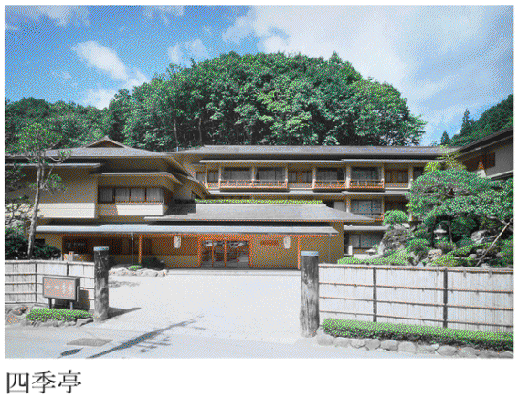
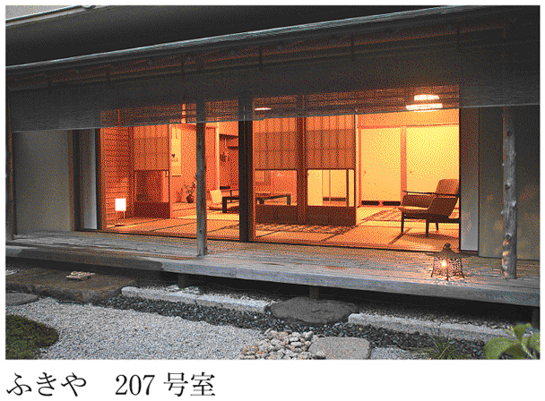
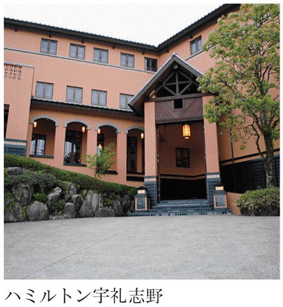

| 日本百名宿 | |
| 柏井 壽 | |
| (2013) | |
はじめに
泊まることが好きでたまらない。
歳を重ねるごとに、その傾向はいっそう強くなり、ここ数年、年間外泊数は二百夜を下回ることなく、昨年などは二百五十五泊を数えた。だからどうだ、ということでもないのだが、少なくとも、宿を語る資格はあると自負している。
数が多ければいいというものでもない。それはたしかなことだ。
食通と呼ばれる人には、ときにとんでもない数を誇る人がいる。中華料理店のテレビＣＭじゃないが、数で人を驚かせる。一日に何軒も食べ歩いて、年間千軒を数えるとブログにある。数多くの店を食べ歩いたからといって、必ずしも食通になるとは限らない。
だから、泊まった数を誇る気持ちなど毛頭ないのだが、聞かれると正直に答えている。
まぁ僕の場合は結果そうなったのだから、いいだろうと思っている。そのことを自慢しようとして、年間二百を超えて宿に泊まっているのではない。ただただ、泊まることが好きだからである。
振り返ってみて、宿に対しては早熟だったと思う。小学四年生のくせに、『上高地帝国ホテル』に飽きたからといって、白骨温泉を祖父にリクエストしたくらいだから。なんとも小生意気なガキである。
宿道楽は祖父譲りである。とはいっても祖父は当時、極端な日本旅館嫌いで、ホテル一辺倒の人であった。それも一流ホテルのみという、贅沢なホテル道楽だったが、「飲む、打つ、買う」とは無縁だったから、ホテル泊まりだけが唯一の娯楽だったのだろうと、今になって思う。
泊まる楽しみを祖父に教わったのが小学生のころ。爾来、還暦を越える今日に至るまで、数限りなく宿に泊まり、その楽しみを享受してきた。いくらかをご一緒に愉しんでいただければと思ったのが、本書を編むきっかけとなった。
泊まる楽しみを語ることにおいては人後に落ちないと自負するが、はてさて、おすすめの宿は？ と聞かれて、戸惑うことのほうが多い。なぜなら、目的によって選ぶべき宿は大きく異なるからである。
いい湯を求めるのと、旨いものを期待するのとでは、明らかに宿が異なる。あるいは景色。さらには宿の設え。宿にはそれぞれ、得手と不得手がある。素晴らしい湯を持つ宿だが、いかんせん食が......。その逆も無論少なくない。
湯だとか味。そういうジャンルで分けてみようかと思わないでもなかったが、あえて地域ごとにおすすめの宿を並べてみた。これには少しくわけがあって、僕の旅が、まず場所ありきだからである。どこそこに行ってみたい、から旅が始まるのが僕の旅。
旅に出ようとして、人がまず思い浮かべるのは何だろう。
もちろん、温泉目当ての人にとっては、地域など頭になく、どこか質のいい湯がないかと思いを巡らせる方もおられるだろう。もしくは、とにかく旨いものさえあれば、どこへでも行くという人もおられるに違いない。
だがしかし。
多くが旅をしようとして、まず思い浮かべるのは土地だろうと思う。なぜなら、旅ガイド本の多くが地域別だからである。それは書店の旅行ガイドのコーナーを見れば一目瞭然。国内、海外問わず、もっとも目立っている旅ガイド本は、地域別のガイド本である。
我が京都はその代表だろう。京都ナニガシと名づけられたガイド本は書店の店頭に溢れている。夏なら北海道や沖縄。春には伊豆、秋なら箱根、と。宿選びにぜひとも本書を活用していただきたい。その思いが、地域ごとに章を分ける結果となった。
北海道に行きたい、そう思われたなら、この宿がおすすめです。そんな思いを持って、章を編み、文を書いた。特色によってアイコンをつけてみたりもした。ご活用いただければ幸いである。
タイトルに「百」と数を決め、「名」と銘打ったのは、言うまでもなく、深田久弥の名著『日本百名山』をなぞったのである。恐れ多いといえば、まさにそうであって、いささか気後れしないでもないのだが、地域別におすすめの宿を並べてみようと思って、真っ先に浮かんだのがこの『日本百名山』だった。この本もまた、名山を地域順に並べて紹介している。そしてもうひとつ、その百名山の選考基準も倣おうとした。
深田は、百名山を選定するに当たって、三つの基準を設けたという。それは品格、歴史、個性。
《人に人格があるように、山には〈山格〉とも言うべきものがある》。深田の言葉を借りるなら、宿には〈宿格〉と呼ぶべきものがある。僕も第一の選考基準として、品格を真っ先に挙げたい。
次に歴史。山と同じように宿にも歴史があるのは事実だが、宿においては、必ずしもこれは当てはまらないことがある。長い歴史があってもつまらない宿もあれば、浅い歴史ながら訪ねるべき宿がある。
今回、百の宿を選定するに当たって、僕がその歴史よりも重んじたのは、成り立ちである。その宿がどんな経緯を経て、今の宿として営まれているか、に重きを置いた。たとえチェーンホテルであったとしても、その宿がその場所にあるべき必然性があるのか、ないのか。
三つ目の個性。これは文句ない。異論などあるはずもなく、山と同じく、宿においても個性は極めて重要である。これをもって第一の基準としたいくらいだ。日本旅館はもちろんのこと、チェーンホテルであっても、個々の宿それぞれに個性はある。無個性の宿ほどつまらないものはない。
山とほぼ同じ基準で百の宿を選んでみた。と、当然ながら異論もあるだろうことは承知している。それは深田氏も同じだったようだ。
私の選定には異論もあろう。殊に人は自分のよく知っている山を推して名山とするが、私は多くの山を比較検討した上で決めた。もちろん私の眼は神の如く公平ではない。私に自信を持たせてくれたのは、五十年に近い私の登山歴である。
（『日本百名山』新潮文庫）
この文章の山を宿に置き換えれば、そっくりそのまま、僕の言となる。あるいは、こうも書いている。
「日本百名山」は私の主観で選択したものだから、これが妥当とは言えないだろう。しかしよく新聞で「日本新名勝百景」といった風なものが、多分に営業政策的な投票の多寡によって決定されることがある。あの種のものよりは私の試みの方が正確である。私は多くの人の意見を聞きたい。そして今後再版の機会があったら、若干の山の差しかえをするつもりである。
（同）
この文章もまた、山を宿に置き換えれば僕の意と同じだ。
山は不動のものだが、宿はけっして不動ではない。むしろ絶えず動いていることを旨とするものだ。したがって、本書と『日本百名山』が決定的に異なるのは、不変のものではない、ということである。十年後、二十年後にあっても、名宿と言えるかどうか、それはひとえに宿の姿勢にかかっている。ここに紹介した宿にあっては、ぜひとも精進を怠らずにいてほしい。
目次
１．フラノ寶亭留
――富良野の森で北の大地屈指の料理を味わう
日本旅館に於ける「西高東低」が近年崩れつつある。それは偏に北海道勢の健闘によるものである。
どういう理由によるものかはわからないが、優れた日本旅館は西日本に多い。その北限を岩手、山形辺りにして、それより北には、素朴な秘湯こそあれども、瀟洒な日本旅館は皆無に等しい。それに比して西日本には、優れて通い詰めたくなる日本旅館が目白押し。長くそんな時代が続いた。
だが近年、北海道のあちこちに、小規模高品質旅館が続々とオープンし、良質日本旅館の北限が北緯四十度を軽く越えたのだった。
それらの特色として、多くがリノベーションタイプ。旅館ホテルのみならず、企業の保養所などの骨組みだけを残して、内部をリニューアルしたものだ。二部屋もしくは三部屋を一部屋に改造する、というのが常道。当然のことながら、一部屋の広さは大きく広がり、そこに客室露天を造り、インテリアデザインもスタイリッシュにする。そんなプチホテルのような小規模旅館が、道内のあちこちに誕生し、これらは今までの北海道になかったスタイルの宿として人気を集めるようになった。
何年前だろうか、支笏湖畔にオープンした小さなホテルを取材した。ここも例に違わず、リノベーションタイプだったが、衝撃を受けたのはその料理だった。実験的な、というよりも挑みかかるようなフレンチ。その意欲的なシェフの姿勢は深く心に残った。
その後、富良野に素敵なホテルがオープンしたと聞いた。企業の保養所をリノベーションして、小さなホテルに作り替え、何より料理が自慢だ――と聞いて、ひょっとして、と思った。前述の宿と同じ系列だったからだ。
『フラノ寶亭留』はその名の通り富良野にあるが、観光の中心地からは少し離れて建っている。それゆえ、ただ通りすぎるだけの観光客の目には入らない。この宿を目当てに訪れる客だけに門戸を開いているといってもいい。
思った通りだった。食事が始まる直前、レストランに現れたのは、件のシェフだった。
古くは「北の国から」、最近では「風のガーデン」。テレビドラマの舞台となる度に脚光を浴びるのが富良野。それほどに「絵になる」風景だ。『フラノ寶亭留』の前庭にもラベンダー畑が広がり、自然を最大限残した〈癒しの森〉がホテルの周りをぐるりと囲む。その敷地は三万坪にも及ぶというから驚く。客室のベランダからの眺めは雄大そのものだ。
この宿では景色もご馳走。バスルームの窓からも富良野の風景が愉しめる。ゆったりと湯に浸かった後は本物のご馳走。お目当ての〈ふらのフレンチ〉はレストランで供される。
高い天井と壁面いっぱいに取られたガラス窓。広々としたスペースで富良野の恵みを食べる。
まさに胸のすくような清々しいフレンチは、敷地内の自家農園で育てた野菜が主役。派手さはないものの、シンプルで力強い料理は健在。大自然と一体となって造られた味わいに心までもが洗われる。北の大地、屈指の美食宿である。
２．湯の川プリンスホテル渚亭（函館湯の川温泉）
――水平線と同じ高さの湯船、海風薫る絶景温泉
北海道は名にし負う温泉王国である。道内至るところに湯が湧き出ていて、多くの温泉旅館がひしめき合っている。中で目立つのは超がつくような大型旅館だ。
豊富な湯量を背景に、いくつもの風呂を備え、まるで元祖スーパー銭湯。それもまた楽しめなくもないが、じっくりと湯に浸かり、広大な海を眺め、四方を囲まれた海から揚がる幸を堪能したい。
そんな願いを叶えてくれる湯宿は思いのほか少ない。むろんそれなりの対価を払えば、本州同様、いやそれ以上に上質な宿も、近年道内には増えてきている。が、手頃な料金で、北海道らしい雄大な景色を楽しめる湯があり、美味をも備えた落ち着きのある宿となると、指折り数えて、両手は必要としない。その希少な一軒が道南にある。
道南函館。エキゾティックな港町から、海岸線に沿って車を走らせると、小半時も経たずに湯の川温泉街へと辿り着く。
――ここは湯の川。向かいは津軽――
海に面した温泉街。津軽海峡を望む湯の川温泉には大小さまざまの温泉宿が軒を並べている。その中の一軒が『湯の川プリンスホテル渚亭』。なんとも味わい深い宿の名だ。
函館。津軽海峡。漁火。と来れば演歌の世界だが、プリンス、渚亭という文字には湘南Ｊ‐ＰＯＰのイメージが広がる。
ほどよき軽やかな宿だが、特筆すべきは、その立地のよさを最大限生かした露天風呂。まずは一階大浴場の外に広がる露天風呂。
波打ち際といっても、まさかこれほど海に近いとは。初めてこの風呂を見て、誰もが驚く。少しでも海風が吹けば、白砂が肌に当たる。波が荒ければ、波しぶきが降ってくる。それほど海に近い露天風呂。水平線と同じ高さに湯が溢れ、なおかつ、その距離が驚くほど近い。北海道、いや日本唯一の絶景といってもいいだろう。
もうひとつ。この宿が日本で一番を誇るのは、百十五室を数える、温泉露天風呂つき客室数。そしてその客室露天からも、海の絶景を得られるのだから、絶景温泉好きには堪らない。
『湯の川プリンスホテル渚亭』はしかし、ただ「湯」だけの宿ではない。海の幸をメインにした「味」にも定評がある。冬ならなんといっても蟹。あるいは津軽海峡を泳ぐ鮪。いずれも全国に名を轟かせる名産品。存分に味わえるのがうれしい。
和洋中を織り交ぜたビュッフェレストランから、贅沢なことに寿司カウンターもあれば、鉄板焼きコーナーまである。湯よし、味よし、眺めよし。手頃な値段で愉しめる、北の大地随一のおすすめ湯宿である。
３．丸駒温泉旅館（支笏湖）
――支笏湖と通じる天然温泉に感動
北海道にはいくつもの湖があり、それぞれの湖畔には多くの温泉が湧出している。雄々しき火山、平らかな湖、湯けむり上げる温泉の三点セットに、吸い寄せられるかのように、多くの旅人が集う。
新千歳空港、札幌、いずれからも車で一時間もあれば支笏湖畔の『丸駒温泉旅館』に辿り着ける。この宿に入って、何をおいてもまずは温泉。丸駒といえば温泉、温泉といえば丸駒。
とりわけ、大浴場から渡り廊下を伝って歩いた先にある露天風呂は、宿の名物であり、かつ、この風呂を目指して、国の内外から温泉通がこぞって訪れる名湯でもある。
支笏湖と露天風呂を隔てるのは岩場のみ。湯の深さは、支笏湖の水位とシンクロして上下する。まるで湖に浸かっているかのような天然温泉では、足元から湯が湧き出ている。時折り、プクプクっとあぶくが弾けているのは湧き出づる徴。
源泉は五十度だという。それを水門の砂利玉で調整する。ぬるめのときは砂利を避け、熱いときは砂利を積む。経験と勘のなせるワザに感服しながら、じっくりと湯に浸かる。ザ・温泉といったところ。
さほどの温泉通でない僕ですら、この湯には感動を覚え、何度も入り、その力を実感したが、この宿のもうひとつの愉しみは、懐かしさを堪能することにもある。
湖に面した部屋。窓際に椅子とテーブルの三点セットが置かれ、居室は十畳ばかりのシンプルな作り。余計なものは一切ない。その潔さがなんとも懐かしい。座卓を前にあぐらをかけば、今どきの旅館はあれこれ、物を置きすぎるのではないかと、改めて感じる。
館内には、かつて多くの日本旅館がそうだったように、売店やゲームコーナー、カラオケホールなどが備わり、浴衣がけの泊まり客が楽しげに顔を寄せ合う。天然温泉で知られる宿はまた、天然旅館ともいえるシンプルさが身上であった。
とにもかくにも、北海道らしい、素朴でスケールの大きい温泉に浸かりたい。そんな方には、一度といわず、二度も三度も足を運んでほしい、本格温泉旅館である。

４．あかん鶴雅別荘鄙の座
――阿寒湖のほとり、ゆっくり籠るべきスイート
近年、急激に出現し始めた北海道型名旅館。そのもうひとつの筆頭ともいえるのがこの『あかん鶴雅別荘 鄙の座』だ。
北海道を代表する観光地阿寒湖の周辺には何軒もの大型旅館が建ち並び、観光バスがひっきりなしに行き交う。定員数百名を超えるような大型旅館の宿泊客は、まず遊覧船に乗り、まりもセンターを見学して、湖畔に戻ったらアイヌコタンで土産物を物色して、と慌ただしい時間を送る。そんな様子を横目に宿の中でゆったりとした時間を過ごすのが『あかん鶴雅別荘 鄙の座』の宿泊客。
広大な大地に多くの観光地を持つ北海道旅は、周遊型になりがちで、それゆえ、滞在型の落ち着いた旅館が存在価値を見出しにくかったというのが、小規模高級旅館を生み出してこなかった主な理由だろうと思う。しかしそれも今は昔。「宿籠り」という時代のキーワードが北海道の宿を変えつつある。
遊覧船乗り場のすぐ傍に建つ宿の外観は存外平板なものだが、そのせいで、一歩館内に足を踏み入れた瞬間の驚きが際立つ。緩やかな弧を描くアプローチを抜けて最初に目に入るのがエントランスギャラリー〈湖森の座〉。大きく翼を広げる「湖森」の主に迎えられ、高い吹き抜けが印象的なロビーラウンジへと進む。大仰なフロントではなく、小さなコンシェルジェデスクでチェックインできるのもうれしい。
二十五ある客室は、すべてが設えや間取りなどの異なるスイート仕様のゆとりある部屋。ソファに腰掛けて、座敷で寝転がって、あるいは部屋の内風呂から、と、阿寒湖の眺めを堪能できる部屋でゆっくりと過ごす時間の贅沢なこと。雄大な景色には広々とした部屋がよく似合う。
客室つきとは思えないほど、ゆったりと作られた内風呂でも充分満足できるのだが、時間があればぜひ大浴場にも足を運んでみたい。阿寒の山並み、原生林、静かな湖面を眺めながら湯浴みできるのもこの宿ならではの楽しみ。併設された岩盤浴ルームも開放感にあふれ、いかにも北海道らしい大自然と一体になれる。
北にオホーツク海、東に太平洋、そして西に日本海と、海に囲まれた上に、広い大地を持つ北海道はまた、食材の宝庫でもある。デパートの催事で人気ナンバーワンを誇るのは「北海道の美味フェア」だと聞いた。豊富な海の幸と森の恵みをふんだんに使った料理がまずいわけがない。ここ『あかん鶴雅別荘 鄙の座』は〈ひな〉と名づけられた食事処を備え、個室仕様になった部屋で北の美味をゆっくりと味わえる。
阿寒湖名産の姫鱒、十勝牛、タラバ蟹、根室産のめんめ、などなど、道東選りすぐりの食材が次々と食膳に並ぶ。とかく大味になりがちな北国ながら、味つけも繊細なら、器遣い、盛りつけも洗練の技が生きている。
雅な夕餉を愉しんだ後は、足湯で旅の疲れを癒すもよし、カウンターバーでグラスを傾けるもよし。大人の宿の愉しみは尽きない。
東北の宿
５．四季亭（繫温泉）
――盛岡の奥座敷でみちのくの温もりを味わう
多くの温泉が点在する東北にあって、開湯九百年を数えるという繫温泉は、盛岡の奥座敷とも呼ばれ、アクセスも比較的便利なこともあって、人気の温泉地となっている。
平安末期、源義家が湧き出る温泉を見つけ、愛馬の傷をこの湯で洗うと快癒した。感心した義家は馬を穴の開いた石に繫ぎ置き、自らも湯に浸かったことから、繫温泉と呼ばれるようになったという、由緒正しき温泉である。
大小十軒を超える温泉宿があるが、僕のお気に入りは『四季亭』。部屋数は二十ばかりという小さな宿だ。
みちのくの鄙びた風情はそのままに、なお且つ、京都にも似た雅な空気をも湛える宿。
湯は硫黄温泉。中庭を眺めながらホッとひと息吐ける内風呂は、樹の香漂う湯船が心地よく、緑に囲まれた露天風呂は、清々しい空気と共に開放感を愉しめる。
みちのく会席とも呼びたくなる、郷土食を映す料理も心のこもったもので、月替わり会席は、その料理だけを目当てに通う客も少なくないという。
海の幸、もりおか短角牛、地の野菜など、食材にも恵まれ、熟達の料理長の腕もあって、岩手随一との声も高い。
特筆すべきは〈八品会席〉。質はそのままに、量を少なめにした夕食は、年配客にはうれしい配慮だ。常々、日本旅館の料理は量が過ぎるのではないかと思う僕には格好。
酒量は減らないが、食事の量はうんと減ったという同輩の方や、ダイエット中のご婦人にもぜひおすすめしたい。
女将をはじめ、細やかな心遣いを見せるスタッフの姿も、この宿を輝かせている。東日本大震災の傷跡もようやく癒えた、みちのくの湯巡り。まずはこの宿から始めてみてはいかがだろうか。

６．炭屋台の湯（花巻台温泉）
――山深い隠れ湯、すべてが「ちょうどいい」という極楽
盛岡の奥座敷と称される花巻温泉郷から、さらに奥、山深い里に「台温泉」がある。よほどの温泉通でなければ、その名を聞いてもどこにあるのかすらわからないだろう鄙の温泉。だが「台温泉」の歴史は古く、開湯千二百年ともいわれるほどで、「台」の語原は古代アイヌ語に由来するという説もあるほど。
ひっそりと、まさに隠れ湯の風情を湛える温泉地。目指す宿は『炭屋 台の湯』。黒壁が印象的な二階屋である。
背後には山が迫り、宿の前には古い街道のような細道が奥山へと続いている。
竹で組んだ犬矢来。横に長く伸びる黒塀。京都の祇園辺りにあってもおかしくないほどの風情ある建物だが、櫓からゆらゆらと立ち上る湯けむりが、温泉宿の徴。湯が手招きしている。
縦格子の引き戸を開け、宿に入ると昔ながらの帳場が目に入る。旅館というより旅籠といった雰囲気の宿だ。靴を脱いで上がり込む。古い神棚、アンティークラジオ、花巻人形。宿のそこかしこに飾られているモノたちには、きっと主人の思い入れが籠っているのだろう。
古の遊郭を彷彿させる艶やかな階段を上がって二階の客室へ。
客室はわずかに十室。同じ間取りの部屋は一つもない。どれもが大仰ではなく、小ぢんまりとしていて、いかにも居心地がよさそうだ。
宿の部屋が、広さや豪華さ、充実した設備を競うようになって久しい。開けても開けてもふすまが続くような広すぎる部屋。ベランダに置かれた露天風呂。そんな宿とは対極にあるのがこの『炭屋 台の湯』。
大家族ならともかくも、夫婦二人、もしくは、ひとり旅なら、これくらいの広さがちょうどいい。この宿に来ると誰もがそう思うことだろう。
案内されたのは〈すみれ〉の間。八畳ひと間に縁側がつく。過不足のない部屋だ。取り立てて眺めがいいわけでもなく、豪華な設えがあるのでもない。が、妙に落ち着くのだ。旅の宿だ、という気持ちがしみじみとこみ上げてくる。
これをして「ほどのよさ」というのだろうか。あるいは「身の丈に合う」といい換えてもいい。
ジャストサイズは風呂も同じ。眺望が得られない分、木の壁に囲まれた安心感がある。岩手の山中。冬の寒さは厳しい。大きな窓がないから冷気が吹き込むことがない。これも雪国ならではの知恵なのだろう。薄暗い風呂に湯気が溢れる。
斜めに張られた板から湯が流れてくる、打たせ湯とはまた違う趣向が愉しい。何より湯がいい。無色透明の温泉は、湯に入る前はかなり強かった硫黄臭が消え、ぬるりと肌にまとわりつく。ずっといつまでも浸かっていたい、そう思わせる湯。
湯から上がると、肌がつるりと心地いい。火照った身体を浴衣に包み、部屋に戻る。
食事が部屋出しというのも、どこか懐かしい。彩り豊かな皿が並ぶ。焼魚はアメリケーヌソースで、肉はビーフシチューで、と、夕食は洋風の料理がメインになるが、味つけがあっさりしているので、後口は軽い。岩手特産のエーデルワインを合いの手にぺろりと平らげた。
夕食の片づけが済むと、布団が敷かれる。昔ながらの日本旅館の有り様だ。地酒の小瓶を寝酒にした後、布団に潜り込む。ふかふかの布団に包まれると、ホッと気持ちが和む。
いい宿とは。眠りに就く前、そんなことにも思いが至る。
部屋、湯、食。すべてに程がいい。過ぎることがない。ちょうどいい按配。宿の原点とはこういう旅館だったのではないか。そう思うに至った。
至れり尽くせりの宿がいいのか。放っておかれることをよしとするのか。その模範解答のひとつを、実はこの宿が持っているのではないか――、そんな想いを抱いたまま、静かに眠りに就いた。
７．丸屋（肘折温泉）
――旅館通なら知っている、隠れ上質の宿
かつて、温泉街といえば、どこもこんなふうだった、と想わせる風情を湛える「肘折温泉」。出羽三山のひとつ月山の麓に、ひっそりと佇む鄙びた温泉郷である。銅山川の流れに沿って、二十軒あまりの宿が軒を連ねる。小高い岡の上から見下ろすと、棟を寄せ合うようにして建つ宿のあちこちから湯けむりが上がっている。
肘折、その名の由来はまさに、読んで字の通り。古く肘を折った高僧が、ここの湯に浸かったところ、たちどころに傷が治ったというもの。それほどに霊験あらたかな湯が、ほぼすべての宿で掛け流されているというから、まさに贅の極み。
数ある宿の中で僕が選んだのは『丸屋』。きらりと光る小規模高品質旅館として、旅館通の間でいつも話題に上る宿である。
細い通り沿いに並ぶ旅館街の、ちょうど中ほど、木造三階建てのシブい建築。
玄関先に建つ堂々たる木彫りの看板が、宿の歴史を物語っている。初めて訪れたとしても、きっと誰もが懐かしさを抱くに違いない。
灯ともし頃ともなれば、行燈に灯りが入り、格子の間から漏れてくるその明るみが温もりを映す。優しく包み込んでくれそうな外観。泊まらずともわかる。この佇まいを見ただけで、きっといい宿だろうと。
暖簾を潜り、ガラガラと音を立てて、よく磨き込まれたガラス戸を引く。玄関先にずらりと並ぶゴム長が、雪深い里を表している。上がり込んで、談話室、マガジンコーナー、ライブラリーと、小さな宿ながら、パブリックスペースは豊富に備わっている。
籠るだけの宿ではないことは、浴室の充実度からも見てとれる。玄関のすぐ横にある貸切風呂は〈幸鶴〉と名づけられていて、地面よりも下に湯船を持つ、珍しい風呂。廊下の奥にある男女別の浴室と、もうひとつ貸切風呂があり、わずか七室の宿に比して、そのバリエーションは豊か。かつては湯治宿として名を馳せた真骨頂。
昔ながらの建築、奥に長く延びる宿には、階段が二箇所あり、迷路気分も味わえる。奥の方の階段を三階まで上ったところにあるのが、今宵の部屋〈月山〉である。
部屋はどれもが違う造りで、人数や好みによって選び分ける。それぞれ魅力的な設えだが、〈月山〉の部屋だけについているという掛け流し風呂に強く惹かれてのセレクトだ。
部屋に入ってまず目に入るのが炬燵。雪降りの日などは、すぐにでも入り込みたくなる。
アンティークのローボードを挟んで炬燵の奥にはベッドスペースがある。目映いばかりの真っ白なベッドカバーがふたつ並ぶハリウッドツインタイプ。
さらにその奥に設えられているのがリラクゼーションスペース。湯上がりの身体を休める場所だ。そしてさらにその奥にあるのが、目指す掛け流し風呂。木造りの湯船にはたっぷりと湯が張られ、奥の切り込みから溢れ出している。
掛け湯ももどかしく、いきなりざぶり。ざーざーと音を立てて湯が流れ出る。手足を存分に伸ばしても、まだまだゆとりがある。なんとも贅沢な部屋風呂だ。
クセのない湯に見えて、しかしその効能は相当と聞いて、長風呂は禁物。シャワースペースでさっと湯を流して、寝椅子に身を委ねる。これぞ温泉の醍醐味。ゆるゆると身体がゆるみ、心までもが解けていく。
夕食は階下の食事室で摂る。蔵戸をテーブルに設え、その上に並ぶ、雪深い里ならではの山菜がうれしい。
揚げたての天麩羅をほくほくと。幽かな苦みに、わずかな春の兆しを感じ取る。メインはいわずと知れた山形牛。卓上で焼きながら食べるステーキは旨い！ のひと言に尽きる。米どころのご飯は、つやつやと輝き、嚙むと甘みが口中に広がる。奇をてらわず、直球勝負の料理は潔い。
鄙びた里にひっそりと佇む上質な宿。『丸屋』は日本が誇るべき宿文化をきちんと残し、かつ今の時代に合った設えにも怠りない。日本旅館のお手本となるべき温泉宿である。
８．櫻湯山茱萸（赤湯温泉）
――桜の季節に湧いた湯に包まれて
日本の名旅館を集めたムックは数多く出版されているが、その信頼度を計る指標のひとつとしている宿がある。こんな宿を推薦していればまったく信用できないという宿が僕には数軒ほどある。ここでその名を明らかにはしないが、泊まってみて、すこぶる値段は高く、それに反して質はおそろしく低い。だが、きっと宣伝上手な主なのだろう。女性誌をはじめ、多くのマスメディアが高級旅館として絶賛している。
一方で、この宿をおすすめしているなら信頼に値する、そんな旅館も何軒かあって、そのうちの一軒がこの『櫻湯 山茱萸』。そもそもが、この宿の名からして、一筋縄ではいきそうにない。すらっとこの名が読める人もさほど多くないだろうし、ましてやこの「山茱萸」が花の名だと聞かされても、どんな花かを知る人も少ないのではないか。
名は体を表す。宿もしかり。その名にどれほどの思いが込められているか、は宿選びの要諦でもある。たとえ覚えにくくても、誰にでも書ける字でなくても、強い思い入れがあれば、躊躇なく宿の名にする。そんな宿が悪かろうはずがない。
和のオーベルジュと僕が呼んでいるその宿は、山形県赤湯温泉にある。
名湯ひしめく山形ゆえ、地味で目立たない温泉だが、その歴史は古く、平安後期に出羽の謀反を鎮めた、八幡太郎義家の弟義綱が発見したと伝わっているから千年近い歴史を持っている。戦いで傷ついた血で湯が深紅に染まったことから赤湯と呼ばれるようになったという。赤湯温泉には十数軒の宿が軒を並べ、それぞれがその個性を競い合っている。中で、知る人ぞ知る味わいの宿が『櫻湯 山茱萸』。
江戸後期に「松葉屋」という屋号で開業したのが始まりで、大正時代には桜の季節に湯が自噴したのを機に名を「桜湯」と改め現在に至っているが、八年前にリニューアルしてから、宿フリークの間で評判を呼ぶようになった。
部屋数はたった七室。すべてが露天風呂つきの広々とした部屋だ。
山形という土地柄、鄙びた秘湯を想像していたが、宿は意外にも街中にあって、しかしその佇まいは料亭然とした風格を漂わせている。打ち水も行き届いた敷石を歩き、瀟洒な門を潜ると下界とは無縁の別世界が広がっている。
大仰なロビーなどはなく、控えめなフロントがあり、途中、茶室を思わせるミニギャラリーを横目に見て廊下を辿る。
通された部屋は〈白山吹〉の間。洋室と二部屋の和室、渡り廊下で繫がった露天風呂という間取りは充分すぎる広さ。まずは庭にある石造りの露天風呂で湯浴みのひととき。開放感溢れる湯を満喫した後は部屋を出てライブラリーへ。と、ここまではこの宿のいわばプロローグ。『櫻湯 山茱萸』の真骨頂は極めた美食にある。
これでもかこれでもか、と希少な食材を連ね、豪華さを演出する料理は如何に底が浅いか。この宿で食事をすればそれがわかるはずだ。量もしかり。多すぎず、かといって足りないわけではなく、心地よいリズムで供される料理を食べていると、いつの間にかエピローグを迎えているといった感じだ。
味を極めて行き着く先は一見何の特徴もないように見えて、しかし食べ進むうち、あまりの旨さに唸ってしまうことが、幾度あったろうか。
量、味つけ、品数に過不足のない料理。言葉では簡単だが、実践している宿となると、指折り数えて五指にも満たない。僕がこの『櫻湯 山茱萸』を和のオーベルジュと呼ぶ所以である。宿のシンボル「山茱萸」の木が黄色い花を咲かせる春、赤い実をつける秋、少なくとも年に二度は訪ねたい宿だ。
余談になるが、どうしても書いておきたいことがある。
平成二十三年三月十五日。誰もが忘れられない東日本大震災の日から四日後、この宿は自ら進んで避難所となった。避難者を受け入れるのみならず、無料入浴所、無料相談所まで開き、被災者の心に寄り添った。この間、もちろん旅館としての機能は止まった。
同年十月二十日に再開するまで、半年以上、それは続いた。
むろんこの宿だけではない。多くの日本旅館、ホテルが被災者に手を差し伸べた。だが、ここまで徹底して被災者の拠り所となった宿を、僕は他に知らない。
シャイな主人はきっと、こんなことを書かれることを好まないだろうが、僕はボランティアがどうとかの観点ではなく、これこそが日本旅館が目指すべき「もてなし」の原点であることと思って、あえてご紹介した。
９．名月荘（上山・葉山温泉）
――名ソムリエの仲居さんがいる宿なら、間違いない
ＪＲ奥羽本線に、かみのやま温泉駅がある。新幹線も停車する駅で、温泉と名づけられているのは、この駅くらいではなかろうか。それほどに温泉を誇りとする地。
駅から北西に辿れば、上山城の近くに旅館が建ち並ぶが、西南へと辿っても旅館街がある。おおむねどれもが大型旅館だが、そこから少し外れた山手に『名月荘』という宿がある。
この宿に初めて泊まったのは、はて何年前になるだろうか。少なくとも十年以上は前のことなのだが、当時はまだ、日本旅館でまともなワインを出す宿が少なかったのに、この宿にはちゃんとした、ルームタイプのワインセラーが備わっていたのである。
そのことだけでも驚きなのに、さらに驚愕したのは仲居さんの対応だった。
今でもよくあるのだが、いくら宿の主人がワイン好きであっても、仲居さんにまでは中々その知識が浸透しない。ワインリストのない宿で、夕食時にワインをとなって、どんなワインがあるのか尋ねても多くがチンプンカンプン。何を尋ねても、聞いて参ります、ばかりの繰り返しというのはよくあること。ところがこの『名月荘』は違った。
チェックインして、部屋へと案内される途中、ワインセラーの前を通りかかった。地酒や地ワインがずらりと並んでいたので、話を聞くと、スラスラと答えてくれる。今日の夕食はカクカクシカジカの料理だから、コレコレナントカの赤ワインが合うのではないか、とすすめてくれる。ならばそれを、と頼むと、仲居さん曰く、セラーの温度が◎度なので、一時間ほど前に出しておきましょう。
夕食時、ソムリエナイフを器用に操り、丁寧にパニエ抜栓してくれた。爾来、ワインを得意とする日本旅館に数多く泊まったが、未だこのときの仲居さんを超えて、手慣れた調子でワインを扱う人には出会えずにいる。
宿というのはおおむね、一事が万事、である。十年以上も前に、これほどにワインを扱い慣れた仲居さんがいる宿。それだけで他は推して知るべし。それぞれに意匠を凝らした客室、緑豊かな露天風呂、カウンターダイニングか部屋食を選べる、郷土色に溢れた料理、さらには本格志向のコンサートホールまで。万事怠りない宿である。
10．熱海荘（磐梯熱海温泉）
――萩姫伝説の残る宿、「究極の普通」を味わう
福島県郡山市は奥州街道をはじめ、いくつかの街道が行き交う要衝の地。多くの旅人が通りすぎる街にはさまざまな文化が刻まれ、分けても「食」においては、東西南北、四方から各地の美味が行き交い、この地に類まれな食文化を遺した。
それは今も同じで、郡山を通る鉄道は東北本線や新幹線を含めて五本も走っている。昔と比べて格段に流通事情が向上した今は、さらに多くの食材がこの街に通っている。
その郡山から磐越線で十五分ばかり。郡山の奥座敷的存在の磐梯熱海駅は鄙びた風情を漂わせている。
熱海と聞いて誰もが思い浮かべるのは伊豆。だが「熱の海」と書く地名、すなわち、湯が湧き出でる地は日本各地に点在している。駅から歩いても苦にならない距離にあって、落ち着いた雰囲気の構えで客を迎え入れるのが『熱海荘』。いかにも大人の宿らしい控えめな佇まいは、玄関を潜って、宿の中に入っても変わらない。これ見よがしな派手な造作もなく、微かに漂うお香の香りがこの宿の有り様を表している。
部屋数はわずかに十室。どの部屋も特段豪華だとか、格別広いとかではないのだが、部屋にいると不思議な落ち着きを得られる。
中でも二階にある〈桂〉の間などは、どこの旅館にでもあるような普通の部屋の間取りなのだが、数多く泊まった宿の中で特に印象に残る部屋だった。私事で恐縮だが、これは僕の長男の名と同じで、偶然にも隣の隣の部屋の名は長女と同じ〈梓〉の間だったことにも何か不思議な縁を感じた。
閑話休題。
部屋でひと休みした後は風呂へ。渡り廊下を歩き、別棟に設えられた木造りの温泉棟に入ると、まず目に飛び込んでくるのは川越しの豊かな緑。川の名は「五百川」といい、その名の由来は、京都の鴨川から東に数えて五百番目にあたる川といわれ、萩姫伝説に登場する話。萩姫はこの磐梯熱海温泉に入るとたちまち病が治ったとも書かれている。そんな霊験あらたかな湯に入って、疲れを癒した後に待つのは名にし負う宿の夕餉。
食事は朝夕ともに部屋まで運ばれてくる。昨今は食事処を別室に設けることが多いが、日本旅館の王道といえばやはり部屋食だろう。自室でゆっくり食事できるのは日本旅館ならではの大きな楽しみのひとつである。
食材は、あえて地元のみにこだわらず、全国各地から旨いものを集めて供しているのもこの宿の特徴だ。「地」より「質」。こだわりを捨てることですべてに上質を極めるのが『熱海荘』。泊まってみて食べてみて、初めてこの宿のすごさがわかる。すべての日本旅館の規範となるべき宿は、何ひとつ特別なものはなく、普通の宿。だがそれは「究極の普通」なのだ。
11．庄助の宿瀧の湯（東山温泉）
――小原庄助さんが身上を潰した？ 渓流沿いの絶景風呂
朝寝と朝湯、朝酒が大好きなくらいのことで、はたして身上を潰すものなのか。子供のころにそんな疑問を持ったことを思い出す。
「会津磐梯山」という民謡で覚えているのは、たいていが小原庄助さんのくだりだろう。宝の山と歌われる会津磐梯山と、身上を潰した小原庄助さんが、どう繫がるのかも、子供心に不思議だった。
その小原庄助さん縁の温泉宿だと聞き、持ち前の好奇心を大いに搔き立てられた。
東北新幹線。郡山駅で下車し、磐越西線に乗り換える。会津若松駅に着いたら、白虎隊の像を横目にしてタクシーに乗り込む。
雪模様の日だった。郡山から会津若松、そして東山温泉へ、と道を辿るに連れて、雪は深さを増す。
チェックインして、何を置いても風呂へと急ぐ。フロントは四階、風呂は一階。傾斜地に建つ宿ではよくあることだ。
エレベーターを降り、まず目に入ってきたのは、石をくりぬいた風呂。なんと、小原庄助が入った風呂だと記されている。実在の人物だったのか。そして身上を潰したのは、この風呂が原因だったのか。意外と小柄な人だったのだな、とか、さまざまに感慨深いものがあるが、身体はしんしんと冷えてくる。早く湯船に入ろう。
大浴場は、その名も〈庄助風呂〉。伏見ケ瀧を真横に眺めながら、渓流沿いに広がる湯。併設された露天風呂は〈古の湯〉。どこにいても、流れ落ちる滝の音が聞こえ、絶景を間近にできる。
川や滝を間近に眺めながら浸かれる絶景温泉は他にもある。だが、この宿はそのスケールが違う。川の流れに沿って横長に延びる建屋が幸いして、川が滝を作り、流れ落ちるさまを、順を追って眺められる温泉なのである。これは貴重だ。
貸切風呂からは滝になる前の、悠々とした流れ。大浴場に入ってからは、ちょうど滝が流れ落ちる様を真横から。そして木造りの露天風呂からは滝を迎え撃つように、清らかな流れを見ながら湯を愉しむことができる。そして最後には、小原庄助さんが入ったと同じような壺湯から、その全体像を眺めることができる。
千三百年も前、行基上人が伏見ケ瀧から湯が湧き出ているのを見て、開湯したのが始まりとされる東山温泉。その名の通り、『瀧の湯』は往時の行基気分をも味わえ、かつ、歌にも歌われる小原庄助さんの気持ちにもなれる。風呂好きにとっては堪えられない宿だ。
12．つつじ亭（草津温泉）
――板で湯もみして入る、味わい多い草津の名旅館
日本三大名湯のひとつ、草津温泉の名はあまりにも有名だ。下呂温泉、有馬温泉と並んで、名泉であると共に、いかにも温泉地らしい佇まいで誰にも馴染みが深い。
湯畑、湯もみ。草津温泉の情景を思い浮かべるのは容易だが、では草津を代表する宿は、といえば、すぐには浮かんでこない。そんな時代が長く続いた。
豊富な湯量を誇り、それゆえ大型旅館が軒を並べていたことも、その一因となったのかもしれない。あるいは湯治を目的とした値ごろな宿が多く湯畑を囲んでいたからだろうか。これほどの温泉地でありながら、質のいい小さな宿がほとんどなかった。
多くの観光客でにぎわう湯畑から東へ、少しく離れる。川沿いをさらに歩き、「草津熱帯園」を越えて、ようやく目指す宿がその姿を現す。
『つつじ亭』。なんとも控えめな宿の名だ。いってみれば、つつじの花などは格別珍しいものではなく、普通は花見の対象にもならない。そんな地味な花の名を宿に冠したところに、実はこの宿の狙いがあるのだろうということが、泊まってみればよくわかる。
多くの宿は、どうにかして個性を際立たせよう、他に類を見ない宿を作ろうと目指すのだが、ここ『つつじ亭』はそれとは逆の方向を向いて歩む宿のように思える。
個性というものは、ある意味で諸刃の剣である。客の嗜好と合えばいいが、合わなければ疎まれる。花に喩えるなら桜。強烈な個性を見せる花を多くの日本人は愛するが、中には桜を嫌う人もいる。
それが、つつじとなると、強く愛する人も少ないだろうが、嫌う人もいないに違いない。
この宿はきっと、世にいう、空気のような存在感を目指したのだろうと思う。
宿は、あっけないほどに、その相貌を顕にする。客を威圧するような、大仰な門構えもなく、すんなりと宿に入る。と、ここでも高級旅館というよりはむしろ、瀟洒な邸宅といった趣で、客を温かく迎え入れる。
宿の中もしかり。きちんと整えられてはいるが、日本旅館特有の、緊張感を強いるような設えではない。
他の場所でも繰り返し述べているように、今、日本人が日本旅館、それも一定ランクを超える宿を訪ねるとき、少なからず身構えてしまう。その肩の荷をさらりとおろしてくれると、客はどれほど気が楽になることか。
客室へと案内される途中、ホっとため息を吐いたなら、それはもうすでに『つつじ亭』の術中にハマっている証。
客室は十室。主人の目が届く範囲だ。通されたのは〈三輪〉の間。本館の一階にあって、部屋つきの風呂に温泉が掛け流されているのがうれしい。小ぶりの湯船だが、ひとりで入るにはちょうどいい。
いくぶん熱めなので、湯畑のショーを真似て、板で湯もみする。これがまた愉しい。ゆるりと身を沈めると、湯が音を立てて溢れる。これぞ温泉の醍醐味。
『つつじ亭』にはほかに、大浴場にあたる〈うららの湯〉と貸切風呂がある。泉質が異なるので、できれば両方入りたい。まずは人気のある貸切風呂の予約をしておき、〈うららの湯〉へと足を向けるのが『つつじ亭』の正しい風呂の入り方。
さて『つつじ亭』。本領を発揮するのは、その卓越した料理である。部屋ではなく食事処で供されるのも、最良の状態で、叶う限り早く客の膳に届けたいと願う表れ。
京懐石ほどには気取らず、並みの旅館会席とは一線を画し、地の素材と、遠来の希少な食材を組み合わせ、客の嗜好に寄り添う料理は、草津の湯と同じく心に効く。
すべてに控えめなのがいい。これ見よがしの盛りつけではなく、さらりと品よく、器映えのする料理は、どれもが量も少なめで、味わいも慎み深い。たとえば、夏の夕餉に出された鮎の塩焼きなども、小ぶりの鮎を丹念に焼き上げ、さらりと二匹を横たえる。化粧塩を塗りたくることもなければ、大仰な笹飾りも施さない。それはきっと、料理に軽重をつけないからだろうと思う。
前菜とメインディッシュという分け方をするのは、西洋的な考え方だろう。一汁三菜をベースとしてきた日本料理には、主役という考えがない。だが、ともすれば昨今の和食はメイン料理を決めたがる。京都の割烹辺りなら、それもいいだろうが、旅館の夕餉となれば、主菜を決めず、幾皿かの旨い料理を続けることが望まれる。
鮎の後には上州牛も控えている。さりげなく美味を連ねる組み立てこそが、日本旅館の夕餉にはふさわしい。
食後にもうひと風呂、もいいが、余韻を味わうなら、暖炉を備えた談話室で、温かい紅茶を飲みながら、ぼんやりと過ごすのも悪くない。北欧のプチホテルにあるような、円形の瀟洒な部屋で心を鎮める。
ふうわりと心が安らぐ宿。それが『つつじ亭』である。
13．強羅環翠楼（箱根）
――歴史が根づく建物で、最高のホスピタリティにくつろぐ
正直にいえば、箱根の宿には、あまりいい思い出がなかった。プライベートで訪れても、取材という機会を通じても、箱根の宿にさほどの魅力を感じたことがなかった。それらは主に最近できた新しい宿。つい新しきに目が行き、泊まってみて落胆する。スタイリッシュと斬新さを売り物にして、芸能人御用達もセールスポイントにする、その手の宿。
一番のネックはやはりその価格。首都圏から近いことも手伝って、どこもが強気の価格設定をしている。アクセスのいい温泉地ほど宿泊費は高くつく。その例に違わず、箱根価格と呼ばれるほどに、コストパフォーマンスは悪い。
さらにはおおむね、サービスも決していいとはいえない。リーフレットやホームページでは、「心のこもったおもてなし」と謳うが、実際に訪ねてみると、そのぞんざいな態度に驚かされる。客を見下すような姿勢は、箱根に限らず、アクセス至便な地に多く見られる。放っておいても客が来る、そう思い込んでいる経営者が少なくない。何度もそんな場面に遭遇したから間違いはない。
たとえば湯本の旅館Ａ。三時のチェックインと聞いて、二時半すぎに宿に入ると、まるで役所のような決まり切った台詞。
「お約束は三時ですので、それまでロビーでお待ちください」
仕方なく温い茶を啜りながら時間をつぶす。テレビの時報が三時を告げたのを確かめてから、ようやく仲居さんが現れたが、お待たせしました、の一言もない。ひょいと僕のバッグを持って、すたすたと歩き始める。
長い廊下を辿ってようやく部屋に。まずは僕の背丈を見て、
「後で特大をお持ちします。夕食は何時になさいますか」
「七時でお願いできますか？」
「七時だと遅れるかもしれませんが、それでもよろしいですか？」
「どういう意味です？」
「皆さん六時からお召し上がりになりますので、そのお客さんが終わってからになります。七時半くらいになると思いますよ。それでもよろしければ」
言外に六時からにしろと言ってるようなものだ。待たされるのは大の苦手なので、六時からにした。
一事が万事この調子であった。要するに客の意向より、自分たちの都合を優先させる。こんなことで居心地のいいはずがない。
それに比して、この『強羅環翠楼』。さすがに老舗宿と感じさせる場面に幾度も遭遇した。本来の箱根の宿は、これほどに高いホスピタリティを持っていたのかと感心した。僕は箱根の宿、といいながら、新しきばかりを訪ね、伝統ある老舗宿から足を遠ざけていたことを、大いに反省した。
箱根登山鉄道の強羅駅から、歩いて三分ばかり。多くの旅人が行き交う駅のすぐそばにあるとは思えないほど、宿のアプローチに入った途端に閑静な空気に包まれる。
まずは控えめな玄関の佇まい。古きよき家の姿に志の高さを感じる。名高き文人の住まいを彷彿させる建屋は、元々、三菱系財閥、岩崎家の別荘だったと聞いて納得。戦後間もない昭和二十四年の開業だという。半世紀を超える歴史はダテではない。設えにも、ここで働く人々にも、その歴史が浸透している。
広い敷地に点在する客室はいずれも、本格的な木造建築。帳場の横から階段を上がって二階。〈晴旭〉の間などがその典型だろうか。
大正十年の建築。岩崎家の別荘だったころには、主賓を迎える部屋として使われたのではないかと思うほどに、贅を尽くした建築。天井はあくまでも高く、欄間の細工も念入りなら、使われている柱にはフシがほとんどない。十二畳と十畳、二間続きの客室には当然のごとく、源泉掛け流しの風呂が備わっている。こういう部屋が本来、箱根の温泉宿なのだろうと思う。
部屋出しされる料理もまた然り。先付、前菜、向付と続き、煮物、焼物、肉料理と流れていく夕餉は、正しい旅館料理である。
〈華清園〉と名づけられた、よく手入れの行き届いた庭園を散策し、二本の源泉から湧き出る温泉をゆったりと愉しむ。すべてに真っ当な、箱根時間を過ごすことができる。何ら奇をてらうことなく、オーソドックススタイルを守り続ける宿に、真の箱根の姿を見た。
14．仙郷楼 別邸「奥の樹々」（仙石原）
――少し贅沢に、かつ静かに
明治三年創業という、長い歴史を持つ仙石原の老舗旅館『仙郷楼』が満を持して、平成十七年に開いた別邸。それが別邸『奥の樹々』である。館そのものは新しくとも、宿の歴史は古い。ここもポイントのひとつになる。
木造平屋の本格数寄屋建築で、客室の数はわずかに六つ。そのどれもが二十五坪以上の広さを持つというから、まさに別邸。
本館の横に建つ別邸だが、その控えめな構えもあって、それと気づかずに通りすぎる客も少なくないという。何かというと豪華さを競うような、今どきの旅館モドキにはない品格を感じさせてくれる。
料亭をも思わせる瀟洒な玄関から館内に入ると、大きくガラス窓の取られた明るいロビーラウンジへと至る。わずか六室だけのためのラウンジは贅沢な空間だ。
このラウンジから畳敷きの長い廊下を伝って、それぞれの客室へと続いていくのだが、この廊下もまた風趣があり、ちょうど池に浮かぶ回廊のような造りになっている。
特筆すべきは、すべての客室に源泉かけ流しの露天風呂と、庭から空を望む月見台を備えていること。
僕のお気に入りは〈山栗〉の間。十畳が二間続きになり、広縁に露天風呂が備わる部屋だ。ただ広いだけの部屋もつまらないが、どう使えばいいのか、頭を悩ますほどに、余計な設備を備えた部屋も使い辛い。そこへいくと、この宿の造りは極めて使いやすい。手前の十畳を食事室として使い、奥の方を寝室にする。あるいは二世代で泊まるなら、それぞれを使い分ける。トイレが二箇所あるので、そうした使い方もできる。
部屋の名の由来は、その庭に植わる木。これもまた粋な趣向である。
宿の有り様と同じく、朝夕の料理もまた、華美に走ることなく、しかし上質を極めたものである。時に繊細な盛りつけが出るかと思えば、一転してダイナミックな皿が出てくる。緩急をつけた料理もおすすめ。
少し贅沢に、かつ、静かに過ごしたいという向きには格好の宿である。
15．富士屋ホテル
――不易流行、一生に一度は泊まりたい王道の老舗ホテル
箱根のランドマークとして、古くから観光客に親しまれている『富士屋ホテル』。多くの人々がその佇まいを見上げ、足を踏み入れ、美食に舌鼓を打ち、一夜の寝所として定め、憩いのひとときを過ごしてきた。
その関わり方はさまざまなれど、箱根を訪れるあらゆる観光客の心を満たし続けているこのホテルはなぜ、それほどまでに長年に渡って愛され続けているのか。数多ある箱根のホテル旅館の中で、際立った存在感を見せる秘密はどこにあるのだろうか。
箱根湯本から強羅へと辿る途中、宮ノ下駅からほど近い、国道一号線沿いに建つ宿は、都心の高層ホテルを見慣れた目に、ホテルより旅館に近く映る。
ひっきりなしに車が行き交う交差点から敷地に入り、玄関先に立つと、「レトロな空気」という一言では言い尽くせない、クラシカルな佇まいに圧倒される。
今から百三十五年も前に創業した『富士屋ホテル』は日本におけるリゾートホテルの草分けとして知られる。その創業の年、明治十一年といえば「西南戦争」がようやく鎮圧された翌年にあたる。つまりは未だ明治維新が落ち着きを見せていないころである。そんなときすでにここ箱根には、かくも優美で遊び心溢れるホテルが建築されていたということに、感嘆せざるを得ない。ホテルに足を踏み入れ、廊下を歩き、階段を昇り降りするたびに、その想いは増幅されていくばかり。
泊まらずとも利用できるレストラン〈ウィステリア〉でホテル名物ビーフカレーに舌鼓を打った後、ティーラウンジ〈オーキッド〉で馨しいコーヒーの香りに心を休める。そんな客たちが、ホテルの本館に心地よいざわめきを響かせる。
案内されて本館二階のツインルームへ。大きなドアを開き、中に入ると、不思議な空気に包まれる。高い天井。何のてらいもなく、しかし存在感のある家具。部屋のあちこちに施された細かな装飾。
有名無名を問わず、多くの外国人客が過ごしただろう客室は、エキゾティックな空気に包まれていて、どこか日本旅館のような和らぎをも持っている。
それはきっと、伝統と格式を重んじながらも、ハートフルなサービスを際立たせているからだろう。日本風の庭園やホテルのそこかしこに造られた「和」の意匠が醸し出す空気がそれを象徴している。
リゾートホテルが整えるべき設備は最小限に留め、日本旅館にも通じる「もてなしの心」は惜しみなく伝える。これぞ本物のホテルである。
とかく慇懃にすぎる接客が、客の心をざわつかせることが多い老舗ホテルにあって、『富士屋ホテル』のスタッフたちのサービスはやわらかくも温かい。ちょっとした頼み事や尋ね事に対して、にこやかな笑顔で、丁寧に応えてくれるのがうれしい。
首都圏からのアクセス至便な箱根は、客のニーズに応えるべく、絶えず新しきを求めている。団体客からファミリーへ、さらにはお籠り系カップルへと、めまぐるしく変遷を遂げる客層の望む姿へと宿はその様相をがらりと変える。むろんそれは箱根に限ったことではないのだが。
スクラップ＆ビルド。壊して建て替えた方が遥かに効率はいいだろうが、あえて熟練の職人の手に委ね、文化財の修復にも通じる普請を重ねることで、今日の『富士屋ホテル』はその姿形を保ってきた。
ホテルという形態ゆえ、営業を休止して修復するわけにはいかない。営業の合間を縫って、極力客の目に触れないように改築や営繕がなされる。わずかな時間に集中して工事を行うためには多くの工夫や努力が必要だ。
あるいは長い歴史の間に増え続ける顧客は、その多くが常連客になる。レストランの席や料理について、彼らの希望に可能な限り応えようとすれば、そこには大きな困難が伴うことだろうが、誇り高きホテルスタッフには遣り甲斐のある仕事に映る。
営繕という仕事に打ち込む熟達の職人、温室のすべてを管理し、草花を育てることに日夜専心するスタッフ、宿泊客向けに、夕方館内を案内するコンシェルジュ、レストランを訪れる客の好みを把握し、心を配るウェイター・ソムリエ。お話を伺ったすべてのスタッフがこの『富士屋ホテル』をこよなく愛してやまないことが、ひしひしと伝わってくる。
どうすればゲストが心地よく過ごせるか、ただその一点にのみ心を砕く人々がもっとも大切にしているもの。それは「守る」だと気づいた。古き建築を守り、古くからの客を守る。新しきを追う風潮には無縁の姿勢が、このホテルを、燻し銀のように渋く輝かせているのだ。
「不易流行」。時代に翻弄されることなく、百三十五年もの間、ずっと王道を歩んできた『富士屋ホテル』。その姿形はもちろんのこと、可能な限り客をもてなす心根は、きっとこの先も変わることなく、きらきらと輝き続けることだろう。
16．オーベルジュ オー・ミラドー（箱根）
――箱根西麓野菜とシェフの、幸福な出会い
箱根に『オー・ミラドー』あり。食通には憧れともいえるオーベルジュも早や二十七年の歴史を数えた。時代に取り残されたペンションが、その名前のみ切り替えたオーベルジュではなく、本物のみが持つ風格を湛えたエントランスを入ると、心浮き立つレストランがドアを開いて待ち受ける。
「ようこそオー・ミラドーへ」。辿り着いた感が、都会のレストランにはない昂揚感を与えてくれる。
東京を離れ、この地でオーベルジュを開いたシェフは、地の野菜を求めようとして、ある日偶然、朝市で箱根西麓野菜と出会う。これぞこの地に求めていた食材だと確信したシェフと、機会を待っていた野菜の作り手が運命的な出会いを果たす。
箱根西麓野菜を得て、シェフの作る料理は箱根ならではのフレンチになった。世界に名だたる美食都市東京と同じ、いやそれ以上の洗練を極めつつ、箱根という地の土の香りを残す料理は、真の三ツ星レストラン。わざわざに足を運ぶ価値ありだ。
十二歳以下はお断り、ドレスコードはいわゆるスマートカジュアルというスタンスもいい。媚びないレストランはすこぶる居心地がよく、野菜の旨さはもちろん、愛鷹牛、芦ノ湖の紅鱒、天城シャモなどの吟味した食材を、熟達の技で調理する。
オーベルジュとは本来、宿泊もできるレストラン。ある意味で客室は付加施設なのだが、このオーベルジュは真っ当な客室を備え、かつ温泉大浴場、露天風呂、屋外温水プールまでを持つ。プチホテルともいえる充実度である。
眼下に広がる芦ノ湖から吹き渡ってくる凛とした風と、箱根の森が醸し出すフィトンティッドが絶妙のスパイスとなって、味わいに一層の深みを与える。箱根という地にしっかりと根づいたオーベルジュは、あくまで自然体を守る。
旨いものを食べに箱根に行く。せっかくだから泊まっていくか。そんなおとなの時間を過ごせる素敵な宿だ。
17．はつはな（箱根）
――桜に包まれた、箱根の数少ないおすすめ宿
宿は必ずしも家業でなくてもいい。たとえ大きな企業が運営したとしても、志さえ失わなければ、評価すべき宿があれば、それを名宿と冠するのにためらうことなどない。
たとえば箱根の『ホテルはつはな』などがその典型だろうか。大きな電鉄会社が運営する宿とは思えないほどに、小回りがきき、使い勝手のいい宿である。
小田急といえばロマンスカー。新宿駅からは一時間半と掛からず、箱根湯本の駅に辿り着く。そこからはバスに乗り換えて十分ほど。つまりは新宿から二時間足らずで宿に着くという寸法。
「はつはな」と聞いて、お茶人さんなら、徳川将軍家伝来の「大名物」として名高い茶入を思い浮かべるだろう。楢柴肩衝・新田肩衝と並んで天下三肩衝と呼ばれた茶器のひとつを「初花」と呼ぶが、箱根界隈で、はつはなといえば、その春、最初に花を開く桜を指す。箱根では躑躅と共に、花は桜。
日本を代表する観光地である箱根で咲く桜。まさしくそれは、絵になる光景であり、箱根という地をよく表す絵柄である。それを宿の屋号にすることからしてすでに、僕にとっての名宿の条件を満たしている。
かつて、この『はつはな』のすぐ近くに「桜」を冠した屋号の宿があった。その屋号どおり、宿の随所に桜のモティーフがちりばめられ、石鹼までもが桜のデザインになっていた。桜の華が咲く頃に幾度となく泊まった宿は、近頃、旅館再生を旗印に掲げるグループの手に渡り、屋号から「桜」の文字は消え、日本中に点在するリゾートチェーンと同じ屋号になった。
きっと建屋の随所には桜の意匠が残ったままのはずだが、そこに目を遣ることなどなく、ファストフードよろしく、全国どこに行っても同じ屋号の宿になってしまった。
ホテルならそれでいいだろうと思う。だが日本旅館というものは、その地を色濃く映し出すこともまた、使命のひとつなのである。
「桜」が消えた今、余計にこの『はつはな』という宿の名が輝いて見える。むろん、宿の名だけが輝くのではない。名は体を表す。玄関先から入って、広々としたロビー、食事処、客室、温泉棟。すべてに行き届いた宿である。
湯坂山の山ふところに抱かれ、須雲川沿いに佇む宿は五十室近くの客室を擁する、比較的大きな宿だが、宿に入るとそれをまったく感じさせない。多くのバリエーションを持つ客室の中で泊まったのは、露天風呂つき和洋室タイプ。１０７号室である。
ツインベッドが置かれた洋間、掘りごたつ式になった六畳の和室。それにテラスの露天風呂がつく。自家源泉の掛け流しがうれしい。四季折々に変化する湯坂山を眺め、誰にも邪魔されることなく、存分に湯を愉しめる。希望すれば部屋食も可能だが、雄大な眺めを間近にできる食事処がおすすめ。豪華にいくなら〈懐石味匠〉。箱根の宿ならではの華やかな盛りつけに多くが歓声を上げる。
部屋に戻って、もうひと風呂。しんしんと更けゆく夜に心が鎮まってゆく。
なによりありがたいのはチェックアウトが正午ということ。この辺りが大きな企業が運営するメリットだろう。家業ではきっと難しいに違いない。箱根でおすすめする数少ない宿。
18．ふきや（湯河原）
――文化薫る湯河原の洗練を
箱根と熱海。どちらもその名は全国津々浦々にまで知れ渡っている。一度は行ったことがある、もしくは訪ねてみたい、日本人なら多くがそう答えるだろう。その両者に挟まれるように位置する湯河原はしかし、関東の方ならいざしらず、その位置を正確に言い当てる人は少ないのではないだろうか。
新幹線だと熱海駅で降りることになる。東海道本線に乗り換えて隣の駅、湯河原までの乗車時間は五分。伊豆と箱根の境といってもいいだろう立地は、両方のよさを併せ持つことともなる。
湯河原という街は、東西、横に広がっている。東に辿ればすぐに相模灘。西へ向かえば、峠をいくつか越えて箱根へと至る。つまりは海と山の両方を備え持っている地なのである。
本書もそのひとつだが、地域別に編もうとすると、伊豆は東海地方、箱根や湯河原は関東地方となり、まったく異なったエリアというイメージになる。箱根はともかくも、湯河原には伊豆の香りもするように思えるのだが。
湯河原の宿は多くが東側、箱根に近い方に偏っている。駅から車で向かうと山に分け入って行く感じだ。
湯河原の高台に建つ『ふきや』は、外観こそ個性を排した鉄筋建築だが、一歩館内に入ると、細やかな細工の施された日本建築に心が和む造りになっている。
パブリックスペースには、李朝家具やアンティーク、北欧家具などがあちこちに配され、洗練された空間を生み出している。
湯河原の湯はどことはなしに丸く感じる。一階にある大浴場と露天風呂、屋上に備わる露天風呂。どの湯に浸かっても、心が平らかになる。とりわけ三階にある貸切露天風呂がいい。
丸い樽状の湯船にどっぷりと浸かり、目の前に広がる、緑豊かな山々の眺めに目を遊ばせる。ひとり旅はいささか贅沢が過ぎる。気の置けない仲間や、家族と一緒に、湯浴みを愉しみたいものだ。
客室の数は二十。ほとんどの部屋が四十五平米以上の広さを持つ、ゆったりとした造り。
僕のお気に入りは２０７号室。十畳と八畳の二間に加えて、広縁は八畳、踏込みが三畳。七十四平米という広さを誇る。内湯の檜風呂に入って蛇口をひねれば、源泉百パーセントの湯が出る。
湯上がりには広縁で涼む。フィン・ユールやラーセンなどがデザインしたミッドセンチュリーのデンマークの椅子に座り、山からの風を頰に受ける。心地よい時間を過ごすうち、そろそろ夕餉の支度が整ったようだ。
地元相模湾に揚がった新鮮そのものの海の幸を中心に、黒毛和牛という変化球も加え、京割烹にも通じる洗練の技でそれらを調理する。器も選び抜かれ、四季折々の風情を映し出す盛りつけも相まって、身も心も満たされる。湯よし、味よし、設えよしの宿である。

19．石葉（湯河原）
――涼風のように潔い軽やかさを堪能する
眺めよく、設え美しく、味わい滋味深く。三拍子揃う宿というのも、そうそうあるものではない。加えて万事控えめにして心得よしとなれば、日本広しといえども両手指を数えて、その辺りで首をかしげてしまう。そんな貴重な一軒が湯河原にある。
湯河原の街を抜け、急な山道を登り、いくつものカーヴを曲がり、車一台がやっと通れるような細く険しい道を上へ上へと進むと、ようやく辿り着いた宿には、『石葉』と染め抜かれた、大きな白い暖簾がゆらゆらとはためき、涼やかに客を迎え入れてくれる。
本棟から一旦外へ出て、石段を数段上がったところにある離れ〈観月庵〉が今宵の部屋。宿の中でも一番の高台にあるので、その眺めは広く深い。
霧に霞む箱根の山々を望む縁台には涼風が吹き渡り、それは夏仕立ての御簾戸を通して、部屋の隅々にまで届く。窓の外には、大きく枝を広げる楓が、鮮やかな緑を目に映してくれる。燃えるような紅葉もいいが、露をたっぷり含んだ新緑の、心の襞に沁み入るような清かさもいい。『石葉』の部屋はその広さや設えに違いこそあれ、豊かな自然との一体感はどこも同じだ。桜の木が目の前に植わる〈桜〉、箱根連山が聳え立つのを遠くに望む〈城山〉、京都を思わせる小さな坪庭を持つ〈翠〉など、どの部屋も趣の異なる借景を持っている。
自然と一体になることから生まれる「落ち着き」は、日本旅館の要諦なのだが、近頃は作りすぎた「景色」に興を削がれることが少なくない。その点、この宿の「落ち着き」は第一級のもの。
『石葉』の一番の見どころは、その設えにある。これ見よがしにならず、控え目でありながら、それらの存在感は際立っている。たとえば玄関横の小間に掛けられた熊谷守一の飄々とした字。あるいは観月庵の床の間に飾られた棟方志功の団扇絵。同じく離れの〈草楽庵〉に掛けられた松田正平の「蛍」一字。どれもが、あくまでさりげなく、ともすれば見逃してしまいそうに、しっくりと空間にとけ込んでいる。実に清かである。とかく重くなりがちなのが日本旅館。だがここでは、湿っぽい情緒を排し、潔いまでに削ぎ落したさまざまが、宿という空間を軽やかに弾ませる。
大浴場の、扇のような形の四半月に象られた小さな湯船からは、山々の緑が存分に眺められ、窓を開け放てば、木々に漉された美味しい空気が入ってくる。岩で組まれた露天風呂、小さな能舞台を思わせる展望台。どこからも宿の甍越しに箱根の山々が望める。日が落ち、灯ともし頃になると、どこからか、ぷーんといい香りが漂ってきて、夕餉への期待に胸がふくらむ。
真鶴の港に揚がる海の幸、地元野菜、伊豆牛と食材には事欠かない。茶道にも造詣が深い主人の感性で選び抜かれた器が、料理をより一層引き立てる。すべてに味わい深い宿である。
20．藤田屋（湯河原）
――木々と、花々と。
ほどのよさ。頃合い。ちょうどいい按配。湯河原の『藤田屋』に泊まると、そんな言葉が浮かぶ。過不足がないともいい換えることができる。
大仰な施設はなく、十六を数える客室。四箇所の浴室。サロンと応接間。ただそれだけの宿だが、それで充分事足りる。
広縁のついた十畳ほどの和室には、見事な欄間細工が施され、細かな格子が嵌った障子の白と好一対をなす。それがまた主張しすぎないのもいい。
温泉宿。まずは何をおいても風呂へ。〈望乃湯〉と名づけられた大風呂は檜の丸太で天井と柱を組み、湯船の下に五色石を敷き詰めた、なんとも贅沢な造り。露天ではないのだが、広くガラス窓が取られているので、丸い湯船に浸かっていると、屋外で湯を浴びているような気分にさせられる。
客室といい、風呂といい、実に穏やかで、品がよく、何ひとつ障るものがない。すべてに出すぎない、宿の姿勢がきっと客の心を丸くおさめるのだろう。
明治十五年創業という老舗旅館だが、クラシカルなスタイルをきちんと残しながらも、少しずつリニューアルを重ね、昨今のニーズに合わせた露天風呂つきの部屋もある。いかにも湯河原らしい趣のある宿の佇まいを、燻し銀のように輝かせているのは、周りに植えられた木々ではないかと思う。
松、梅、竹、そして桜。日本古来の常緑と、季節の移ろいを映し出す花が、宿の周囲を飾る。そこに抑制のきいた美が潜む。むろん、館の中にも多くの美が潜んでいる。長い歴史の中で、この宿を愛した文人たちの足跡が残る。分けても、書に通じた名優が描き残した屛風が、この宿の有り様を色濃く映し出している。小さくとも、きらりと光る宿。僕はこういう宿が好きだ。
21．凛花（小坪海岸）
――ここは宿？ 海風爽やかなシンプルモダン
三浦半島の西岸、逗子に小坪という小さな街がある。漁港があり、マリーナがあり、いずれも海に寄り添うように佇んでいる。鄙びた漁港から急な坂道を昇って行く。海を背にして石段を昇ると、不思議なことに心が鎮まっていく。それはきっと波の音が遠ざかるからだろうと思いながら、ふと見上げると小さなサインボードが目に入ってくる。
『凛花』。住宅街の中にぽつんと建つ宿にはそう記されている。それを見すごせば、ここが宿だとは決して思わないだろう、それほどに普通の民家然とした建物。短い距離ながら、やっと来た、という到達感がある。だが、まだ宿の中には入れない。アプローチからＬ字形の通路を通って、ようやく中に入ることができる。この妙なる仕掛けは、茶室の露地にも似て、昂揚感を高めてくれる。
玄関で靴を脱ぎ、サロンに上がり込むと、気だるいボサノバが耳に入ってくる。はてここは宿だったはずなのだが、と訝れば、宿の主人の思惑通りなのだ。
既存の旅館と、どう一線を画すか、きっとそこに腐心したに違いない。だが一方で、日本人なら誰もが覚える「懐かしさ」をどう表すかにも心を砕いただろうことが、館内の随所に潜んでいる。故きを懐かしみ、新しきを企てる。それが『凛花』なのだ。
ウェルカムカウンターの横をすり抜けて階段を上がると小さな客室が並んでいる。二人ならここで充分だ。シンプルモダンな部屋にはナカミチのＣＤプレイヤーが置かれていて、音楽をゆっくり愉しむことができる。あるいはネットも繫がるので、持参したパソコンを操るのもいい。我が家のリヴィングと同じような感覚で過ごせばいい。
家族連れなど人数が多くなれば、一階奥の離れがいい。蔵造りの部屋はほとんど手を入れずに、懐かしい佇まいを残している。障子枠の意匠など細かな細工も美しい部屋だ。
いずれの部屋にも風呂はついていない。二箇所の貸切風呂を使う。ここもまたきちんとデザイニングされた瀟洒な空間。むろん温泉ではないが、くつろぎながらの湯浴みを愉しめる。
さて待ち兼ねた夕食は階下の食事室で摂る。すべてが個室仕様になっていて、隠れ家レストランの趣。ここで供されるのは、近年人気の高い鎌倉野菜をふんだんに使ったオリジナリティ溢れる料理。
ガラスの器に盛られた前菜にまず目を奪われる。美味しいものを少しずつ。酒徒の心理を読み尽くしたようなひと皿だけでワイン一本空きそうだ。
湘南の海に揚がった新鮮な海の幸は和食然としたお造り、自らの畑で収穫した野菜はサラダ仕立てに、と、和洋織り交ぜてのシンプルな料理が舌に優しい。
すぐ傍にレストランを開いたほどの美食宿。思い立ったらすぐ出掛けられる近さがうれしい。
22．葉山ホテル音羽ノ森
――都心から一番近いリゾートホテル
湘南葉山。あまりにも身近すぎて、その存在を忘れ去ってしまっていた。「知ってるつもり」の典型だ。何度も行っているようでいて、しかし存外その存在が遠ざかっていたことに気づく。
訪れてみて、改めてその美しい佇まいに感動を新たにした。御用邸があるのもむべなるかなである。
相模湾のなだらかなカーブに沿って、三浦半島の西岸を南下して行くと、徐々に海の色が碧さを増していく。まさに紺碧の海。大浜の海岸から長者ヶ崎の眺めを、日本のコートダジュールと呼ぶ由縁である。海はあくまでも碧く、空は抜けるように青い。
碧と青、それを背景にして、白くそびえ立つホテル、それが『葉山ホテル音羽ノ森』だ。その名を知らぬ者はいまい。誰もが一度はこのホテルの前に立ち、ため息を吐いたに違いない。だが、客室テラスからの息を呑むような絶景を眺めた向きはさほど多くないだろう。
都心から一番近いリゾート、その秘めたる魅力は一つや二つではない。眺めはもちろんのこと、正統派のホテルならではの洗練されたサービスや料理も、アーバンリゾートらしい軽やかさ。
泊まったのはコーナースイート。部屋に入り、まずは広いバルコニーテラスから海を眺める。頰を撫でる潮風が心地いい。ふと北に目を遣れば富士山がくっきりと見える。碧い海を見下ろすかのように、頂に白い雪を抱いた富士の峰が気高くも美しい。
Ｌ字形のバルコニーからは長者ヶ崎を真下に、パノラミックに海が広がり見飽きることがない。青い空が朱を帯び、やがて暮れなずんでいくまで、ずっと眺めていたいところだが、湘南の美味が待ち受けている。
少しばかりドレスアップしてディナーを楽しみたい。シャワーを浴び、着替えを済ませて〈レストラン潮幸〉へと急ぐ。
南仏プロヴァンスをイメージした料理は、三浦鎌倉野菜、長井港に揚がった相模湾の幸、葉山牛と、地の食材をふんだんに使った軽やかさ。
部屋に戻ってテラスに出る。漆黒の海を見下ろしながらの食後酒は葉山ならではの醍醐味だ。
わずかなカーテンの隙間から射し込む朝日で目覚めた朝は、海を間近に眺めながらバルコニーで朝食。この爽快さは筆舌に尽くしがたい。海を眺め、日本一の霊峰、富士山を見上げながら、朝の食事を摂れる。潮風を頰に受け、朝の日差しを受ける。焼きたてパンと、淹れたてコーヒーの芳しい香りが漂う。これほど贅沢な朝餉は他ではきっと味わえない。この朝のためだけに泊まっても決して後悔しないホテル。
23．庭のホテル 東京
――部屋の外でもくつろげる、都会の庭
東京の定宿としているホテル。真っ先に決めたのが水道橋駅近くに建つ『庭のホテル 東京』。いくつかの条件に当てはまったせいでもあるが、何より、そのスタイリッシュなホテルの有り様が気に入ったからだ。
夜遅い時間に新幹線で東京駅に着く。ＪＲ中央線、総武線と乗り継いで十分足らず。水道橋駅で下車し、歩くこと三分ばかり。アクセスはよし。広い通りから裏道へと抜けた辺り。こぢんまりとしたエントランスからホテルに入ると、ホッとひと息吐ける。プチホテルの趣を湛えたフロントがなんとも好ましい。
二百室を超える部屋数を持つホテルとは思えない、静かな佇まいである。
十八平米のスタンダードルーム。窓には障子が入り、その窓際にデスクが置かれる。和のテイストがビジネスライクなホテルとの違いを際立たせる。
ベッドの幅は百四十センチで快眠。無線ＬＡＮ完備で仕事の効率も問題なし。部屋の広さといい、過不足のない客室は定宿にするにふさわしい。
このホテルを気に入った、もうひとつの理由。それは朝食の素晴らしさである。どこのホテルにもあるようなブッフェ形式に見えて、ありきたりではない品揃えに、気持よく朝のスタートを切れる。
焼きたてのパンは、どれもが個性的で目移り必至だ。香りに誘われて、ついつい二個、三個。普段は敬遠する野菜もここでは輝いて見えるから不思議だ。そう、ディスプレイの妙もあるだろう。ビジネスホテルのお手軽朝食にありがちな、乱雑な盛りつけではなく、デリカブティックとでも呼びたくなるような、美しい盛り方で誘っている。
加えて、卵料理はオーダーすると、その都度キッチンで作って持ってきてくれる。スクランブルも目玉焼きも、好みに合わせてくれるのもうれしい。
いっとき宿泊業界で流行語にもなった、ベッド＆ブレックファスト。このふたつさえ満足させてくれれば、一夜の宿としては合格点がつけられるところだが、このホテルにはさらに、他のホテルも倣ってほしい設備がある。
ホテル三階にある、ワークアウトルームと、リフレッシュラウンジがそれだ。
前者にはトレッドミルやバイクなどのエクササイズマシンが置かれ、宿泊者は無料で利用できる。後者には緑を眺めながらリラックスできるマッサージチェアが備わり、これも無料で利用できる。
一泊するだけなら不要かもしれないが、僕のようにほとんどが連泊となると、客室以外に身の置き場があるというのは、実にありがたい。部屋で仕事に根を詰めて、気分転換を図ろうとしても、ホテルの外に出るしかない、となれば億劫になる。少しばかり身体を動かし、緑に目を休めるだけでも、うんとリフレッシュできる。宿泊客の心理をよく読んだ設備は他のホテルでもぜひ作ってほしい。
「庭のホテル」。言い得て妙である。東京での定宿としておすすめする。
24．ダイワロイネットホテル東京大崎
――ビジネスホテルでも、プチ贅沢は当然！
ビジネスホテルにはいくつかの全国チェーンがあり、それぞれが網の目のように、各地にホテルを張り巡らせている。東横イン、アパホテルは以前はよく利用したが、還暦を過ぎて、部屋の狭さに息苦しさを覚えるに至って、足が遠のいている。車で移動するときはよく利用するルートインも、普段は滅多に泊まらない。比較的よく利用するのはドーミーイン系列。大抵のホテルに大浴場がついていて、それも都会の真ん中で天然温泉を愉しめたりするのがありがたい。
ビジネスホテルチェーンの中で、僕が一番気に入っているのはダイワロイネットホテル。京都八条口をはじめとして、日本各地を旅するとき、このチェーンのホテルがあれば、基本的にはそこに泊まる。それほどに波長が合っている。
東京ではＪＲ大崎駅前のホテルが最近は定宿となっている。大崎駅の南改札を出て、ペデストリアンデッキを通って、シンクパークタワーの右奥へ。ほとんどが屋根つきの通路だから、傘要らず、三分もあれば四階にあるホテルのフロントへ辿り着ける。
京都からだと新幹線の品川駅で下車し、山手線に乗り換えて三分もあれば大崎駅だから、「のぞみ」が東京駅に着く時間にはもう、ホテルに着いているという寸法だ。何よりもまず、このアクセスのよさに惹かれた。
品川、東京。新幹線の駅からどれくらいの時間でホテルに着けるか。僕が定宿にしようとしたとき、かなり重要なポイントになる。都内に着いたらできるだけ早くチェックインして、次の動きに備えたい。そのためには無駄な時間や費用を費やすアクセスは、どんなに居心地のいいホテルでもそれだけで、定宿の候補から外れる。
ただ駅から近いというだけではなく、キャリーバッグをスムーズに転がして部屋まで辿れる、というのも大事な条件である。いくら駅近でも、キャリーバッグを持ち上げて、歩道橋を上ったり下りたりしなければ辿り着けないホテルは、やはり厳しい。今は何とかなっても、さらに歳を重ね、大きな荷物を持てなくなったとき、もしくは車椅子生活などにまで、考えを及ぼすと、定宿にするわけにはいかない。
むろん、ただアクセスがいいというだけでは定宿にできない。何をおいても居心地がよくなければ、また泊まろうとは思わない。系列の他ホテルと同じく、十八平米という、程のよい広さ。窓際のロングデスク。部屋仕事をするときも、一日中外出して、夜に帰ってほっこりくつろぐにも、ひとりで過ごすには最適の空間である。
加えてこの大崎には、最上階にエクゼクティブルームがあり、バスローブやアロマタイプのアメニティ、ゆったりと大きいチェアなどが備わり、プチ贅沢感が味わえる。
25．ロッテシティホテル錦糸町
――コアラのマーチとチョコレートのスペシャルな部屋
他に類を見ないホテルといっていいだろう。ＪＲ錦糸町駅前のロッテホテルにチェックインして、しばらくの間ここがビジネスホテルの一室だとは思えずにいた。
ワイドシングルタイプ。十八平米弱の広さは大方のビジネスホテルと同様だが、通常はロングデスクが備わるはずの窓際には、Ｌ字型のロングソファが設置され、そこにはなんと、コアラのマーチのクッションが置かれているのだ。
若い女性なら「カワイイ！」とか言って、ソファに寝転んで、クッションを抱きしめるのだろうが、何しろこっちは還暦男なのである。チョンチョンと突いてみたものの、むろん吠えてはくれない。
ベッド幅は百六十センチと広め、デスクは小ぶりなので、部屋仕事をするときよりは、昼間は外出して、夜になって部屋に戻る、というときに向いている。加えてこのホテル、エレベーターホールや、いくつかの客室からスカイツリーが望める。
ビジネスタイプではないが、このホテルには〈東京スカイツリー絶景ルーム〉なる客室や、バスルームからスカイツリーが見える部屋もある。スカイツリー見物にも格好のホテルで、最寄りの半蔵門線押上駅は錦糸町の隣の駅。わずか三分である。
ロッテ、コアラのマーチ、と来ればチョコレート。ホテル一階には〈チョコめし〉の食べられるレストランがあり、その名も〈シャルロッテ・チョコレートファクトリー〉。
さて、その〈チョコめし〉なるものを体験してみようと、外仕事の合間を縫って、ランチタイムにホテルへと戻った。オーダーしたのは、ショコラバターチキンカレー・チョコレートグレービーソースなる、長い名前のついたカレー。千円でお釣りが来る値段。
最初に出てくるサラダには、コアラのマーチがトッピングされている。サラダにも甘いチョコかと思いきや、サクッとしたクラッカータイプで、チョコは入っていない。チョコなしコアラのマーチは初めてだ。
次いで登場したチョコカレー。野菜がたっぷり入ったカレーは、こんもりと盛られたライスに掛かっている。そしてその横にはチョコレートソース。これをカレーに掛ける。
スプーンに取って香りを嗅ぐとたしかにチョコの香りがする。だが食べてみると不思議なことにチョコの味は感じられない。どんなに甘くなるかと思いきや、意外にも苦い。辛さは普通だが、苦味があるのでコクを感じる。これはアリだなと思った。
韓国に何軒もあるロッテホテルらしく、ホテル四階には韓国料理店があり、マッコリ片手にプルコギ、なんかも楽しめる。
東京駅から総武線快速に乗れば、八分で錦糸町駅。ホテルはすぐ目の前にある。アクセスに問題なし。ちょっとゆったり泊まりたいときの定宿となった。
26．ホテルメトロポリタン丸の内
――トレインビューの絶景とルームサービス
アクセスのよさといって、東京広しといえども、この価格帯で、このホテルを超えるところはないだろうと思う。何しろ東京駅日本橋口を出てすぐのところにあるのだから。
新幹線を降りて、日本橋口を出る。と目の前にそびえ立つのがサピアタワー。その二十七階がフロントになっているから、ここも傘要らず。
スタンダードシングルは十八平米。大きな窓に面してデスクが備えられ、ビジネスチェアも座り心地は満点。部屋仕事にも格好の客室だが、このホテルに泊まるなら、ぜひともおすすめしたい部屋がある。それがビューバスルーム。
夜景が見えたり、海が見えたり、ビューバスルームには、それぞれ楽しみがあるが、このホテルのビューバスはトレインビューである。
世に鉄道ファン、鉄ちゃんは多い。乗って愉しむ「乗り鉄」から、写真を撮って愉しむ「撮り鉄」、音を録る「録り鉄」、駅弁をメインにして車内食を愉しむ「食べ鉄」、廃止直前の列車に名残を惜しむ「葬鉄」まで、さまざまな鉄ちゃんがいるようだが、さすがに「風呂鉄」はまだいないようだ。何しろ僕が名づけたのだから。
このホテルのビューバスは、ビル群と鉄路である。それも東京駅の鉄路であるから、夥しい数の線路が眼下に敷かれていて、そこに次々と列車が出入りする。尾籠な表現で申し訳ないが、バスタブに浸かっていると、お尻の下に列車が入り、そして出て行く。それも、ちょっとやそっとの数ではない。絶え間なく、なのだ。
僕は鉄ちゃんではないのだが、この情景には少なからず心を躍らせた。二十平米の広さで、ベッド幅も百六十センチあるから、ひとり泊まりにはいささか不似合いかもしれないが、たまにはこんな部屋でくつろぐのも悪くはない。
朝食は二十七階のレストラン〈TENQOO〉でのブッフェが基本だが、前日の夜十一時までに予約すれば、和食か洋食を選べる三段弁当を部屋まで持ってきてくれる。ブッフェだと二千三百円で、このルームサービス弁当は二千五百円。僕はいつも後者を選ぶ。
このホテルのもうひとつの魅力。それはルームサービス。朝七時に始まる朝食から、深夜にオーダーできる軽食まで、電話一本で部屋まで食事を運んでくれる。部屋にこもって鉄三昧。お供はルームサービス。そんなホテルである。
東京駅の八重洲口近辺。外に出れば旨いものはいくらでもある。だが、部屋から出ることなく美味しいものを食べたいと思うときだってある。そんな願いを叶えてくれるホテルを定宿にしないわけがない。
27．湖山亭うぶや（河口湖）
――やっぱり究極は、富士山の絶景温泉
日本人なら誰もが富士山には憧憬の念を持っている。東海道新幹線で富士山がくっきりとその姿を現すと、多くはデジカメを取り出し、あるいはスマートフォンをかざして、シャッターを切る。何をどうするわけではなくても、そうせざるを得ないものがある。
分けても冬場。澄み切った青空に、白雪を抱いた富士の峰は神々しさすら湛える。思わず手を合わせる人も少なくない。ただ高さだけにあらず。富士は日本一の山なのである。
その富士山を眺めながら温泉に浸かりたい。日本人なら誰しも、いや、海外の人とて、きっと同じ思いだろう。富士山を望む絶景温泉。
通常よく目にする富士山はしかし、表側というか、静岡側からの眺め。意外と目にする機会が少ないのが山梨側からの富士山。
河口湖畔に建つ『湖山亭うぶや』。屋号にある湖はむろんのこと河口湖。山は当然ながら富士山。そして「うぶや」は産屋ヶ崎という地名に由来する。
産屋ヶ崎の産屋は、木花之佐久夜毘売（木花咲耶姫）がお産をした場所だと、宿の女将さんから聞いた。
宿に入ってロビーラウンジを抜け、スーベニアショップの隣に小さな祠がある。これが〈うぶや神社 木花の社〉。宿の中に社があるのは極めて珍しい。ここまでの本格は日本唯一かもしれない。安産の神さまとされる、木花之佐久夜毘売を祀った社にまずは参拝してから部屋へ。
この宿の客室はすべてが湖側に窓が開けていて、つまりは、どの部屋からも湖越しの富士山が望める。最も小ぶりな十畳の和室タイプでも、広縁から富士山を拝むことができるのだが、さらなる贅沢を願うなら、露天風呂つきの部屋がいい。広い湯船に身を委ね、誰に気兼ねすることなく、存分に富士の峰と向かい合える。日本人の贅沢はここに極まれり。
むろん、大浴場からも雄大な富士の眺めは存分に得られる。高い天井までガラス張りになった窓越しであっても、野天と比べて何ら遜色のない眺め。よく手入れも行き届き、清潔感溢れる風呂には感心しきりだった。
この宿はしかし、ただ富士を眺めるだけではない。料理にもまた細やかな腐心が見て取れる。
飾りすぎず、奇をてらわず、正統派の会席ながら、宿の個性を垣間見せる。たとえば、追加料金が必要になるが、ぜひとも味わいたいのが〈甲州牛のすきやき〉。
食事処で供されるすきやき会席。甲州牛のＡ５ランクだけを使い、料理長自らが調理してくれた。味に変化をつけて、三通りのタレで味わい分ける。富士が日本一の山なら、このすきやきもまた日本一かもしれない。それほどに味わい深い料理だった。『湖山亭うぶや』はいくつもの日本一を持つ宿。たまの贅沢には格好である。
28．オーベルジュ・セラヴィ（車山高原温泉）
――天空浴と天空のレストラン
先にも書いたように、オーベルジュとは、泊まれるレストランのことである。つまり主体はレストランであって、美味しいディナーを食べて、せっかくだから、ここで泊まっていきたい、そんな願いを叶えてくれる宿をしてオーベルジュと呼ぶ。本来はそのはずなのだが......。
客足の遠のいた、かつてのペンションが、名前だけをオーベルジュに変えて、生き残りを果たそうとするケースも増えてきた。ファミレスと大差ない料理を平気で出す、自称オーベルジュも、伊豆辺りに散見されるので充分ご注意を。
さて、本物のオーベルジュ。料理だけを目当てにして訪れても後悔しないのだが、それは裏を返せば、料理を楽しんでしまえば、あとはただ眠るしかない、というのが、かつてのオーベルジュだった。食事だけでなく、部屋や風呂にまで気を配ったオーベルジュは、今でもさほど多くはなく、ましてや温泉までをも備えるとなると、限られた存在といってもいい。
信州は車山高原に、料理はもちろんのこと、素晴らしい温泉を持つオーベルジュがあり、その名を『オーベルジュ・セラヴィ』という。なかなか深い名前である。
霧ヶ峰の主峰、車山は存外標高も高く二千メートルに近い。それゆえ冬場はスキー場として、にぎわいを見せる車山高原。アクセスもよく、身近な山岳リゾートとして人気を呼んでいる。
いくつものカーブを曲がり、登り切ったところに、瀟洒な洋館が建っている。
山ふところに抱かれるように建つ三角屋根の本館が宿泊棟。そのすぐ横に建つガラス張りが印象的な円形の建物が展望レストラン。
エントランスで靴を脱ぎ、部屋に上がると、可愛い犬が出迎えてくれる。家庭的な雰囲気を醸し出すのは、女性オーナーならでは。いくつもの階段を上がり、最上階の部屋へ。離れ仕様のデラックススイートルームが今宵の部屋。大きく取られた窓からは、八ヶ岳や南アルプスの眺めが得られる。
テーブルスペース、ベッドスペース、ピット式のリビングルーム。どこも居心地がよさそうだ。
斬新なのはカプセルタイプのシャワーブース。スイートなのにバスタブを備えないのには訳がある。
部屋を出てすぐ下にふたつの貸切風呂があり、温泉が引かれている。ゆっくり湯を楽しみたいときは、ここを利用するという仕組み。
早速〈スターダスト〉へ。
「天空浴」といった、オーナーの言葉そのもの。空に浮かぶ風呂である。これほどの眺めを得られる温泉は、日本旅館でも数少ない。希少な眺望だ。天候に恵まれれば富士山までも見えるという。
ちなみに隣り合った〈ムーンライト〉は半円形の浴槽で、眺めはほぼ同じ。朝と夜で使い分けるのも一興。
絶景温泉で身体を温めた後は、待ちかねた夕食。展望レストランへと向かう。
イタリアンをベースにした欧風料理は女性オーナーの手になるもの。各地を訪れ、独学で学んだという料理は繊細な味わいながらも、ダイナミックな組み立て。さすがにオーベルジュを名乗るだけあって、独創性に富んでいる。
スプマンテから白、そして赤へと、ワインがぐいぐい進むのも、後は部屋で寝るだけ、という安心感からだろう。しっかり食べて、たっぷり飲む派としては、洋に限らず、和や中など、美食オーベルジュが増殖していくのを願うばかりだ。
旨い料理と美酒、快適な部屋、そして絶景温泉。ひとりで泊まるには、あまりにもったいない。カップル・イズ・ベストの宿である。
29．緑霞山宿藤井荘（山田温泉）
――山と川、木々の緑に彩られる美食の宿
緑に霞む山の宿。まさしくそのままの風景が目の前に広がっている。信州長野から奥山へ分け入る。市街地から田園、里山、山村を抜け、松川渓谷に沿って進むと、信州高山温泉郷に辿り着く。その中のひとつが山田温泉。『緑霞山宿 藤井荘』は川の崖っぷちに建つ山田温泉切っての高品質旅館である。
出迎えを受け、宿に入って最初に案内されるのが〈山の茶屋〉と名づけられた展望ラウンジ。ここからの眺めを見ると誰もが必ず息を呑む。これを絶景といわずして、何を絶景と呼ぼうか。それほどにここからの眺望は素晴らしい。玄関から続くラウンジは一階かと思いきや、川の斜面に沿って建てられているから、ここは上階になる。はるか眼下を見下ろすと、松川の緩やかな流れが白く清かに映り、眼前の山を見上げると、圧倒的な木々の緑が迫ってくる。それを遮るものは山の空気以外何もない。しばし呆然と佇むのが多くの旅人の姿である。
むろん『緑霞山宿 藤井荘』は、ただ眺めがいいだけの宿ではない。昔ながらの折り目正しい接客と、良質の温泉、そして美食の宿としても評価の高い宿なのである。
傾斜地に建っているので、居場所を把握しにくいのだが、離れになった〈鳳山亭〉が今宵の客室である。月見の縁台だろうか、部屋の外には緋毛氈が敷かれ、円座が置かれたテラスがある。ここからの緑もまた美しく、それは〈五万石風呂〉と名づけられた大浴場の露天風呂からも同じ。深山幽谷の趣きは、湯を纏うとより一層深まる。「仁者は山を楽しむ」。孔子の言葉通り、動かざる堂々たる山々を見ていると、知らず思索を巡らせている。深い緑の中で身も心も洗い清めた後は別室に設えられた食事処へ。
個室仕立てになった〈東兵衛茶屋〉での食事は山の宿らしく素朴な味わいながらも、切れ味のいいシャープな料理が愉しめる。夏の鮎をはじめ、川魚をアレンジし、山菜やキノコなど、山の幸と組み合わせて野山の情景を皿に描く。あるいは信州牛をダイナミックに調理する。山里らしい夕餉は名物〈ぽんぽん鍋〉で、より一層の愉しみを迎える。
名物〈ぽんぽん鍋〉とはいってみればお座敷串揚げ、和製オイルフォンデュだ。古くは狸の肉を揚げたから〈ぽんぽん鍋〉と名づけられたという話もあるが、今は油の爆ぜる音からの連想だという。いずれにしても愉しい趣向である。信州産の地酒、最近その質をどんどん向上させている信州地ワイン、どちらにも合う。
夜更けの山は深々と静まり、月明かりだけがゆっくりと動いている。山の宿には、かすかに川音だけが聞こえ、時折り、湯浴みの音が重なる。冬なら雪見、夏なら月見。向こうの山から縁台に吹き渡ってくる風が頰を撫でる。障子を下ろし、布団に入る。山と同じ、深い眠りが待っている。
30．野尻湖ホテル エルボスコ
――静謐なリゾート、野尻湖に遊ぶ
野尻湖という地名には独特の響きがある。日本各地には数多の湖があるのだが、野尻湖は別格というか、ある種、サンクチュアリの趣きがある。それは何もナウマン象の化石が発掘されたからというような意味ではなく、「クラス」、今風の言葉でいうなら「セレブ」の避暑地というイメージを持っていたからである。
野尻湖は長野と新潟の県境にある。ゆえに信州の剛健さと、越後のしなやかさを兼ね備えた空気を湛えている。ほとんどの湖岸を深い森に覆われ、しかし湖面はあくまで澄み渡っている。神秘というほどの霊性はなく、静謐という言葉がよく似合う。そんな森に囲まれて、野尻湖はいつも穏やかな湖面を、静かに、緩やかに波打たせている。
目指す『野尻湖ホテル エルボスコ』はその姿を容易には見せない。案内板に従って車を進め、すぐそこにあるはずなのに、それらしき建物はまったく見えない。アプローチを辿って駐車場を越え、まさに目の前にホテルが迫り、そこでようやく気づくといった按配だ。
リゾートホテルを訪れて心安らぐのは、この瞬間だ。都会の真ん中で何とかして目立とうとする高層ホテルと違い、如何にして自然と一体になるか、そこに重きを置いて設計された建築は限りなく美しい。宿はすでに自然の一部と化しているようだ。
玄関先に立って見上げると、樹々の合間に、至極なだらかな傾斜の屋根が見え隠れする。ただそれだけの設えですら「美」を体現している。
エントランスからロビーラウンジに入るとさらにその思いは高まる。太い柱を中心にして、シンメトリーに広がる空間は、野尻湖の緑を切り取って額縁に入れてしまう。
高い天井はどこもが緩やかに傾斜し、客室へと辿る廊下は、優しいカーブを描き、行き先に期待を持たせる。その途上、イレギュラーに配された椅子は、しっかりとした存在感を持つ。まるでそれすらも建築の一部のように、だ。
ランダムとアトランダムのバランスが旅人の心を和らげる。建築家清家清、渾身の作である。
客室に入ってもその建築の美しさは続く。高い天井は窓に向かって傾斜し、自然と人の目が窓に向く。伸びやかな空間に置かれたアームチェアが揺らめいている。
静謐な空気を湛えるライブラリーから一冊の本を持ち出し、裏庭に出る。豊かに繁る木々の隙間から差し込む木漏れ日が美しい。僕が訪ねた初夏には、足元にスズランの白い花が咲き乱れていた。四季折々、さまざまな草花が咲き競うことだろう間に置かれた椅子に腰掛けて、本を開く。湖面から吹き渡る風が頰を撫で、ページをめくる。自然の中に佇む宿ならではの、爽やかな時間だ。
待ちわびた夕食はレストランで摂る。空間の美しさに負けないよう、少しドレスアップして出向く。
窓の外の緑はライトアップされ、野尻湖の水面はすっかり闇に包まれている。信州サーモンを始め、地の食材を使ったディナーは、建築に勝るとも劣らない美しさ。「美」を湛えたリゾートホテルの夜はゆっくりと更けていく。
夜更けの静けさから一転、朝になると野鳥たちがさえずり、森を抜けていく風がざわざわと騒ぎ始め、新たな一日の始まりを告げてくれる。朝陽はさんさんと降り注ぐのではなく、木々の隙間から遠慮がちにその顔を覗かせる。どこからともなくコーヒーの香りが漂ってくる。これほどに爽やかな目覚めを呼び起こしてくれる宿を、名宿と呼ばないわけがない。
31．高峰温泉
――雲の上の露天風呂
憧れを持って語られる宿のひとつ高峰温泉は、今を遡ること百年ほどに発見された湯の流れを引き継いでいる。ここまでの高山になると、さすがの行基上人といえども、辿り着くのは難しい。湯を見つけたのは地元の農民だったと伝わる。
爾来、さまざまな変遷を遂げて後、昭和五十八年に現在の場所で、今のかたちとなった。標高二千メートルという高地に忽然と現れる宿。雲を見下ろす湯。非日常の極みである。
冬期は一面銀世界となり、雪上車でのアクセスになるという『高峰温泉』。僕が訪ねたのは六月の初めだったが、それでも肌寒さを感じたのだから、冬場の厳しさは想像を絶する。
湯はここより三百メートル下で湧くといい、それをポンプアップして風呂に引いている。宿の中の風呂は二階と一階にあって、男性用はそれぞれ〈高峰の湯〉〈ランプの湯〉と名づけられている。しかしこの宿の風呂、最大の魅力は屋外にある〈雲上の野天風呂〉である。
宿の館から少しばかり山道を歩き、生い茂る木々の合間に忽然とその姿を現す木組みの風呂を見れば、誰もがそのスケール感に圧倒される。
山深い里の険しい坂道を登り、谷間にひっそり佇む、いわゆる秘湯と呼ばれる湯にも幾度となく入ってきた。だがここは、夏場なら車で宿まで来ることができ、そこから、ほんの少し歩くだけで、この眺めと開放感を得られるのである。
しかも湯船は、ちゃんと男女別に据えられていて、脱衣スペース共々、木々の目隠しも万全。何ものにも邪魔されることなく大自然に湧く湯を満喫できる。これはしかし、宿泊客のみに許された贅沢なのである。
湯船の周りは緑。遠くに目を遣れば峰々が連なる。それ以外は何も目に入ってこない。時折り野鳥のさえずりが空高く響き、後はしんと静まり返っている。湯を掬い肩に掛ける。そんな微かな音までもが山に谺する。露天ではなく、野天と名づけられた意がよくわかる。
元来が山歩きの旅人たちに向けて作られた宿だから、温泉街の宿のようなフル装備になっているわけではなく、二十三室とも至極シンプルな客室。余計な設備は一切ない。しかし夜ともなればホールにはランプが灯り、幻想的な空気に包まれる。極みの山宿だ。
32．上高地帝国ホテル
――山岳リゾートの極めつきブランド
宿に泊まることが生業のひとつとなって久しい。年間二百泊を超えることが常となった今でも、泊まった数でいえば、この宿を超えることはきっとないだろう。それが『上高地帝国ホテル』。何しろ物心つく前から毎夏通い詰めていたのだから。
先達は祖父だった。「飲む、打つ、買う」、そのいずれにも縁がなかった祖父はただひたすらに、リゾートホテルだけを娯楽としていた。それも名ばかりではなく、本物でなければならなかった。その眼鏡に適った第一は『上高地帝国ホテル』。
おおむね、お盆過ぎの八月半ば。大半の観光客が去り、上高地が普段の静けさを取り戻しかけた頃から二週間というのが毎夏の習慣だった。今から思えば、これほどの贅沢はないのだが、何も知らない小学生にこの旅は、時として「退屈」という苦痛を伴った。
今から五十年も前のこのホテルには一箇所のレストラン、ひと坪ほどの小さな売店、暖炉を囲むロビーラウンジ以外の施設はなかった。昼間は明神池や河童橋まで足を延ばすが、それ以外はずっとホテルに籠り、朝晩ほとんど同じメニューの食事を摂り、部屋のベランダから三本槍を眺める。そんな毎日に子どもは辟易したのだが、祖父は心底この時間を愉しんでいた。
この歳になって、ようやくその心根に共感を覚えるようになった。だが悔しいことに今は、時間も懐具合も、そんな余裕はない。叶うなら時計を戻して、じっくりと『上高地帝国ホテル』の時間を味わい直したい。心からそう思うのだ。
今では客室でネットが繫がると聞いて驚いた。レストランも和洋のダイニング、カジュアルレストランと三箇所の食事処からセレクトできるようになった。だがそれ以外はほとんど何も変わっていない。マントルピースを真ん中に据えた吹き抜けのロビーラウンジ〈グリンデルワルト〉もかつての姿をそのままに留めている。
夕食を終えると部屋に戻る。そしてしばらくすると居住まいを正して、ロビーラウンジへ出向く。それを待っていたかのようなホテルマンと談笑し、やがて顔馴染みのゲストも話の輪に加わる。いつもそんなふうだった。
慇懃すぎず、しかし節度あるホスピタリティを持つホテルマンがいて、ゲストをもてなす。そこは集いの場となり、ゲストもまたホテルにさまざまなテイストを加えていく。こうして伝説のホテルが作られてきた。日本で一番正しいリゾートホテルである。
山岳リゾートホテルといって、『上高地帝国ホテル』を超えるものはない。
その優れたるひとつは立地。上高地は、北アルプスを極めんとする登山者たちにとってのサンクチュアリであると同時に、山の空気を存分に味わいたいと願う、リゾートファン垂涎の地でもある。
その両者のバランスを絶妙に保つところに、上高地という地の価値があるのだが、それを一層高めているのが「帝国ホテル」というブランドであり、プライドなのである。
僕がこのホテルに初めて足を踏み入れたのは、今から五十年ほども前のことである。祖父のお供をして、夏の終わりに二週間ほど滞在する習慣は、二十年ほども続いた。木造から鉄筋建築へと、この間に劇的な変化を遂げたが、赤い三角屋根、自然石の石積みなど、外観としては何ら変わっていないように見える。
このホテルに泊まったなら、まず見るべきは、細部にまで神経の行き届いた自然への配慮である。寒冷地ならではのデメリットを克服しながら、宿泊者の快適性を維持し、さらには美しい佇まいを見せるという、離れ業を演じる宿。ここではカリスマ建築家ではなく、いわば職人技を結集した、チームワークの建築美にこそ、目を向けたい。北アルプスに溶け込むホテルは神々しくさえある。
33．村のホテル住吉屋（野沢温泉）
――大鉢の夕食で笑顔になれる
信州野沢温泉といえば、真っ先に浮かぶのがスキー場だろう。あるいは野沢菜かもしれない。温泉好きならきっと、もうもうと湯気を上げる外湯を思い浮かべることだろう。
人それぞれ、さまざまにイメージを抱く野沢温泉だが、僕にはただひとつ、心に深く刻まれた宿の情景が浮かぶ。ここにはかつて「永楽屋」という類まれな名宿があったのだ。
死んだ子の年を数える、と同じく、今はなき宿をあれこれ書いたとしても懐古にすぎないだろうから、多くは記さない。だがその「永楽屋」イズムとも呼ぶべき宿の心得を、正しく今に体現している宿のことは書かねばならない。それが『村のホテル住吉屋』である。
その宿は湯けむり上がる「麻釜の噴湯」のすぐそばにある。昔ながらの佇まいで建つ宿は創業からゆうに百年を超えて数える。少しく変わった屋号である。「村」と「ホテル」。この文字の裏に宿の想いが秘められている。
野沢温泉に来ると、どことはなしに他の温泉地と異なる空気が流れていることに気づく。それは多くが「人」によって醸し出される。観光という顔ではなく、暮らす顔がそこかしこで見受けられる。それが野沢温泉の何よりの特色である。「村」はきっと、この野沢で暮らす人々の温もりを象徴しているのだろう。
もうひとつの「ホテル」。これはおそらく、日本旅館につきものの、ある種の煩わしさを排したいという、先代の想いからその名がついたのだろうと思う。国の内外を問わず、訪れたゲストが皆、気持よく過ごせるようにとの願いだったに違いない。
かくして『村のホテル住吉屋』となり、宿百年の歴史に新たなページを開くこととなる。
遠来の客にとっても、地元野沢の人々にとっても、極めて居心地のいい宿として、村のホテルは機能している。
素朴な館内の設えや、ひと部屋ごとに間取りや眺めの異なる客室、何より「奥信濃のもてなし」と称して供される料理は、個性豊かで、野沢らしさをふんだんにちりばめていて愉しい。とりわけ人気を呼んでいるのが〈村のおかず〉。
いもなます、塩煮いも、きくらげの山家煮、芋がらの田植煮、コゴミやゼンマイなど、旬の山菜や保存食を使ったおかずは、古くから冠婚葬祭の時に持ち寄られた「取り回し鉢」と呼ばれる郷土料理。宴席で皆が大鉢に盛ったおかずを、順番に回し分かち合う作法に発している。
迎える宿と、迎えられる客が一体となって生み出す空気は『村のホテル住吉屋』ならでは。先代主人が遺した「ホテル」を今は当代主人一家で守り育てている。いつまでも変わらずにいてほしい宿である。
34．万平ホテル
――世界のＶＩＰに愛されたリゾートホテル
軽井沢『万平ホテル』。この宿に憧れを持たぬ者などいないのではないか。国内外のＶＩＰも多く訪れ、今風にいうならセレブホテル。
かつてはしかし、ここのように格式あるホテルは客を選んだだろうと思う。貧富とかの基準ではなく、そのホテルにふさわしい客かどうかを選別していたはずだ。
とかナントカ書きながら、僕がこのホテルに初めて泊まったのは、小学四年生のときであった、と続けると顰蹙を買うのは必至だろうと思うが、事実なのだから仕方ない。自慢話へと続けたいところだが、実はあまりよく覚えていない。小ウルさいというより、頑迷な祖父に連れて行かれたのだから、ホテルを愉しむどころではない。あれをしてはイケない、こういうときはこうしなさい、などと注意書きだらけだったと記憶するが、中でも強烈な印象として今も忘れないのは、レストランで食事をしていたときに隣り合った客のことである。
背広を着て、きちんとネクタイを締めて、子供心にもさぞや立派な紳士だろうと思った。だがその紳士の顔には大きな赤い痣があり、それが気になって仕方がなかった。横目で何度も見る。その度に祖父から注意を受けるのだが、またしても見てしまう。右手のナイフがじっと止まったままだったのを、祖父がピシャリと叩き、ナイフが床に落ちた。大人になった今なら、こういうときはスタッフが拾ってくれるのを待つと知るのだが、そんな知識のない少年は慌ててそれを拾おうとした。
「そのままでいいんだよ。お店の人が新しいのを持ってきてくれるから」
隣席の紳士が僕にそう言ってくれた。
「孫がお騒がせしてすみません」
祖父が立ち上がって紳士に一礼した。
「おじいちゃん。子供というものはね、何にでも興味を持つものです。小さい子供なら誰だって隣に、こんな赤痣の男がいたら気になります。好奇心旺盛でよろしい。な、ぼっちゃん」
そう言って頭を撫でてくれたが、僕は叩かれるのじゃないかと、最後までハラハラしどおしだった。そして続けて、その赤痣は空襲によって火傷を負ったこと、九死に一生を得たのだという話などを丁寧にしてくださった。だから僕は『万平ホテル』と聞くと、決まってこの紳士のことを思い出す。
その紳士が、当時の皇太子殿下、今の天皇陛下の師父だったことを知り、一層感慨を深くしたのだった。
長々と想い出話を綴ったが、ジョン・レノンが好んだ紅茶や滞在した〈アルプス館〉のことなど、このホテルのあれこれは多くが先刻承知だろうから、蛇足は避けることにする。僕が好んで泊まるのは〈ウスイ館〉の書斎タイプだということだけ付け加えておく。
35．旅館すぎもと（美ヶ原温泉）
――主人の個性が宿を作る
いくつかの例外を除き、なぜ大きな宿を好まないかというと、「顔」が見えないからである。家業ではなく企業として宿をやっているところは、宿の「顔」が見えない。旅を企んでいて、さてどの宿に泊まろうかと思案するとき、必ず浮かぶのが宿の「顔」だ。主人でも女将でも、料理長でも誰でもいいのだが、その宿の名と一緒に浮かぶ「顔」がある宿が好きだ。たとえばこの『旅館すぎもと』のように。
信州美ヶ原温泉は長野県の玄関口である松本の駅から車で二十分ほどの便利な場所にある。大小取り混ぜて十軒ほどの宿がある中で、美食三昧で知られるのが『旅館すぎもと』。
この宿の「顔」は主人の花岡さん。通称「花ちゃん」である。
客を出迎え、蕎麦を打ち、料理を作る。時にはロビーラウンジでお茶やコーヒーを淹れ、ワインやオーディオ談義に花を咲かせる。まさに八面六臂の大活躍。『旅館すぎもと』を訪ねるということは、すなわち「花ちゃん」に会いに行くことなのである。
基本的には民芸風の造りなのだが、部屋によってはアールデコっぽいインテリアだったり、猫足のバスタブが置いてあったりする。これも、いろんな雰囲気を楽しんでほしいという「花ちゃん」の願いからできたもの。
部屋でひと息吐いたら、ぜひ見ておきたいものがある。それが「花ちゃん」の蕎麦打ち。玄関横の厨房で毎夕五時頃から「花ちゃん」は蕎麦を打ち、それを宿泊客は見学できるのだ。単なる蕎麦粉が固まり、蕎麦切りになっていくまでのプロセスを間近に見られるのはうれしい。
普段は温和な「花ちゃん」も、このときばかりは真剣な表情で、額に玉の汗を浮かべながら蕎麦と格闘する。枚数に限りがあるので先着順ではあるが、夕食の〆にこの蕎麦を手繰ることができる。
そしてその夕食もまた、「花ちゃん」の個性が滲み出た独特の献立だ。別棟に設えられた食事処へは地下通路から辿る。このアプローチもまたスリリングな妖しい空気を湛え、異空間へと誘ってくれる。
宴が始まるやいなや、こよなく酒を愛する「花ちゃん」ならではの、酒飲みのための料理が怒涛のように押し寄せてくる。
地元信州の山菜を何種類も盛り合わせた〈信州三昧〉、馬肉を刺身にして海苔で巻く〈馬刺しのタルタル〉、岩魚の造りを味噌で和えた〈岩魚のなめろう〉など、名物料理が数多くあり、酒徒には垂涎の料理が続く。「花ちゃん」セレクトのワインや日本酒を合いの手に、お腹を擦りながら、何とか蕎麦まで辿り着きたいもの。
古く奈良時代から湧き出る名湯〈束間の湯〉。その源泉がこの宿の中庭から湧出している。ここに新たに露天風呂ができた。石を集めた小石風呂は寝湯になっていて、空を眺めながら湯に身を任せるという按配。〈さざれ石の湯〉と名づけられた露天風呂は『旅館すぎもと』の新たな名物となっている。
寝転んで湯をまとうのは、食後の腹ごなしに最適だ。湯浴みの後は〈バーひびき〉へ、ふらりと立ち寄り、シングルモルトの香りに酔う。時にはピザが登場したりもする。「花ちゃん宿」の夜はまだまだ終わらない。
36．御宿まるや（下諏訪温泉）
――日本一の朝食は、日本一の伝統を持つ
中山道最大の宿場町、下諏訪はまた甲州街道にも通じ、古く江戸時代から明治頃まで、交通の要衝として栄えてきた町である。その道筋に建つ宿『御宿まるや』は元禄年間の創業という歴史を誇り、かつ代々、脇本陣を務めてきた格式ある宿である。
脇本陣というのは、大名のお供が多く、本陣のみでは足りないときに供される施設をいう。つまり客人は武士であるから、警護には万全を期さねばならない。
この宿の客室、道路側に畳敷きの広縁（入側）があるのは、槍が届かないようにとの配慮からできた造りである。その意を解さなければ、この宿に泊まる価値は半減してしまう。
旧著をはじめ、この宿のことはいくつかの媒体でご紹介してきた。その都度、後追いするかのように、週刊誌やテレビ番組が、なぞって採り上げる。だが哀しいことに本質を理解していないから、浅薄な紹介に終わってしまうのは残念至極である。
先に挙げた広縁とて《無駄に広い縁側があって......》などと書く始末。あるいは朝食の素晴らしさを称えても、吟味された器や二段構えの膳で供されることの意を伝えてはくれない。すべて本質を見ることなく、先に書かれたる形だけをなぞった記事や番組では、真の魅力は伝わらない。特にこの宿のように、幾重にも込められた想いがあると、一層それが顕著となる。
美は細部に宿る。『御宿まるや』はその典型のような宿。たとえば外観を見ても、諏訪の宿場ならではの、美しい竪繁格子や出し梁の細工装飾。中に入っては漆喰の白壁と太い梁の見事なコントラスト。さらには食事の際に惜しげもなく使われる、古伊万里染付の器と漆器。数え上げれば切りがないほどに、この宿には見所がある。
むろんハードだけではない。わずか五部屋だけの宿だが、満室になると行き届かないからと、三組ほどで満室打ち止めにすることもままある、という気遣い。貸切状態で浸かれる源泉の湯。信州らしさを湛えた食材と、それを素朴に調理する朝夕の膳。どれを取っても、心を真から満たしてくれるが、限りある紙幅ではすべてを語り尽くせないのが惜しまれる宿。ひとつだけ。この宿でしか味わえない朝食だけは紹介しよう。
夕餉もむろん素晴らしいものだが、脇本陣の流れを汲む宿ならではの朝食が傑出している。
本陣で一夜を過ごし、いざ出立となる武士にとって朝餉ほど大事なものはない。宿の余韻を残し、一日の活力源となる朝食は、ふたつの朱塗り膳に分けて出される。
公魚や地蜂の甘露煮といった珍味、鯉を始めとする川魚の焼き魚、山菜の和え物などが一の膳として出された後、二の膳には、野菜の炊合せなどを従えて、なんと信州牛のステーキが供されるのである。漬物は女将さん自ら漬けたもの、白ご飯も飯炊き名人が、釜で炊き上げたばかりという念の入れよう。僕はこれを宿における、日本一の朝食だと断じるが、それはただ、朝からステーキが出る豪華さだけに目を奪われていたのでは、まったくもってつまらない。脇本陣の流れを汲む宿だからこそ似合う朝食だということが肝要なのである。
とまれ、宿場町の風情を残し、伝統を守る宿の魅力にぜひ一度触れていただきたい。きっと日本の美しさに、改めて気づいていただけるはずである。
37．中棚荘（信州小諸）
――島崎藤村ゆかりの甘いりんご風呂
――小諸なる古城のほとり 雲白く遊子悲しむ――
島崎藤村の詩は多くが口ずさめるほどに親しまれている。まさにその、小諸市古城に、中棚という地があり、『中棚荘』という一軒宿がある。
この宿を何度目かに訪ねたとき、主人から聞いたエピソードが強烈な印象として残っている。それは......
ある日のこと。小諸城址から千曲川あたりを散策していた、女子大生と思しきグループがこの宿の前を通り掛かった。たまさかそのとき掃除をしていた主人に、グループのひとりが「このフジムラユカリさんって、どんな人ですか？」、宿の看板を指して不思議そうな顔で尋ねたという。
と、この話はこれで終わり。おわかりになっただろうか。そう。ここは文豪ゆかりの宿なのである。看板に書かれていたのは「藤村ゆかりの宿」、島崎藤村ゆかりの宿をフジムラユカリと読み違えたという笑い話。だが、笑えない話だと宿の主人は続けた。それほどに島崎藤村は縁遠い存在になったのだろうかと。
それはさておき文豪ゆかりの宿には、藤村にちなんだ風呂があったり、藤村ライブラリーがあったりと、さまざまな趣向をも愉しめるのだが、当然ながらそれだけをもってして名宿に選んだのではない。正しく日本旅館の文化を伝えつつ、新たな試みをも加える宿ゆえのこと。
客室にもその新旧両面が見て取れる。昔ながらの〈大正館〉と今風の設えをした〈平成館〉。好みに応じて選び分けることができる。初めて訪れても、どこか懐かしい〈大正館〉もいいが、ベッドルームの備わった〈平成館〉一階の和洋室がおすすめ。初恋・新生・草笛・雲・千曲・古城と、すべて藤村にちなんだ部屋の名がつけられているのも愉しい。
部屋の内風呂にも温泉が引いてあるが、せっかくなので大浴場へ。雑木林の中に設えられた露天風呂は源泉掛け流し。もうひとつの内風呂には〈初恋りんご風呂〉という、還暦男にはいささか不似合いながら、藤村ゆかりの名がつけられている（内湯が初恋りんご風呂になるのは十月～五月までの期間限定）。
湯船いっぱいに林檎が浮かび、湯からは甘い香りが漂ってくる。湯に浸かり、林檎をひとつ取って、手のひらに載せてみたりする。
――まだあげ初めし前髪の 林檎のもとに見えしとき 前にさしたる花櫛の 花ある君と思ひけり――
『若菜集』に収められた「初恋」という藤村の詩を浮かべてこその風呂。これがホテルにはない、日本旅館だけの愉しみなのである。
日本文学、能狂言、歌舞伎、茶道、華道などなど。日本の伝統芸能、文化を知っていれば、より深く愉しめるのが日本旅館という存在。温泉宿に泊まって、日本という国を改めて考えてみる。そんな宿があるからこそ日本旅館は愉しいのである。
38．三水館（鹿教湯）
――草鍋を味わう宿は、力強い土の香り
平成十三年の秋に開いた宿だから、もう十年を数えることになる。まさに十年ひと昔。日本旅館に新たな風を起こした宿がしっかりと根づいた徴をたしかめるのは、何よりの喜びである。
鹿が教えた湯。鹿教湯温泉は古くから湯治場として知られ、二十軒を超える宿が軒を並べ、にぎわいの絶えない温泉地である。
その中にあって、群れることを拒み、鹿教湯の集落から少しく離れた場所に宿を移し、新たな建屋を築いたのが『三水館』。したがって、鹿教湯温泉旅館組合のホームページで地図を辿っても、この宿の名は見当たらない。元は温泉街の中心地にあったのを、わざわざ外に出る。それだけでもこの宿の並々ならぬ決意が見てとれるというもの。
宿の入口に立って、あまりにも控えめすぎて、いくらか戸惑う客も多いだろうと思う。歓迎されていないのではないかと。
だが本来の日本旅館というものは、すべてに控えめを旨とする理を持っていて、畳に頭を擦りつけて客を迎える姿の方が異質なのである。『三水館』にあっては、すべてにおいてこの「さりげなさ」が身上。あるがままの自然の姿同様、もてなし方も自然体を貫くからこそ、居心地のよさを感じ取れる。
部屋数は全部で七つ。ひとり泊まりならコンパクトな和室。ふたりなら山のホテル風に設えられた洋室〈山入〉がおすすめ。ちなみにこの〈山入〉は、かつて鹿教湯で使われていた字の名。
鹿教湯温泉の湯は鹿が教えるくらいだから、その効能は推して知るべし。この宿に設えられた風呂は男女別にそれぞれ、内風呂と露天風呂。どれもが小ぢんまりした造りだが、部屋数は七つしかないから、たとえ満室になっても混み合うことはない。のんびりと湯を愉しめる。山里らしく野原をイメージして作られた露天風呂が山風を受けて心地いい。角と丸のふたつの形があるが、丸形の方には真ん中に柱が立ち、そこから湯が湧き出している。凍えるような冬の夜は、この柱を抱きしめて入ると身体が芯から温まると、主人に教わった。
『三水館』が最もその魅力を発揮するのは、野山の恵みを、あるがままに調理した朝夕の食事である。川魚や肉も出されるが、ベースとなるのは近くの野山で摘む山菜や野菜。
とりわけ、初夏にだけ供される〈草鍋〉の旨さは、この宿でしか味わえない独特のもの。どんな野菜嫌いだったとしても必ず平らげてしまう、と書けば、その味わいが伝わるだろうと思う。
力強い土の香りがする宿。群れることをよしとしない主人の力強さにも通底する。比類なき宿で一夜を過ごすこと。それもまた旅の大きな愉しみである。
39．槍見の湯 槍見舘（奥飛驒温泉）
――内湯なのに、絵に描いたような絶景風呂！
ＢＳフジで放送されている『絶景温泉』という番組を当初からお手伝いしている。番組開始当初はナビゲーターという役割だった。テレビ番組といえば、これまでは企画や監修をするだけだったが、この番組ではちゃんと出演して、風呂にも入り、旨いものも食べ。したがって当然ながら毎回ロケに出向いていた。書く方が多忙になり、出演はしばらく休ませてもらっているが、番組開始当初はかなりのペースでロケに出向いたものだった。
タイトルにある通り、絶景プラス温泉のある宿を訪ねるというコンセプト。これまでの宿泊経験をベースにして、絶景温泉の宿をセレクトするのだが、これが中々の難題なのである。元来が僕は、それほど絶景を重視していなかった。花より団子派。食や湯、部屋などを基準にして宿を選んで泊まってきたので、どの程度を人が絶景と認めるのかが不明だった。選んだ宿を番組スタッフがロケハンすると、大半がＮＧとされた。その理由は絶景シーンに余計なものが映り込む、というものだった。
たとえば渓流沿いの絶景温泉宿。川に張り出すような露天風呂。僕からすれば充分絶景なのだが、危険防止の柵がどうしても映ってしまうという。人間の目というのは面白いもので、旅人としてこの風呂に入っているときは、柵など目に入らず、記憶の中では完全に障害物なし、の絶景露天風呂になっていた。
番組監修という目で改めて見直し、現場へ足を運んでみて、これぞまさに絶景温泉と思ったのがこの『槍見館』の内風呂だった。先に書いたように、厳しい条件をクリアする絶景温泉はたいていが露天風呂になる。内風呂だと障害物が多すぎるのだ。ところがこの宿の内風呂は、スタッフ全員が納得する絶景温泉だった。
それは、内風呂の窓枠を額縁に見立てたからだった。
大浴場〈槍見の湯〉は二方向がガラス窓になっていて、それを開け放てば、山々をパノラミックに見渡す絶景となる。だがカメラを通すと、角の柱が気になる。これを普段、何気なく風呂に入る旅人は、その柱をなかったことにできる。この辺りが機械とは違う、人間の目と感覚、脳の素晴らしさだろう。頭の中で角の柱を消して、絶景の広がりだけを感じられるのだ。
と、ふと湯船の真正面に槍ヶ岳が見えることに気づき、正面の窓だけに意識を集中してみた。そして窓枠を額縁に見立ててみると、まさに一幅の絵が現れた。
番組制作を通して、多くの絶景温泉を見てきたが、この宿の〈槍見の湯〉は白眉といっていい。源泉の湯に浸かり、絶景に目を遊ばせる。これだけでも充分この宿を訪ねる価値がある。だが、さらなる眼福は他にもまだある。
その第一はロビーに設えられた囲炉裏の間。
築二百年を数える庄屋屋敷を移築したというだけあって、その豪壮な造りは圧巻。ここまで本格的な囲炉裏を置く宿は少ない。高い天井には白壁と太い柱。長く下がる自在も一級品。湯上がりにここで火に当たれば、もう何も言うことはない、のだが、客室もまたいい。
十五の客室は多くが民芸調。それも、あまり手を加えてないので無垢な和を味わえる。
僕のおすすめは二百十一号室。主室は、天井に太い梁が何本も絡みあう、完全な古民家仕様。どっしりとした座敷机、障子、長火鉢、古格のある部屋。
炉端に設えた食事処もある。飛驒牛、岩魚、朴葉味噌といった、いかにも飛驒の郷らしい料理が次々と出てくる。風呂、部屋、食事、すべてに統一が取れた安らぎの宿である。
伊豆・東海の宿
40．あさば（修善寺）
――ここが東の横綱。「東国一」の名旅館
修善寺の『あさば』。それはただ一軒の日本旅館という範疇を超え、内外からの賓客を迎えるゲストハウスとして、あるいは、能舞台というステージを擁するエンターテインメントスペースとして、多くが憧れる宿として夙に知られている。
修善寺は伊豆半島の真ん中から少し北にある。ここを中心とする伊豆箱根は、首都圏から最もアクセスのよい温泉地として、多くの宿が鎬を削っている。といいたいところだが、現実はそれほどのレヴェルではなく、むしろその選択肢は驚くほど少ない。
無理やり部屋に置いた露天風呂と、アジアンティックなインテリアがチープな、新しきお籠り宿は、爪先立った危うさだけが印象に残り、老舗の看板だけを拠り所にする古き宿は、胡坐をかいた傲慢さが鼻につく。いずれ、交通不便な場所にあれば早晩消え去るはずが、その立地のよさに助けられ、強気の価格設定にもかかわらず、多くの客を集めている。
物の道理を知ることなく、浅はかなブランドに簡単に引きつけられる輩には人気が高いこれらの宿と本書は、まったくといっていいほどに無縁である。
それはさておき『あさば』。その歴史は古く五百二十年にも及ぶ。遠州から修禅寺を開くために派遣された禅師のお供をしてやってきた開祖が堂守として宿坊をおこしたのが始まりとされる。加えて〈月桂殿〉と名づけられた能舞台は、明治の後期に深川の富岡八幡宮から移築したものである。
修善寺といえば平安初期に弘法大師が開基した仏教の聖地であり、能舞台は、日本の伝統芸能を演じるステージとして、その格調を誇るもの。『あさば』が、ただ一軒の日本旅館を超える存在と言ったのは、この二つの背骨を宿の中心に据えているからである。
ただ広い部屋を持ち、モダンなインテリアで飾った宿なら簡単にできる。だが、日本人の心の拠り所である仏教と古典芸能を擁する宿は、一朝一夕にできるものではない。数多の必然と少しの偶然、そして長い歴史がなければ為し得ない宿である。
とはいえ、『あさば』はただ歴史の重みにだけ頼るような宿ではない。むしろその逆で、常に「今」を見つめ、クラシックな造形を、シャープなデザインで彩る感性がきらりと光る宿なのだ。
チェックインして最初に案内されるサロンは、重厚な宿の空気を和らげるかのように、オフホワイトの壁で囲まれたシンプルな空間。時にここで供されるシャンパーニュが能舞台をバックステージにするとき、『あさば』は三百五十年の時空を超える。
ほとんどすべての客室からは、池に浮かぶ能舞台を望める。海や山、川を望む宿は少なくないが、客室から能舞台を間近に望む宿はほとんどない。幽玄の世界に遊ぶ宿の所以である。
その存在感ゆえ、つい能舞台に目が行きがちだが、橋掛りの後ろに控える滝の流れもまた『あさば』ならではの絶景だ。夜更けて静寂に宿が包まれるまで、流れ落ちる音が宿に谺する。竹林、能舞台、そして滝。これこそが非日常の眺めであり、だからこそ『あさば』は宿の中で引き算ができるのだ。
池と見まがうような露天風呂や、木の芳しい風呂で伊豆の名湯を愉しんだ後、端正な客室で待つのは、王道を行く日本料理。上質の食材を惜しげもなく使い、奇をてらうことなく、伝統に則った調理法で素直に料理する。器遣いや盛りつけに感じるのは、余計な飾りを排した、この宿の男っぷりだ。
消費の主役が女性である昨今、よくいえば「繊細」、悪くいえば「ちまちま」した料理が人気を呼んでいる。それも悪くはないのだが、重厚な門構えで、庭の池に堂々たる能舞台を持つ『あさば』には、男っぷりのいい大胆な料理がよく似合う。
陰翳礼讃とはいえ、とかくウェットになりすぎる日本旅館にあって、端正な、それでいて肌理細やかな情緒を持つ『あさば』の空気はからりとして爽やか。日本を代表する宿は鮮やかな男前振り。
西の『俵屋』に対して、東は『あさば』。この二軒を、日本旅館の両横綱とすることに、異論を挟む余地などない。もてなし、料理など、あらゆる要素を含めてもそうだが、わけても建築と、それに伴う室礼の美しさにおいて、この二軒を超える宿には、未だ出会うことができずにいる。細部にまで美の宿る旅館、それが『あさば』という宿である。
41．オーベルジュ フェリス（修善寺）
――修善寺でモダンスパニッシュ！、という贅沢
美味しいものをさんざん食べて、さて、これから家に帰るのも面倒だ、となり、このまま泊まれればいいのに。と、そんな思いから生まれたのがオーベルジュ。いってみれば宿泊設備つきレストランということになるのだが、例によって、日本では、その名ばかりが先行して、真の意味を理解することなく、「オーベルジュ」を名乗る宿が少なくない。
和食を出すわけではないから旅館ではない。だがホテルというには憚られるような小さな宿は、かつてペンションと呼ばれたが、今は「オーベルジュ」といった方が格好がいい、そんな軽い宿が伊豆箱根界隈に跋扈し始めて久しい。
名ばかりでなく、かのガイドブックがいうような、「そこを訪ねるためだけにわざわざ旅をしてもいい」宿が、そろそろ出現してもいい頃だと誰もが思い始めた二〇〇六年。伊豆修善寺に忽然として現れたのが『オーベルジュ フェリス』。多くが軽いフレンチでお茶を濁す中、モダンスパニッシュを供する冒険的なオーベルジュ。
修善寺の温泉街を抜け、住宅街、別荘地をひた走る。やがて姿を現した『オーベルジュ フェリス』はスタイリッシュな外観が印象的、木肌を生かし、エッジのきいた建築だ。客室はわずかに五部屋。今回はビューバスを備えたデラックスルーム。
まずはウェルカムドリンク＆スイーツ。旅館でいえば「お着きの菓子」。ピンチョス風の愛らしいお菓子がハーブティーによく合う。
宿が建っているのは高台なので、一階の部屋といえども、温泉を引いたバスタブに身を沈めれば、窓の外にはパノラマビューが広がる。湯上がりはテラスで火照った身体を冷ますもよし、ベッドに寝転ぶのもよし、だ。
温泉に浸かった後にモダンスパニッシュ。なんとも贅沢な話だ。「エル・ブリ」が話題になって以降、都内にも多くのスペイン料理店やバルが出現したが、傑出した料理となると十指にも満たない。伊豆修善寺となれば、そう大きな期待は持てないだろうという、誰もが抱く思いを胸に席に着く。
条件が合えば富士山まで望めるという雄大な景色を眺めながら料理を待つ。オープンキッチンの動きが激しくなり、芳しい香りが客席まで漂ってくる。
待つことしばし。やがて運ばれてきた料理は、センシィティヴな盛りつけが目を引く。間髪をいれず口に運ぶと、地の食材を生かしたダイナミックな味わいに舌を巻いた。脱帽だ。果たして何皿出たのだろうか、次々と繰り出される料理は、かの「エル・ブリ」をも彷彿させ、美味しくも愉しい。こんなディナーを愉しんだ翌朝はゆっくり朝寝して、パエリアブランチに舌鼓を打つ。日本唯一ともいっていいだろうラテン系の宿である。
42．ホテルミクラス（熱海）
――美食と絶景大浴場、なんだかんだ言って熱海
かつては日本を代表する温泉地として広く知られた熱海。近年はどうも元気がない。新幹線の駅もあり、首都圏からのアクセスも極めていい。加えて湯量も豊富で、旨いものにも事欠かない。なのになぜ。
ひとつには知られすぎた、ということもあるだろう。なんだ熱海か、と。あるいは大型旅館が建ち並び、団体旅行向けのイメージが強すぎて、個人客から敬遠されたのも一因だろうと思う。だが、やはり熱海は熱海。熱い海と書くことからも明らかなように、海沿いの温泉といって、熱海を上回るところなど、そうそうないのである。
――熱海の海岸、散歩する――。貫一お宮でなくても、多くがそぞろ歩く海岸沿いに『ホテルミクラス』がある。
控えめなエントランスを入ると、シンプルなデザインを施された館内に、以前の面影を見つけるのは難しい。そう、かつて、ここは「大月ホテル」といい、昭和の時代を色濃く残した典型的な温泉ホテルだったのである。そしてそこには伝説のレストランがあった。
「大月ホテル」に「ラ・ルーヌ」あり。美食家たち垂涎のフレンチレストランがここにあった。その厨房で腕をふるっていたのがその「旬香亭」のオーナー、フレンチに新たな風を起こした斉藤元志郎シェフだったのである。
温泉宿に本格フレンチ。かつてない取り合わせに胸を躍らせ、まだ幼い子どもたちを引き連れて「ラ・ルーヌ」を訪ねたのは二十数年も前のこと。贅沢なことに、僕のふたりの子どもはここでフレンチデビューを果たしたのだった。
四半世紀の時が流れ、シンプルモダンに生まれ変わったホテル同様、レストランもまた「ラ・ルーヌ」スピリッツを残しつつ、地元の旬の食材や有機野菜にこだわった身体に優しいフレンチに生まれ変わった。
スタイリッシュな客室はオーシャンビューのスーペリアルームがおすすめ。窓際のロングソファに寝そべって、海を眺める時間は何ものにも代えがたい。広い部屋のバスルームはあえてシャワーのみ。絶景を望む大浴場があるのだから、これで正解。
まさに絶景が目の前に広がる大浴場。女性用は八階、男性用は十三階。どちらも、まさしくオーシャンビュー。水平線をぼんやりと眺めながら浸かる温泉は、さすが徳川家にも献上されたという熱海の湯。わけてもこの宿は〈大月の湯〉と呼ばれ、美肌効果が高いことで知られているそうだ。
飽かず海を眺め、湯に浸り、美食に舌鼓を打つ。これぞ熱海。王道温泉のルネッサンスは始まったばかり。
43．オーベルジュ花季（伊東）
――小さな、小さなオーベルジュ
おそらく日本一小さな旅館ではないだろうか。伊豆伊東の外れにある『花季』の佇まいは旅館というより、瀟洒な民家といったふうだ。
暖簾を潜り、ガラスの格子戸を開けると、女将の出迎えを受ける。ウェルカムカウンターに腰掛け、小さな花生けの野花に目を休めていると、お着きの菓子が出される。
「心のこもったもてなし」、日本中どこの宿に行っても、目に入る決まり言葉だが、それが一番よく似合うのは、この『花季』だ。人も宿も、最も大切なのはファーストインプレッション。大仰な茶菓ではなく、手造りの素朴なお菓子とお茶、何より優しい笑顔に籠められた「心」が伝わる。
大浴場もなければ、客室露天もない。小ぢんまりした客室がわずかに二つ。同じ間取りの部屋には温泉を引いた檜の内風呂があるだけ。箱根辺りにある今どきの隠れ宿を好む向きには、物足りない宿に映ることだろう。だが、実際に泊まってみると、余計なものが何もないだけに、心底安らぐことができることに気づく。
田舎の実家に帰ったかのような、のんびりと流れる緩い空気に包まれて、夕餉までのひとときを過ごす。小さな湯船にどっぷりと浸かり、誰はばかることなく、良質の湯を身に纏う。よく考えてみれば、大きな温泉旅館でも客室にまで温泉を引いているところは決して多くない。部屋の風呂で温泉を愉しめるというのも贅沢な話なのだ。
湯上がり、畳に大の字になって裸で寝転ぶ。この時間もまた、この小さな宿ならではのこと。窓の下を流れる松川を渡ってくる風が火照った肌を冷ましてくれて気持ちいい。しばしまどろむ。
夕食は階下にある二箇所の食事処で出される。ひとつは琉球畳の間、もうひとつはフローリング張り。どちらもゆったりとした椅子席なのがありがたい。
この宿の最大の特徴は、母、娘、孫、三世代に渡る女性が、それぞれの特性を生かしてもてなすということ。今や通販でも人気を呼んでいるという〈おばあちゃんの胡麻豆腐〉、マダム然とした女将の洗練された接客、そして孫娘が編み出す創作料理の数々。これらが三位一体となって『花季』という宿を作り上げている。
一品ずつ、適度な間を置いて出てくる料理はどれもが美しい。箸をつけるのが惜しまれるほどに、品よく盛られた料理はしかし、口に入れるとその力強い味わいに驚かされる。見た目に美しい料理は、時として弱々しい味つけになりがちだが、この宿の料理は、しっかりとメリハリが利いている。
概して伊豆伊東辺りの旅館料理は、新鮮な海の幸に頼り切っていて、工夫のない宿が多く、落胆したことも少なくない。宿の裏山で栽培するハーブや、専属の漁師が一本釣りしてくる魚に工夫を重ねて作り上げる料理は出色。伊豆随一の美食宿といっても過言ではない。
44．落合楼村上（湯ヶ島）
――旅のスピリット溢れる『伊豆の踊子』の宿
伊豆湯ヶ島にある温泉宿。そう聞いただけで、そこはかとない情趣を感じる。それはきっと川端康成も同じだったに違いない。何しろ川端は四年半もこの湯ヶ島の宿に滞在して、あの名作といわれる『伊豆の踊子』を書き上げたのだから。
湯ヶ島から少し足を延ばせば、天城峠がある。修善寺がある。まさに旅芸人が潜んでいそうなところである。
伊豆というのは不思議な土地で、東、西、中伊豆と、それぞれに違う風土を持ちあわせている。陽光きらめくのが東なら、富士の高嶺を背後にして、沈みゆく夕陽を海に映すのが西伊豆。そして中伊豆はといえば、ここが最も情緒深いだろう。狩野川の流れを右に左に、森閑とした緑の只中に、いくつもの宿が、ひっそりと点在している。
その中で、最も湯ヶ島らしい佇まいを見せるのが『落合楼村上』。この宿の玄関先に立って、その際立った情趣に心を奪われない者など、ひとりとしていない。日本旅館の玄関といって、ここを超えて美しい宿はないに違いない。
明治維新が成って、わずか七年の後に、この場所に温泉宿が産声を上げる。その名も「眠雲楼」。維新後の混乱や動乱に疲弊した人々に、いくばくかの安らぎを与えんとして名づけられたという。
ぼんやりと雲を眺めながら、静かに眠りに就く。そんな過ごし方をしてほしいと願っての命名。この「眠雲楼」が今の宿の前身であり、創業者の思いをそのまま引き継ぐように、〈眠雲亭〉の名が別館につけられている。
その後、明治から大正、昭和と過ぎ、平成十四年。紆余曲折を経て、現在の経営者へと引き継がれることとなる。昭和の初期に建設された本館は国指定登録有形文化財に指定されたおかげなのか、取り壊されることなく、奇跡のように今の姿を留めているのは何よりのことである。
箱根の『富士屋ホテル』同様、この宿でも、案内を乞えば、細かな説明つきで、館内を見せてくれる。組子細工の障子や、欄間の意匠など、職人技の極致を間近にするだけでも、この宿に来た甲斐があるというものだ。
おすすめの部屋は露天風呂のついた〈藤二〉。昭和モダンの洋室で食事を摂り、広々とした十畳の和室や広縁でくつろぐ。そして気が向けば、掛け流しの湯が溢れる露天風呂に入る。目には緑、耳には狩野川のせせらぎ。これをして贅沢の極みという。
ところでこの『落合楼村上』。宿の名の由来となっているのは、ふたつの川。
狩野川の起点となる猫越川と、本谷川が落ち合う場所に建つことから名づけられている。前者を男川、後者を女川と呼び、その出会いとなる場所は当然のことながら、縁結びに強大な威力を発揮することとなる。合流点に架かる橋は、その名も男橋と女橋。橋を渡り、この宿に泊まれば良縁に恵まれる、かもしれない。
45．旅師の宿やかた（河津温泉）
――河津桜に彩られる個性派旅館
伊豆半島の東南の端にほど近い河津温泉。早咲きの河津桜で知られた地だが、ここに極めて個性の強い宿がある。その名を『旅師の宿やかた』といい、「やかた」は河津三郎の館があった場所に由来する。
かつてこの宿は「清水沢」という名前をつけて、別の場所で旅館をやっていた。僕はその頃からのファンである。初めてその「清水沢」を訪れたとき、まったくもって、いい宿とは思わなかった。
清潔感はあるものの、なんだか民宿みたいな部屋だし、何より夕食に出てくる舟盛りの刺身には閉口した。いくら海辺の宿だからといって、こんなにたくさんの刺身を食えるわけがない。「清水沢」を紹介してくれた案内人には悪いが、ずっと仏頂面で夕食を摂っていた。
すると、あろうことか宿の主人が「あい、あい、サービスですよう」と言いながら、舟盛りをもう一杯持ってきたのである。呆気にとられるばかりの僕にそのオヤジさんが言った。
「刺身なんてものは、すぐに飽きちまうんだよね。五切れくらいが限度だな。でも、こうやって食うと旨いんだよ」
鉄鍋に昆布出汁を張り、煮え立ったところに、主人が金目鯛の刺身を泳がせる。
懐の深い人だなぁといたく感じ入り、改めて宿を見てみると、どことはなしに好ましく思えてくるから不思議だ。分けても、遠くに海を望む露天風呂などは、味も素っ気もない造りだったが、実に居心地がよく、酒を持ち込んで長湯した。
爾来、幾度となく通い、場所を移し、宿の名も建屋も変わってからも、この宿を訪ね、オヤジさんと話し込むのを愉しみにしていた。
宿に入ってまず目に飛び込んでくるのは大きな生け簀とビリヤード台。不思議な光景である。気候は温暖な東伊豆だが、河津の辺りは冬には冷え込む。囲炉裏に火が入ると、オヤジさんの独壇場。料理の残りを囲炉裏で炙ったりしながら、夜遅くまで話し込む。
宿自慢の、元漁船を使った露天風呂。これを港から運んできた顚末はビデオを見ながら解説してくれるのだが、なんとも破天荒、豪快な逸話に、何回聞いても、涙を流して笑いこけたものだった。
そんな愛すべきオヤジさん亡き後も、オヤジさん同様、我が道を行く主人が『旅師の宿やかた』をちゃんと守っている。毎朝谷津港へ出向き、自ら選び、調理する。宿の何から何までを全部主人がこなす、オヤジ流の宿は健在、どころか、ますます意気軒昂。実に愉しい宿なのである。

46．東府や（吉奈温泉）
――伊豆最古の歴史をもつ子宝の湯リゾート
伊豆は温泉の宝庫である。伊豆半島の東西、南北、あらゆる場所に温泉が湧き出ている。一説には伊豆は、湯が出づ、からの地名だというから当然といえば当然のこと。総じて湯量も豊富で、名の知られた温泉地も多い。熱海、伊東、修善寺、熱川、河津......。その名を聞けば、すぐに場所を思い浮かべることができる。
一方で、長い歴史を持ち、優れた湯でありながら、馴染みの薄い温泉もある。その代表がこの吉奈温泉。吉奈温泉と聞いて、すぐにその場所が浮かぶ人は、よほどの温泉通か、地元人だけだろう。
だがしかし、この温泉は、奈良時代に行基が見つけたと伝わる、伊豆最古の温泉なのである。そしてその湯の名を一躍世間に知らしめたのは、徳川家康だった。それゆえこの宿は『東府や』という屋号なのである。箱根の宿でも書いたが、日本の宿や店において、屋号というものは最も大切にすべきものである。先に書いた『落合楼村上』も然り。深い意味を秘めているのが屋号というもの。勢力を誇示するかのように、旗印をつければいいというものでは決してない。
『東府や』の東は、駿府から見て東という意である。長い宿の歴史で経営母体は変わっても、『東府や』の屋号は大切に守られている。それがまた、宿に魅力を与えているのだ。
さて、この『東府や』はただ一軒の宿だけをいうのではない。正しくは『東府やResort & Spa - Izu』。広大なリゾートの中に建つ宿なのである。
中伊豆の真ん中にこれほどスケールの大きなリゾートがあるとは、きっと誰も思わないだろう。それくらいの規模。何しろ敷地の中を吉奈川が流れ、蛇行し、川を右手にも左手にも眺めることができ、三本も橋が架かっているのだから。
宿としては本館と西館に分かれ、僕が泊まったのは川沿いの和洋室。ツインベッドが備わり、半露天の温泉がついた部屋。広々としていて、眺めもよく快適に過ごせるのだが、この宿には絶景露天風呂がある。まずはその湯を愉しまなければ。ノンビリは後回し。
玄関棟を入ってすぐ。川沿いに細長く伸びる石組みの風呂が〈行基の湯〉と名づけられた露天風呂。清流のせせらぎを耳に、木々を通して差す木漏れ日を目にする。湯はあくまで軟らかく、しっとりと肌に馴染む。お万の方はこの湯のおかげで身籠ったという子宝の湯。我が身には縁がないが、願いのある向きはぜひ。
温泉は他にも〈河鹿の湯〉という露天風呂などもあるが、部屋に戻って川べりを眺めながら、温泉を独り占めするのもいい。
食事は朝夕とも食事処〈懐石茶屋水音〉で供される。江戸期の建築を活かしつつリニューアルされた食事処は川沿いに設けられ、水辺のテラスも併設されている。「水音」の名前通り、川のせせらぎのごとく、創意工夫をこらした、幾皿もの料理が次々と出される。
食に関しては、この宿には他にもベーカリー＆カフェがあり、そこでは足湯に浸かりながら、焼きたてのパンやスイーツを味わうことができる。
この足湯には藤棚があり、初夏には見事な藤の花が下がる。芝生の広がる広大なガーデンを散策するもよし、部屋でのんびりくつろぐのもいい。さまざまに愉しめる宿である。
47．アルカナ イズ（湯ヶ島）
――結界をくぐれば......
中伊豆の湯ヶ島。先の『落合楼村上』から歩いて行けそうなほどの距離に、もう一軒、素敵な宿がある。まるで異なる個性を持つようでいて、好一対をなすのだからおもしろい。二軒を泊まり歩くのも一興。宿の名は『アルカナ イズ』。
初めてこの宿を訪れたとき、二度ほどその前を通りすぎてしまった。それほどに控えめな佇まい。表の通りからは宿の全容を窺い知ることはできない。つまり、宿に入ってしまえば、外の喧騒とは無縁でいられるわけだ。これもまたいい宿の条件となる。
結界のようなエントランスを入ってもなお、宿には見えない。瀟洒な高級マンションといったふうな建屋が正面に見え、左手に別棟になったレストランがある。つまりはオーベルジュスタイルの宿なのだ。
客室は全部で十六ばかり。すべてに露天風呂がついているので、大浴場はない。緑豊かな森に囲まれ、渓流の川音に耳を傾けるひととき。源泉かけ流しの天然温泉がうれしい。
すべての客室はスイート仕様だが、おすすめはリバーウィング・スイート。テラスの露天風呂からは眼下に渓流が延び、対岸の鮮やかな緑が目に飛び込んでくる。きちんとデザインされた近代建築に身を置きながら、雄大な大自然に溶け込む。心地のよい湯浴みである。
品よくまとめられた部屋の調度も好ましい。湯上りの火照りをソファで鎮めたら、お楽しみの夕食がレストランで待っている。
別棟にあるレストランの名は〈リュミエール アルカナ イズ〉。全長十三メートルといわれる長い幅広のカウンターが印象的だ。テーブル席もあるが、叶うならこのカウンター席を選びたい。
深い緑をバックにして、きびきびと立ち働くシェフの姿を間近にすれば、おのずと期待に胸が膨らむ。
清流、深い山、そしてひと山越えた海。中伊豆の地の利を生かし、吟味された食材を洗練、かつ繊細な技でアレンジする。わけても野菜使いの妙は特筆モノ。中伊豆フレンチとでも呼びたくなるような料理は、目に美しく、舌にやさしい。まるで京割烹のように、カウンターを挟んで料理人と遣り取りしながらの食事は実に愉しい。
夕食を終えて部屋に戻り、テレビが置いてないことに気づく。いくらか頼りなさを感じてしまうのは現代人の悪いクセ。有線ＬＡＮでネット接続ができるので不便は感じない。静けさを優先すればテレビのない客室は好ましい。
味、湯、設え。三拍子揃った中伊豆の宿は、本物のオーベルジュである。
48．かいとく丸（西伊豆）
――本書唯一の民宿は、日本二大美食の雄
かつて日本三大料理民宿というものがあった。膨大な数の民宿の中で、傑出した料理を出す宿を三軒挙げた。誰が言い出したのか、なかなか上手く言ったものだ。惜しいことにこのうちの一軒が廃業してしまい、今は二軒が残るのみとなった。
そもそも民宿という形態が、今の世の中にはそぐわなくなったのか、かつてはどこにでもあった民宿が、年々その数を減らしている。
民宿というものは、文字通り民家を宿とするのだから、その施設に大きな変わりはない。基本的には質実を旨とするものであり、三大の基準は何をおいても料理だった。
西伊豆の南の端に近い岩地に『かいとく丸』はある。民宿を始めてから三十年近くにもなるだろうか。噂を聞きつけ、僕が初めてこの宿を訪ねたのは二十年以上も前のこと。随分と不便な場所にあるものだと思ったことと、想像していたのと違って、中々に立派な母屋だということ。今訪ねてもその思いはほとんどかわらない。
入り組んだ場所に建つ宿ゆえ、どこから入ればいいのか、最初は必ず迷う。迷ううちにだんだん心細くなる。本当にこの中に美食が潜んでいるのだろうか。
声をかけ、出迎えてくれた女将と目があって、迷いはすぐに吹っ切れた。美味しいものを作る人の顔だからだ。これも同じく今も変わらないだろう。
部屋は昔とさほど変わらず、至って普通のもの。温泉を引いた風呂はかなり立派なものになった。宿の中は少しずつリニューアルされて、年々その快適度は増しているようだ。
一日三組までしか客を取らないから、行き届いた料理が出せる。食事室は老舗旅館にも負けないくらいに立派な空間である。そしてそこで供される料理。これも大きくは変わっていない。むろん、日々進化を遂げているだろうが、志、目指すところは同じだろうと思う。
ベースは日本料理だが、フレンチの要素も巧みに取り入れる。『かいとく丸』は「皆徳丸」という船の名に由来するというのだから、新鮮な海の幸はお手のもの。初めてこの宿で食べて感動したのが〈伊勢海老のスパイス焼き〉（現在はアメリカンソース）だった。あるいは、〈栄螺のエスカルゴ風〉。さらには朝食に出された鯵の干物と味噌汁。
ありきたりの旅館料理に辟易していた頃だったから、余計に新鮮な驚きを感じたのかもしれない。破格とも思えるほどの料金は今も大きくは変わっていないだろう。朝夕の食事代だけでも、これくらいは掛かるだろうと思う。
ここをしてオーベルジュと呼ぶ客もいるようだが、やはり僕は民宿と呼びたい。日本二大料理民宿のひとつ。けだし名宿である。
49．和味の宿角上楼（渥美半島）
――隠れた河豚の名産地、渥美半島の美食宿
愛知県渥美半島の尖端。伊良湖岬近辺は風光明媚な地として知られる。
「名も知らぬ 遠き島より」椰子の実が流れ着いた地であることは、多くが知るところ。だがその地が、冬の味覚の王者、河豚の名産地であることは存外知られていない。
河豚といえば、誰もが長州、下関を思い浮かべる。
南風泊の市場で行われる袋競り。独特のダミ声は冬の風物詩にさえなっている。だが、その河豚のいくらかは、この地から送られたものだと聞けば、伊良湖の河豚がいかに豊潤であるかが、おわかりいただけるだろう。雄大な海にはきっと、河豚が安らかに育つ環境が備わっているのだろう。
河豚を求めて渥美半島へ。となれば、当然ながら一夜の宿をも求めたい。
渥美半島にあって、日本旅館ファンの人気を一手に集めているのが『和味の宿 角上楼』。宿の名が示す通り、美しい「和」の空間と、極上の「味」でもてなす宿である。
豊橋駅から車でおよそ一時間。田原市という聞き慣れない地の、細い路地奥にその宿はある。かつては遊郭街だったというだけあって、界隈には古きよき昭和の薫りが漂っている。
レトロな、などという軽い言葉では表現し切れないほどに、情緒を湛えた宿の名物は河豚料理。
まずはその正体を見んとして、調理場を覗く。と、熟達の板長が手にする河豚の大きさに啞然とする。すぐ近くの港に揚がった天然トラフグは、なんと八キロ近くあるという。
河豚の味を決めるのは、漁場の土壌、潮流、それによって生み出される魚体だという。むろん季節も大きく関わる。当然ながら冬場の河豚に勝るものはない。しかもこの大きさである。期待は膨らむ一方だ。
中庭に面した食事処で次々と繰り出される河豚料理の数々。もしもこれを東京で食べるとなれば、はたしていくら掛かるだろうかと、下世話な考えがつい頭をよぎる。それほどに贅沢、かつ大胆な河豚料理なのである。
華麗なる河豚コースは、先付の〈ふぐ皮湯引き〉から始まる。立派な魚体からは想像もできないほどに繊細な味わい。白身魚の持つ淡白さに、ねっとりとしたコラーゲンの旨みが重なる。
季節を彩る前菜を挟んで、次なる皿は、いきなりメインディッシュにも匹敵する大皿盛りの〈てっさ〉。藍染めの皿が透けて見えるのもお約束。一枚、一枚丁寧に剝がすもよし、箸を皿に滑らせるオトナ食いもいい。しっかりとした歯応えと河豚ならではの旨みが織りなす二重奏。目で愉しみ、舌で味わう〈てっさ〉に思わず笑みがこぼれる。
旅館料理の定番ともいえる〈茶碗蒸し〉にもまた、河豚がふんだんに使われ、〈焼きふぐ〉（炭火焼）へと移る。
多くの河豚料理店で出される焼き河豚は、骨つきの粗身を網に載せる。が、この宿では、いくぶん厚く引いた身にネギを巻いて、炭火で炙る。纏ったポン酢が芳ばしい薫りを漂わせると食べごろの徴。〈てっさ〉にわずかに火が通った加減を味わう。いうなれば河豚たたき。レアに近い焼き加減で味わう。
次なる料理は〈ふぐみそ〉。この地ならではの八丁味噌が、ぐつぐつと煮え立つ器に河豚身が踊る。濃醇な味噌と淡い河豚の身が絡み合い、味を重ねる。
河豚の宴はまだまだ続く。たっぷりと身を沈めた鍋に続き、粗身の唐揚げが出てくる。この辺りですでにお腹は満杯近くにまでなっているのだが、芳ばしい香りに誘惑されて、つい箸が伸びる。勢いは止まることなく〆の雑炊へと突っ走り、ようやく迎えた大団円。
渥美半島の雄大な自然が生み出した河豚を、主人自らと浪花料亭出身の板長が技を尽くす。満足満腹の河豚尽くしの一夜を終える。
あまりの旨さに、フグ話を長く続けたが、もちろんこの宿は河豚だけの宿ではない。名宿の少ない南愛知にあって、すべてにバランスのとれた佳宿である。
温泉ではないが、遠くを見晴らせる露天風呂も心地よく、さまざまに趣向を凝らした客室も、ほっこりと落ち着ける。とりわけ心に残るのは朝食の素晴らしさ。主人自らの手になるという干物も絶品なら、味わい深い玉子焼きも極上。伊良湖名物のアサリがふんだんに入った味噌汁も熱々で旨い。炊きたてご飯と共に味わえば至福のときが訪れる。名古屋近郊では貴重な宿である。
50．はづ合掌（槇原渓谷）
――一日五組限定、合掌造りの上質宿
愛知県の槇原渓谷。そう聞いても頭に地図を浮かべるのは難しい。もう少し東に行けば静岡県。南に辿れば、長篠の戦いで知られる長篠城、と聞けば、ぼんやりと場所が見えてくる。その渓谷沿いに、見事な合掌造りの宿があり、その名も『はづ合掌』。「はづ」は幡豆。かつての三河国、幡豆郡から取られた名であろう。
百五十年ほども前の建築だという、越中の庄屋屋敷を移築し、一日五組限定の宿とした。
合掌造りという建築様式は日本建築において、数寄屋造りと並んで極めて重要な様式だが、その手入れの困難さゆえ減る一方で、増えることなどはまずない。合掌造りならではの温もり、合理性。美しさと勁さを兼ね備えた、類まれな建築を体験するためにも、ぜひこの宿に泊まりたいものである。
部屋はたったの五つ。それぞれに趣が異なり、露天風呂のついた部屋もあれば、ツインベッドが置かれた和洋室もあるが、最も合掌造りらしいのは和洋室。黒光りする太い梁に百五十年の長い歴史を感じ、障子や壁の白に目を休ませる。民芸調の質実な家具も好ましい。
部屋でひと息吐いたら、渓流沿いの風呂へと出向く。
檜の半露天風呂もいいが、槇原渓谷の岩盤上に張り出した、石組みの露天風呂が圧巻。木立の隙間から木漏れ日が差し、清流を見下ろすと、しんと静まり返った岩肌に湯の音だけが静かに響く。ゆっくり、ゆっくりと心が鎮まっていく。
すぐ近くに湯谷温泉があるのだが、この風呂に張られているのは温泉ではなく薬湯。なんだ、温泉じゃないのか、と訝る向きもあるだろうが、僕にはさほど大きな問題ではない。
格別の温泉通ではないので、効能がどうとか、よりも雰囲気を重視する。あるいは清潔感。どんなに薬効あらたかな秘湯温泉であっても、湯桶が黴びていたり、手入れが行き届いていないと、それだけで気持ちが萎える。
少しばかり長湯をして、びわの湯で身体を温めたら、後は夕食を待つばかり。食事処もまた、合掌造りならではの重厚な雰囲気を湛え、山間の宿とは思えないほど、洗練された会席料理が味わえ、この辺りが奥飛驒辺りの合掌造りの宿との違いである。館の造りは田舎家であっても、宿の中を流れる空気はいくぶんなりとも街場に近い。『はづ合掌』はその絶妙なバランスを愉しむ宿なのである。
51．欅苑（南魚沼）
――草を食べ、米を食む。
さて、ここを宿として紹介していいものか、随分と迷った。宿というよりも、食事処として知られているからで、わざわざに泊まる客は少ない。しかし、ここで出される料理は、他の宿では決して食べることのできない、個性溢れるもの。さらには朝食の見事さといえば、これもまた、他の追随を許さない。ならばやはり泊まるしかない。
『欅苑』は新潟県は南魚沼にある。そう聞けば、食通でなくても、旨い米が食えるな、と勘づくだろうが、もちろん米も旨いが、この宿の真骨頂が発揮されるのは山菜を含めた野菜料理である。
開業は昭和六十一年というから、四半世紀に及ぶ歴史を持つ店。僕がこの店を初めて訪ねたのは二十年近く前のことである。
話は変わるが、京都銀閣寺の近くに「草なかひがし」という料理店がある。その名の通り、草、すなわち野菜や山菜がメインの店だが、平成八年の初夏、オープンして間もない店で食事をしたとき、僕の頭に真っ先に浮かんだのがこの『欅苑』の料理なのである。
今でこそ、肉や魚ではなく野菜を主役にした料理が当たり前のようになっているが、「草なかひがし」が開店した十数年前には、なかなか認知されなかった。その後の人気ぶりは多くが知るところだろう。京都で予約の取り辛い料理店の筆頭に挙げられる、超人気店。
と、この『欅苑』。その「草なかひがし」より十年も前から同じスタイルの料理を出していたということに、今さらながら驚かされる。
明治三年に建てられたという豪壮な茅葺き建築。伝統的な田舎家造りの二階座敷で出される料理はまさに「草」を食べるものだった。
ウルイの酢味噌がけ、自然薯海苔巻き、自家製のガンモドキ、ワラビのおひたし、のっぺ汁。今でもその鮮烈な味はくっきりと蘇ってくる。階下の囲炉裏端で店の主人が焼いた岩魚もことのほか旨かった。これに、いわずと知れた越後の銘酒を合わせるのだから左党には堪らない。鶴の友、〆張鶴、越乃寒梅、緑川。
「草なかひがし」の原点ともいえる料理と、越後の銘酒を堪能した後に案内されるのは別棟になった宿泊所。こちらは至ってシンプル。部屋に入ればビジネスホテルさながらの造りだが、それはそれでまたよしとする。
ぐっすりと眠って翌朝。昨夜と同じ座敷で待ち受けているのが、正しい日本の朝食。野菜や山菜を使った料理が、三、四鉢と、分厚い焼き鮭、それに玉子焼きが朱塗りの角盆に載っている。熱々の味噌汁、炊きたてのご飯がこれに加われば、他に何が要るというのか。
店のすぐ裏の田んぼで収穫したコシヒカリの旨さは格別。泊まらないと、これにはありつけないのだ。
四千坪にも及ぶ敷地内では、あちこちで山菜が採れ、自家栽培の野菜もすぐそこで収穫される。瑞々しいことこの上ない「草」を食べると、身体中が洗われたような気になる。
樹齢千五百年にもなるという欅の大木に見守られ、旬菜に舌鼓を打つ一夜を過ごせば、生まれ変わったような気分になる。希少な宿である。
52．須弥山の湯一の宿元（妙高高原）
――サプライズとエンターテインメントの高原リゾート
昔風にいえば、新潟は越後、長野は信濃である。だからこの二つを合わせて信越と呼び、その北側を上信越という。
県を異にするのに呼び名を一体化しているのは、これらの地域が極めてよく似た空気を持っているからである。
長野でもなく、新潟でもなく、上信越という呼び名だけがこの地を言いあらわす。その中ほどに位置するのが妙高高原、池の平。かつてはスキーヤー憧れの地であった。
ウインタースポーツが多様化していく中、スキー人口は減ることはあっても増えることはない。かつてスキーヤーズロッジとしてにぎわいを見せた宿は、小規模高品質旅館へと変貌を遂げた。それが『須弥山の湯 一の宿 元』。だから、はっきりいって宿の外観は素っ気ない。
日本のリゾート、代表的な温泉宿として、この『一の宿 元』をおすすめする理由は、第一に部屋つき露天風呂の素晴らしさだ。
すべての部屋に備わったものではないのだが、このテラスの露天風呂の快適さは半端なものではない。ある意味、部屋つき露天風呂の理想形といってもいい。それほどに心地のいい露天風呂。緑濃き木々を眺めながら、思う存分湯に身を委ねる幸せは何物にも代えがたい。やはり日本のリゾートに温泉は欠かせないことを実感する。
広いウッドデッキに石造りの風呂が嵌め込まれ、桟越しに木々の緑が広がる。火照った身体を冷まそうと籐椅子に腰掛けると緑は一層深くなる。
自然と一体になる開放感。これぞ客室露天の醍醐味である。わがままを言って、シャンパーニュを運んできてもらえば至福の湯浴みが愉しめる。
部屋つき露天風呂とは名ばかりで、実際はテラスに無理やり信楽辺りの壺を置いて湯を張っただけ、という羊頭狗肉のような宿も少なくない。温泉でもなければ、景色も望めない、そんな風呂に失望した向きはぜひこの宿を訪ねてほしい。真の部屋つき露天風呂が如何に快適で、付加価値の高い設備であるかをおわかりいただけるだろう。
リノベーション宿の常として、露天風呂が付帯していない客室もあるのだが、案ずるには及ばない。パブリックの露天風呂も開放感に溢れ、その居心地のよさは部屋つき露天に勝るとも劣らないものだからだ。
雪国らしく雪囲いされた三角形の細いアプローチを辿っていくと、周りを木々に囲まれた岩風呂が見えてくる。素朴な造りが好ましい。ざぶんと身を沈め、鳥のさえずりに耳を休め、豊かな緑に目を遊ばせる。
弱アルカリ性の単純温泉は〈須弥山の湯〉と名づけられ、妙高山の南地獄谷から引き湯しているという。さらりとした湯が肌を滑る。
リゾートとしての温泉宿には多様なアミューズメントが必須なのだが、この宿はその面でも抜かりない。〈デジルーム楽空ＧＡＱ〉と名づけられた地下のオーディオルームでは迫力満点の大画面と優れた音響でＤＶＤを愉しめ、ヒーリングスペース〈イクィリブレ〉では本格的なアロマエステを満喫できる。さらには館内のあちこちにサプライズが仕掛けてあるのだが、それは訪ねてからのお楽しみ。
高原リゾートの宿。格好の散策路が近くにある。それが〈イモリ池〉。名前こそグロテスクだが、妙高の峰々を間近に望みながら池の周囲を歩くと、高原リゾート気分満点。あまり知られていないが、尾瀬にも負けない自然はぜひ訪ねてみたい。
日暮れて待ち兼ねた夕食は階下の食事処で摂る。入口に設えられたお竈さんに迎えられ、暖簾を潜る。
上越妙高高原は食材に恵まれた土地である。ひと山越えれば日本海が控え、山の恵みは近隣至る所にある。加えて妙高高原の火山灰土が育てた地の野菜。
朝食の膳に仕掛けられたアイデアも愉しい。ホスピタリティに満ち溢れた主人は次々と趣向を繰り出し、いかにして客を愉しませようかと、日々奮闘している。ならば、客の側もオヤジギャグについていこうではないか。そう思わせるエンターテインメント旅館である。
53．赤倉観光ホテル（妙高高原）
――ヨーロッパの雰囲気に酔う山岳リゾート
初めてこのホテルを訪ねたのは何年前だっただろうか。おそらくは四十年以上も前のこと。雪道を踏みしめて見上げた赤い三角屋根のホテルは、当時とほぼ同じ姿で山ふところに抱かれていた。
「国策」という言葉が俄かに注目されているが、そんな卑近な意味合いではなく、崇高な理念を持った「国策」として、一九三〇年代の日本に数々の国際リゾートホテルが作られた。この間の経緯については『近代日本の国際リゾート』（青丘社刊）に詳しい。リゾートホテルファンはぜひご一読を。
名ばかりのリゾートではなく、欧米人にも立派に通用する真のリゾートホテルが、日本のあちこちに作られたのだ。
上高地、雲仙、志賀高原、阿蘇、蒲郡、唐津、琵琶湖、河口湖、日光、川奈、中禅寺湖、そして赤倉。すでに消失してしまった宿もあるが、多くは今も健在である。今から思えば、国を挙げて整備された「国際観光ホテル」は実に正しいリゾートホテルだったのである。
限られた紙幅ゆえ多くを語ることは叶わないが、それらの要として『赤倉観光ホテル』の存在があったことは紛れのない事実である。
妙高赤倉の峰々を背にして建つこのホテルもまた、『上高地帝国ホテル』と並んで、日本を代表する山岳リゾートホテルとして、その名声を永く保ち続けている。
上高地から遅れること四年、昭和十二（一九三七）年十二月十二日の開業である。上高地とは少しく趣きを変えながらも、やはり堂々たる山岳建築。
同じ山岳リゾートホテルでありつつ、上高地と大きく異なるのは、スキー場というウィンタースポーツのフィールドをも擁していることだ。それゆえ、ヨーロッパアルプスに近い、重厚な、それでいて軽やかな空気をも湛えるリゾート感がある。
じつは、最初の建築は昭和四十（一九六五）年に一旦焼失したが、翌年再建されたのが現在の建物。子供心に記憶している焼失前とほぼ同じ建築である。
館内に入ると、当然ながら以前あったとは異なる施設があり、しかし二階にあるライブラリーや、そこから見下ろす階下のラウンジなどは、かつてと同じ、懐かしくもクラシックな雰囲気を漂わせる。
長い歴史と伝統を持つホテルの悩みは、現代の快適さと、どう向き合い、整合性を取るかである。いくら伝統があるといっても、古臭さを匂わせたり、不便を感じさせたのでは、リゾートホテルとしての体をなさない。品格と格調を失わないように保ちながら、リノベーションを重ねていくのは困難を極める。
『赤倉観光ホテル』は、その数少ない成功例といっていいだろう。
部屋に入った瞬間は昔と同じ空気を感じさせ、しかししばらくすると、その居心地のよさに、改築されたことに気づくのだ。
火難に遭い焼失した創業当初のイメージを忠実に再現し、昭和初期の佇まいを彷彿させる館には、快適にリニューアルされた客室が、バリエーション豊かに揃う。
僕の気に入りは野尻湖側の〈コーナーツイン〉。開放感あふれる造り。軽やかな眺めと、どっしりとした調度。そこに生まれる不思議な安らぎ。
両側に窓が開く〈コーナーツイン〉の部屋は「ドレクセル」の家具で統一されている。美しいフォルムとデザインがベストマッチ。無垢の木の木目を生かす塗装。古色を醸し出すディストレス。使い込むほどにその輝きを増す家具は、このホテルのスタイルと同じ。長い時間を掛けることでしか生まれない燻し銀のように鈍く輝く風格。それこそが『赤倉観光ホテル』の目指すものなのだろう。
先年新築された新館のモダンデザインと泊まり比べるのも一興だ。
ホテルであるのに温泉大浴場があるというのもうれしい。妙高山の中腹から湧き出る温泉を掛け流した天然温泉。
レトロな雰囲気の湯船から山々を眺めるのも、この宿ならではの贅沢な時間。
湯上がりの火照った身体を冷ますのに、格好のカフェテラスが新しく造られた。横長の空間にすべて窓に向かった椅子が並び、オープンエアのテラスからは、遮るものが何もない眺望が愉しめる。
山の夜は早い。陽が落ちるとあっという間に闇に包まれる。自然急ぎ足でレストランへ向かう。
メインダイニング〈ソルビエ〉で供されるフレンチもまた、この宿にふさわしい品格を持っていた。長い伝統に裏打ちされ、しかし時代の空気も取り入れ、その味わいは深く濃く、これこそが正しいフレンチディナーであると、心の奥底に沁み入るような料理。分けてもコンソメスープの滋味深い味わいは出色だった。
料理、サーヴィス、設備、すべてに本格と快適を追い求める姿勢に感服。日本一のリゾートホテルだ。
54．リバーリトリート雅樂俱（春日温泉）
――最高の洋食と、最高の和食を味わえる日本旅館
地名に馴染みがないところに持ってきて、宿の名も日本旅館らしくないと思われているせいだろうか、意外にこの『リバーリトリート雅樂俱』は宿フリークの間でも知られていない。この宿はもっと注目されていいはずだと僕はずっと思ってきたのだが。しかしそれが幸いしてか、隠れ宿として訪れるＶＩＰも少なくない。
富山県春日温泉といっても誰も知らない。だがそんな場所にこれほどの先進的な宿を作ったということだけで充分画期的なことだと思う。
きっかけは「越中八尾風の盆」という祭りだった。数ある盆踊りの中で日本一美しい踊りを見るべく毎年九月の初めには富山を訪れていたのだが、如何せん宿には恵まれない土地柄。だがある年、近くに優れた宿ができたと聞いて訪ねてみたのがきっかけとなった。
風の盆がなくても訪ねてみたい、そう思わせるほど、越中には珍しくスタイリッシュな宿であった。
多くの日本旅館に欠けている代表的なアイテムがデザイニングだ。代々受け継いできたものだから仕方がないとはいえ、その統一性のないデザインはとても容認できるものではない。人はなぜ日本旅館に泊まらなくなったか、その答えはここにある。
優れてスタイリッシュなモノに囲まれて暮らしている現代において、ここまで見事にデザインというものを無視して存在し得るものだろうか、と思わせる旅館があまりにも多い。その意味でこの宿は、ホテルと同じく、いやそれ以上に、あらゆる角度からの視線を意識したデザインがなされている。日本旅館にとってこれは稀有なことである。
カッシーナの椅子が印象的なロビーラウンジから、スイートタイプの部屋に進む動線。その途中でいくつ魅惑的なオブジェに出会ったことだろう。加えて、各客室のアプローチには陶芸作家のオマージュが飾られていて、それだけでもこの宿の先進性が見て取れる。鯉江良二、加藤委、など、よくぞここまで、と思わせる存在感に圧倒される。
ここまでアーティスティックなら、後はもういいや、となるのだが、そんなに詰めの甘い宿ではない。神通川と一体になったロケーションも美しければ、客室の設え、温泉、食に至るまで、すべてに抜かりはない。
絶えず進化し続ける宿。新館にライブラリーができたり、ロビーやショップが新しくなったり、初めてこの宿を訪れた十年前から、行く度にどこかしら変化を遂げていて、飽きることがない。客室もまた然りで、オールスイートの新館客室の居心地などはすこぶるつきの快適さで、僕のお気に入りの１１１号室は、あちこち泊まり歩いても、中々これを超える部屋に出会えないほどに、居心地がいい。
その『リバーリトリート雅樂俱』の新たな試みは「極みの美食」だと聞いて、一も二もなくまた足を向けた。はたしてどんな美食が待ち受けているのか、胸をときめかせながら、玄関を潜った。
高い天井。広々としたロビースペースの向こうには、神通川越しに、対岸の緑が広がっている。この宿に来ると、まず目が喜ぶ。そして次に喜ぶのは舌。
以前の食が劣っていたわけではない。和洋折衷のフレンチは、それはそれで魅力的だったし、不満はなかった。だが、今回新たにオープンした二軒のレストランで食事をしてみて、その果てしない魅力に取りつかれてしまった。
まずは「洋」の〈サヴール〉。フレンチシェフとして、僕が最も敬愛するベルナール・ロワゾーの意を汲むレストランだと聞いて、それだけでうれしくなった。彼が立て直した「ラ・コート・ドール」は憧れでもある。
「水の料理」とも称されたロワゾーのフレンチ。一世を風靡したかに見えて、しかし自ら命を絶たねばならないほど追いつめられてもいた。ひとりのシェフが命をかけた料理。そのスペシャリテがこのリゾートで味わえる。なんと幸せなことだろうか。ブルゴーニュと同じ蛙の料理。しかもガーリックの効いた味つけ。谷口シェフの背中にロワゾーの姿が透けて見えるようだ。
これだけでも充分に満足なのだが、この宿にはさらに、和食を極めた店があるといい、それは、京都で今、最も予約の取り辛い店として知られる「祇園さゝ木」の分店だというのだ。
バブル華やかなりし頃でも、ここまで贅を尽くすことはなかったのではないだろうか。「ラ・コート・ドール」と「祇園さゝ木」の競演を、天然温泉を持つ、しかもスイートタイプのホテルで味わえるとは。
「祇園さゝ木」は店主佐々木浩のステージでもある。昼な夕な、佐々木劇場のひと幕が演じられる。彩り豊かな八寸に始まり、ダイナミックな料理が続く。その店で、いわば助演を長く務めてきたのが、この宿の和食処「樂味 分 祇園さゝ木」の料理長、木田康夫。つまりはここで主演料理人となり、木田劇場が始まるのだ。
たっぷりのワサビを載せたトロ握りに刷毛で醬油を塗る。祇園の愉しみは、この店でも、そのまま受け継がれている。
中華の「仏跳墻」を彷彿させる蒸しスープは滋味豊か。能登牛の塩釜焼きの火の入り具合もどんぴしゃ。ステージは快調に進む。圧巻はグジの野菜餡かけ。じっくりと火を通したグジに、熱々の野菜餡をたっぷりと掛ける。春の海と野原が合わさったような、淡い馨しさが一気に香り立つ。〆のタケノコご飯もまた春の香り。祇園から越中へ。雅な春から里の春へ。場所や空気は変わっても、その妙なる味わいは勝るとも劣らない。
美食三昧の宿。時代の一歩も二歩も先を行く『リバーリトリート雅樂俱』からは当分目が離せそうもない。
55．和田屋（鶴来）
――「なのに、また行きたくなる」
温泉があるわけでも、名だたる観光地に建つのでもない。なのに、また行きたくなる宿。それは北陸、金沢から三十分ばかり山に分け入った、鶴来の里にある。
鶴来と聞いて、喉を鳴らせた向きは、きっと日本酒通だろう。「菊姫」「萬歳楽」、酒徒垂涎の蔵元はここ鶴来の里にある。あるいは、同じ白山市に「天狗舞」も蔵を構えている。そんなロケーションにある宿ゆえ、四季を問わず、日本酒を美味しく飲むのに格好の料理が待ち受けている。
ＪＲ北陸温泉。金沢の隣の駅、西金沢で北陸鉄道石川線に乗り換えておよそ三十分。終点の駅が鶴来である。霊峰白山を見上げる山裾にある街、鶴来のシンボルともいえるのが「白山比咩神社」。まずはここを参拝する。というのも、目指す宿はこの社のすぐほとりにあるからだ。
「白山比咩神社」は「しらやまさん」と呼ばれ、地元民から大いに親しまれている。崇神天皇の頃に創建されたという加賀一の宮。由緒正しき社である。山岳信仰の入口ともなる神社にお参りして、早速宿へと入る。
社の傍らに建つ宿は、実に控えめな構えで待ち受ける。部屋数はわずかに七つ。山裾にある宿らしく、すべての部屋に囲炉裏が備わっていて、これはしかし、ただの飾り物ではなく、この宿にはなくてはならないものだということが、後でわかる。
訪れたのは初夏。目当ては鮎である。まずは風呂へ。温泉ではないが、緑を眺めながら、のんびりと湯をまとうことができる。世の温泉通ともなれば、加温もせず、源泉かけ流しでなければならぬ、と温泉を定義し、それに当て嵌まらぬ宿は端から除外してしまう。なんとももったいない話だなと、僕などは思う。温泉であろうがなかろうが、手足を思い切り伸ばしてくつろげる湯なら、それでよしとする。多額の費用を掛けて、無理やり掘削し、温泉旅館になったからといって、他が疎かであったなら、何ほどの価値もない。行きすぎた温泉信仰から、少しく離れるべき時期に来ているのではないだろうか。
湯上がりの火照りを冷ますのに、山ふところの空気はまことに心地がいい。そよ吹く風は初夏でもいくぶん冷気を含んでいて、思わず浴衣の襟元を整える。
夏から秋にかけては、鮎尽くしのコースもあるようだが、鮎は塩焼きをもって最上とする僕には、通常の季節料理で充分。山菜や和風のジビエなど、この地ならではの食材をじっくりと味わい、鶴来の銘酒で喉を潤す。
と、頃合いを見計らって、白衣姿も凛々しい、板前さんがやってくる。囲炉裏で鮎を焼いてくれるのである。囲炉裏はこのためにもあったのだ。
さほど長い時間ではないが、それでも料理人と触れ合う時間があるというのは、なんとも愉しい。鮎だけでなく、料理全般の感想を述べたり、食材や調理法を尋ねたりする。割烹でいうならば、カウンターを挟んでの遣り取り。
北陸加賀といえば、とかく名湯を、さらには海の幸や加賀百万石の雅な料理を思い浮かべる。だが、少し山に入るだけで、これほどに素朴、かつ清々しい料理が食べられ、里山の美しさに触れることができるのである。
雄々しい白山連峰を眺め、清らかな社にお参りする。夕べになれば、加賀野菜、山川の幸を、鶴来の銘酒と共に、じっくりと味わえる。鶴来の『和田屋』は、加賀の懐の深さを教えてくれる宿だ。
56．あらや滔々庵（山代温泉）
――加賀百万石、伝統流れる艶の宿
滔々と......。なんと美しい日本語だろうか。よどみなく溢れ出る泉は清らかで、とどまることがない。悠久の時を感じさせる言葉を宿の名に冠した『あらや滔々庵』は、まさにその名の通り、よどむことなく長い歴史を刻んできた。
北陸加賀温泉郷は、関西人にはもっとも馴染みの深い温泉地。山代、山中、粟津の三湯。だが近年は首都圏からの客が増えてきたという。それは一にも二にも、純度の高い温泉と心の籠ったもてなしを求めてのこと。温泉偽装問題で一躍有名になった「源泉掛け流し」という言葉、まさにその源泉を十八代の長きにわたって守り続けてきたのが山代温泉にある『あらや滔々庵』である。
霊峰白山へ登ろうとしていた行基上人が、紫色にたなびく雲に導かれ、ヤタガラスが水たまりで翼の傷を癒しているのを見つけ、温泉を発見したといわれているのがこの宿の源泉。時は西暦七二五年というから平城京に都が置かれてしばらく経ってからのこと。すなわちこの湯は千三百年近くも滔々と湧き出ているのだ。
どこにでもあるような温泉街を抜け、一見凡庸に見える建屋ではあるが、一歩館内に足を踏み入れると、そこには栄華を極めた加賀百万石の贅が今に艶めいている。
魯山人描くヤタガラスの衝立を背負い、客を迎える女将の礼を受け、玄関を上がると、床面すべてが、なんとエレベーターの中までもが、結城畳で敷き詰められていて、素足に心地よい。誰が履いたかわからぬようなスリッパを廃したのは英断だ。
どんなに長い歴史があろうとも、時代に添うように常に革新を重ねるのが老舗の使命。藩政時代からの部屋を移築した〈御陣の間〉はベンガラ色の朱壁が何とも艶っぽく、近年改築された、開放的な露天風呂つき客室との対比が興味深い。〈若菜の間〉、〈九谷の間〉などは広々としたオープンエアのバスルームと、ローベッドを備えた寝室を設え、モダンなインテリアを纏う軽やかな客室になっている。伝統を守りながらも革新を怠らない館主の感性が客の心に響く。
客室の風呂でも充分満足できるが、せっかくの源泉宿。大浴場で滔々と湧き出でる湯に身を任せてみたいもの。わずか数十メートルの地下から湧く湯は、一日辺り五百四十石、すなわち約十万リットルというから驚く。広々とした露天風呂で頰に風を受けるひとときは何物にも代え難い幸せ。
湯上がりに待ち構えるのは加賀ならではの美食三昧。地元加賀橋立漁港に揚がる日本海の幸、近年話題の加賀野菜を熟達の料理長が洗練の技で調理する。加賀はまた名にし負う酒処。地酒に酔うもよし、館主自らセレクトしたワインと合わせるもよし。いずれ加賀百万石の華やぎは約束されている。別棟の木造離れのバーで食後酒を愉しむ頃には深々と夜は更けていき、源泉の湧く音だけが宿に谺する。
57．望洋楼（三国温泉）
――蟹と日本海の絶景温泉
いうまでもなく、日本は四方を海に囲まれている。太平洋、東シナ海、そして日本海。それぞれに海の表情は異なる。季節によるのだろうが、最も荒いのは日本海のように思う。十年ほども前、舞鶴からフェリーに乗って小樽まで、野分の頃とはいえ、海とはこれほどまでに荒ぶるものかと思った記憶がある。
荒波たゆとう日本海。ならばこそ海の幸はその旨みを内に閉じ込める。代表的なのが蟹。日本海に面した港に揚がる蟹は総じて旨い。北陸から山陰にかけて、それぞれの港にブランド名がつき、旨さを競い合う。所詮は同じ海じゃないか、そう思わなくもないが、食べ比べると、たしかに微妙に味わいが異なる。
食にランクをつけることは本意ではないが、それでもやはり、日本海の蟹といって、第一等となれば越前蟹ということになるだろう。なにせ皇室にも献上されるほどなのだから。
その越前蟹を堪能できる宿となれば、三国の『望洋楼』の名を挙げるのは、きっと僕だけではない。十一月に入り、解禁日ともなると、世の蟹好きはこぞってこの『望洋楼』へ足を延ばす。
『望洋楼』はしかし、蟹だけの宿にあらず。ということは存外知られていない。
越前三国。北前船の寄港地として栄えた街。この宿の前身は廻船問屋だったこともあり、歴代藩主との関わりも深かったと聞く。分けても松平春嶽は、料理宿となった『望洋楼』をこよなく愛し、今も残る〈まつかぜ〉の間で飽かず、東尋坊を一望する絶景に目を遊ばせていたという。
すなわちこの宿は、日本海を眼前に望む、絶景温泉の宿でもあるわけだ。
客室は十室。そのうちの六部屋には日本海を見渡す露天風呂がついている。中でも特におすすめしたいのが、先にも書いた〈まつかぜ〉。春嶽公の手になる「酌」の字も鮮やかに、格式高い座敷から東尋坊を眺めると、一気にタイムスリップし、沖合を通る北前船が目に入ってくるような錯覚を覚える。きっとこの眺めは往時と大きくは変わっていないだろう。だが、当時はまだなかった温泉に浸かりながら、という贅沢は、さすがの春嶽公でも味わえなかったもの。藩主を超えての贅沢は湯と蟹。
雄大な日本海を間近にして天然温泉の露天風呂に浸かり、選りすぐりの蟹に舌鼓を打つ。温泉を持つ蟹の名産地は数あれど、ここまで極めた宿は他にないだろう。贅を極めた宿でのひとときは、いつまでも心に残る。
近畿の宿
58．要庵西富家
――京文化を体現する名宿
京都ほど、日本旅館が似合う土地は他にないだろう。古色蒼然とした街並みに町家造りの日本旅館はしっくりと溶け込んでいる。となれば、どんなに多くの名旅館がひしめき合っているかと思えば、意外にもその数は決して多くない。指折り数えて片手にも満たない。その一軒が『要庵西富家』。錦市場に程近い、富小路六角下がる、という願ってもない地に、わずか九室だけの客室で、心のこもったもてなしが評判を呼んでいる。
と書いて、部屋数が増減していないかを確かめようと連絡すると、なんと平成二十五年からは六室にするというのだ。完全な数寄屋の部屋だけを残し、旧来の客室は食事処として再生させるのだそうだ。本書が世に出るころには、わずか六室だけの宿としてリスタートしているはず。客にとっては、部屋数は少ない方が目が行き届くのでありがたい。
うっかりすると通りすぎてしまいそうに控えめな玄関には、大きな格子が特徴的な引き戸があり、素通しになった隙間からは瀟洒なアプローチが垣間見える。典型的な鰻の寝床。打ち水に濡れて、黒く光る石畳が細く長く続き、宿の奥へといざなう。
「おこしやすぅ、ようこそぉ」
女将のやわらかい京言葉に迎えられ上がり込むとまず目に飛び込んでくるのがワインセラーだ。
近年、多くの日本旅館でワインを供するようになってきたが、ここまで本格的なワインセラーを、しかも玄関先に備える宿はそうそうない。革新的な宿を作ろうという主人の並々ならぬ意欲が見て取れる。待合で一服よばれた後客室へと向かう。代替わりの際に大改築した客室だが、その後も改装を重ね、洗練された数寄屋建築に、ますます磨きがかかってきている。
源氏物語にちなんだ名がついた〈梅枝〉の間には、庭樹の隙間から陽光が差し込み、檜風呂の湯をきらきらと輝かせている。早めにチェックインしてまずは昼風呂を愉しむのが『要庵』流だ。きりりと冷えた缶ビールが風呂の隅に置かれている。酒好きの主人ならではの心憎いサーヴィスだ。よく手入れの行き届いた庭を眺めながらの湯浴みは、心をゆるゆると緩めてくれる。
日暮れて、お待ちかねの夕食は部屋に運ばれてくる。「黒龍」の吟十八号を食前酒にして初夏の宴が始まった。歩いてすぐのところに、京都の台所と呼ばれる錦市場があるのだから、旬の食材には事欠かない。京野菜をはじめ、洛北の清流を泳ぐ若鮎、丹後の海から鯖街道を通って運ばれてくる海の幸。それらを洗練の技で調理し、器遣いも京都らしい雅な空気を漂わせる。宿泊客のみならず、料理だけを食べにくる地元京都の旦那衆が多いというのも納得がいく。コストパフォーマンスが高い夕食は、食事だけでも快く引き受けてくれる。主人自らセレクトしたワインは、シャンパーニュから白、赤と、どれもが和食にぴったりと合う。選りすぐりの日本酒を選ぶか、大いに迷うところだ。
宴が終わる頃、宿は静寂に包まれる。仄かな灯りが眠りを誘う。ネオ京都旅館の夜は静かに更けていく。
59．美山荘（花背）
――摘草料理を味わい、川の清水に浸かる
狭いようでいて広いのが京都。雅な空気が漂う洛中から北へ、一時間ほど車を走らせてもまだ京都市左京区だ。
京都駅からなら、まず目指すのは「上賀茂神社」。京都三大祭のひとつである「葵祭」の祭列はこの社を目指す。ここでもすでに洛中からはかなり離れているが、宿への道程はまだまだ遠い。山を越え、天狗を相手に牛若丸が修行を積んだ鞍馬山を越える。つづら折りの山道を奥へと分け入り、ようやく辿り着いたのは「花背」の里。雅とは無縁の鄙びた山里には茅葺きの民家が点在し、はて、こんな所に本当に名旅館があるのだろうか。初めて訪れた客は誰しもがそう思う。
そんな鄙びた山里をも過ぎ越し、やがて修験道の霊場として知られる「峰定寺」の道標に出会う。平安末期創建の、この寺の宿坊として明治の初期にスタートしたのが『美山荘』だ。宿坊から名旅館へと変身させたのは三代目に当たる先代主人。〈摘草料理〉を発案し、鄙びた山里の料理に洗練の技を加え、一躍その名を全国に轟かせる宿となった。
もしも都の公家達がこの里に隠棲したなら、きっとこんな暮らし振りだっただろうと思わせる、そんな設えが美しい。重厚な玄関を持つ母屋にも、軽やかな数寄屋造りの別棟にも、たっぷりと野の花が活けられ、そこかしこに配された調度も風雅な空気を漂わせる。「野遊び」という言葉が頭に浮かぶ。ただ鄙びただけの田舎ではなく、そこに都の文化が加わることで、「雅」とは一線を画す「軽み」が生まれ、それはむろん料理にも相通じる。
山里の四季は、洛中のそれと比べて、輪郭がくっきりと際立つ。『美山荘』の料理は細やかな四季の移ろいを見事なまでに器に描き出す。
春。厳しく長い冬を過ぎ越した里は、わずかばかりの春の兆しを尊び、その喜びを素直に表す。たとえば嫁菜の若葉や蕗の薹など、冬から目覚めるための苦みを湛えた食材が顔を出す。
夏。鮎や天魚に岩魚。清流を泳ぐ川魚たちが、短い山里の夏を謳う。
秋ともなれば、山里の本領を発揮し、舞茸、黒皮茸、松茸などのきのこに加えて、栗やむかごなど、山の幸のオンパレード。長く続く冬に備える。
むろん、流通事情が格段に進歩した今では、鱧やグジなど、京都らしい海の幸も膳に上るが、そこはやはり鄙の里らしく、素朴な味わいを残し、華美な盛りつけは排している。
温泉ではないが、よく手入れの行き届いた風呂には、すぐ傍の寺谷川の清水が張られ、清流を見下ろしながらに湯浴みができる。静寂に包まれた宿での一夜は身も心も綺麗に洗い流してくれる。
60．俵屋
――やっぱり、ここが日本一です
誰いうともなく「日本一の旅館」それが京都の『俵屋』だ。施設なのか、料理なのか、それともサービスなのか。一体何が日本一なのか。そんな具体性に言及することさえも無意味に思えるほど、この宿は素晴らしい。正直に白状すれば、心底僕がそう思うようになったのは、『俵屋』を実体験してからのことで、たかだか十年にも満たない。
長く懐疑的だった。それは余りにも多くが絶賛することに対する反発だった。その当時、すでに多くの日本旅館に泊まり歩いていた経験からいって、そんな完璧な宿があるわけがないと思ってもいた。十人の客が泊まったとして、八人が絶賛すれば、後の二人はきっと不満を持つ。それが、日本旅館には当然のことだと決めつけていた。
きっかけは食事だった。京都に住んでいるから、京都の宿に泊まることはまずない。せめて食事だけでもして、この宿を批評しようとしたのだ。結果、不思議な気持ちになった。取り立ててすごい料理があったわけでもないが、何も気に掛かることなく、淡々と食事を終えることができたのだ。狐に抓まれたような不思議を解明するために、さほど日を置かず泊まってみた。その結果が冒頭の言葉である。間違いなく「日本一」の日本旅館だろう、と。いや、ホテルも含め、日本にあるすべての宿泊施設の中でナンバーワンだろうとさえ思う。
なぜそこまで絶賛できるのかといえば、『俵屋』はプロの集団が作り上げた宿だからである。造作はもちろん、掃除、手入れ、接客、料理、と、すべてにおいて、プロ、すなわち名職人が携わっている。その職人たちが自分の持ち場を完璧にこなすのは、オーケストラの楽団員にも似ている。となれば、当然のこととしてそれを統括する指揮者が必要だが、これ以上望むべくはない、といえる名コンダクターが『俵屋』には常任している。それが創業から数えて十一代目にあたる佐藤年さんだ。旅館の女将然とした雰囲気を持たず、どちらかといえば、シャトーホテルのマダムといった風情で『俵屋』を指揮する。
二百年近い歴史の中で培われ、積み重ねられたさまざまが、十一代目の美意識によって、美しく調えられる。調度、花、軸などは、寸分の狂いもなく配され、それらを受け留める建築もまた、控え目な「美」を体現している。部屋の広さ、間取り、窓の大きさ、光の入り加減、障子の桟の配分、すべてにおいて「これしかない」のだ。
日本人でありながら、多くが日本建築から、遠ざかっていく。畳を知らずに育つ若者が少なくないと聞く。寂しい限りだ。
その憂いに対する反動もあって、優れた日本旅館への憧憬は日々募るばかり。たしかな伝統に裏打ちされていて、しかしいくらかの新しき洗練をも併せ持つ宿。その規範ともいうべきが、日本一の宿と確信する『俵屋』である。
この宿の、すこぶるつきの居心地のよさは幾度となく記してきたので、ここでは省く。が、その居心地のよさの一端を担っているのが、この宿の普請であるのはいうまでもない。
多く、名建築なるものは、著名な設計家の成果とされるが、こと日本旅館に関しては、宿の主が味わいを加えて、初めて完成するのであり、いくら優れたハードであっても、それだけでは宿の居心地に繫がらない。
たとえば〈暁翠庵〉の間。この庭へと続く濡れ縁の角には、あるべき柱がない。庭の景観を配慮した吉村順三の技ではあるが、それをどう活かすかは、宿の主の腕に掛かっている。座椅子のデザイン、簾の長さ、植栽の位置にまで心を砕いて、初めて建築家の技が生きてくる。ホテルとの違いはここにある。極論すれば、日本旅館における建築は、ただの器にすぎず、その美しさを際立たせるのは、宿の主の仕事なのである。
間然するところがない設えは、人の心を安らげ、内側へと向け、深い思索へと誘う。畢竟、宿は人が作るものだ、という至極当たり前のことに気づかされる。
『俵屋』に泊まるということ。それはただ一夜の寝床を得る、ということ以上に、客の心にスピリチュアルな「美」を与えてくれる。『俵屋』が日本一という理由はここにある。
61．ダイワロイネットホテル京都八条口
――ビジネスホテルだと侮るなかれ！
百名宿といって、すべてが名旅館や名門ホテルばかりではない。日本各地に展開するビジネスホテルチェーンであっても、その有り様によっては、充分名宿としておすすめできる。その代表がこの『ダイワロイネットホテル京都八条口』。
その優れたる第一は眺め。
ホテルが位置するのは、京都駅のすぐ南側。駅の北側と違って、南側は道路も広く、高層ビルも少ない。とかくビジネスホテルは密集地に建ち、カーテンを開けるとすぐ隣のビル、というところも多い中で、このホテルは東西南北すべての方向に見通しが利く。北は京都駅、南は伏見、東は東山と、なかなかの見晴らしだが、とりわけ素晴らしいのは西側。むろん、皆無とはいかないが、ほとんど高層ビルが見当たらない中、東寺の五重塔がそびえ立ち、背後には西山の峰々が連なる。夕焼けの頃などはことさらに美しい。
朝、カーテンを開けたときの開放感は他を圧する。気分よく一日が始まると、旅のテンションも上がる。
第二にアクセスのよさ。眺めと同じく、四方に開けたアクセスは京都旅に格好。洛中ならバスや地下鉄。宇治、伏見、嵐山などの郊外へはＪＲ。無敵のアクセスといっても過言ではない。しかも鉄路を使えば渋滞知らずなのもうれしい。シーズンともなると、京都の観光地はどこもが混み合い、道路が狭いことも相俟って、車で移動するのは多くの時間を無駄に費やすことになる。
京都駅からだと、宇治、伏見、嵐山、嵯峨野など、どこも二十分ほどで確実に辿り着けるから、予定が狂わない。さらにはホテルの前、東西の道は東寺道。東寺へお参りするのに迷うことなく歩いて辿れる。
第三に居心地のよさ。宿としては最も重要な部分だが、これもまたビジネスホテルとは思えないほどに快適に過ごせる。
ツインルームはシティホテルに劣らない広さを持ち、シングルルームも過不足のない広さと設備を備えている。夜ともなれば、辺りはしんと静まり返り、騒音など無縁、安らかな眠りも約束される。
千円で提供される朝食も、京都らしさを湛えていて、六時半から食べられるのもありがたい。あるいはすぐ向かいにコンビニもあるので、軽く済ませたいときにも便利。
何よりスタッフの対応がいい。むろんビジネスホテルだから限度はあるが、それでも精いっぱいリクエストに応えてくれる姿勢が小気味よい。
毎日、ロビー前の黒板に近隣の見所や、京都の歳時記が記される。それが写し書きだけでないことは、客の質問に丁寧に答える姿を何度も見ているから間違いない。取り立てて名札こそつけていないが、スタッフ全員がコンシェルジュなのだ。
ひとりでもふたりでも、京都旅に強くおすすめしたいビジネスホテル。
62．其中庵（京都）
――本物の「片泊まり」の宿
言葉というものは、時として時代の流れを作り出す。
「片泊まり」の宿が一世を風靡した時代があった。片は、片方をいい、それは宿でいうところの、一泊二食の二食。その片方を表す意だった。つまりは一泊一食。その一食は朝食を指す。
京都らしい旅館に泊まりたいが、夜はお目当ての割烹なり料亭で食べたい。そんな願いを持つ旅人がいて、一方で京都には、古くから朝ご飯だけを出す宿が多く存在した。片泊まり。うまい言葉を見つけたものである。
商い上手な宿は、これ幸いと夕食をやめて、片泊まりの宿をキャッチコピーとした。あっという間に京都の街に片泊まり宿が溢れた。
起きたブームは必ず去る。やがて片泊まり宿という言葉が、マスメディアの口端に上らなくなった。和モダンの宿、おばんざいの宿、と看板だけを掛け替えて、生き残りを図る宿を横目に、変わることなく、真っ当に片泊まりを続ける宿の、なんと潔いことか。
その一軒がこの『其中庵』。円山公園の最奥にあって、変わらぬ人気を保ち続けている宿である。
部屋数はふたつ。どちらも落ち着きのある和室。取り立てて設えに特徴があるわけではないが、この宿の優れたるは、なんといってもその眺めにある。
ふた部屋とも、さほど広くはないが、それでも狭苦しさはまるで感じない。ひとえにそれは、眺望がひらけているからだろうと思う。
祇園、八坂神社の奥に広がる円山公園といえば、春は桜、秋は紅葉と、京都切っての名所である。それを眼下にできるのだから、悪しき眺めのはずがない。
閑静な地にあり眺めよき宿『其中庵』の、もうひとつの愉しみは朝食。
いわゆる「京のおばんざい」が朝食に出されるのだが、素材といい、調理法といい、実に真っ当な「京のおばんざい」である。近頃は、京野菜のバーニャカウダや、京地鶏の唐揚げなど、京という文字がつくだけの、言葉だけの「京のおばんざい」が巷に溢れている。
吟味した素材を昔ながらの作り方、味つけで料理する、この宿の朝食は、それだけでも京の宿を謳う価値がある。数少なくなった本物の片泊まり宿。『其中庵』なら安心しておすすめできる。
63．三福（京都）
――温かく迎えられる鴨川沿いの宿
片泊まり宿をもう一軒。こちらもまた、その在り処が素晴らしい。京都五花街のひとつ、先斗町にあって、かつ鴨川を望む地に建っている。その名を『三福』という。
しっとりとした情緒が持ち味だった先斗町も、近年はいささか騒がしさが先に立ち、おとなが歩く街から少しく遠くなっているのが寂しい限りである。名店の呼び声が高かった老舗割烹や茶店も、いつしか創作ダイニングやカフェへとその姿を変えてしまっている。看板の色こそ抑えてはいるものの、およそ花街には似つかわしくない派手な文字遣いのものも多く、近頃では強引な客引きも横行し、そんな状況に地元では危機感をつのらせている。
車も通らぬ細い路地、先斗町を三条から下がってすぐ。東側に『三福』という控えめな看板が目に留まる。元はお茶屋だったというだけあって、艶やかな玄関の佇まい。入口横には「遊菴」という料理屋があり、宿の主人の娘婿が腕を振るう店だと聞いた。お目当ての店がなければ、ここで夕食を摂ってもいいだろう。
玄関から宿に入る。大仰な出迎えなどはない。京の知人宅を訪れたと思えばいい。姿が見えなければ声をかける。と、やわらかい京言葉で迎えてくれるはずだ。
部屋は五つ。一階と二階、通り側と奥に分かれる。一番のおすすめは二階の奥。鴨川を見下ろす部屋だ。
賀茂川も含めて、鴨川を間近に望む宿というのは存外少ない。かつては二条橋の畔に「ホテルフジタ」があったが、それも今は「リッツカールトン」へ生まれ変わるために工事中。覗き見る程度の宿が何軒かあるくらいで、この『三福』のように、目の前に鴨川が流れている宿はほとんど見当たらない。それだけでも貴重な宿である。
ところで、片泊まり宿に過剰な幻想を抱くことは禁物である。たいていの片泊まり宿がそうであるように、この『三福』もお手洗いが共用だったり、宿の中の物音が響いたりする。あるいは夜の門限が十一時と、存外早かったりするし、真冬の暖房もホテル並みにとはいかない。そういう、ある種の不自由さをも愉しめる、余裕のある方にしか、片泊まり宿はおすすめできない。
鴨川を見下ろしながらのんびりと過ごし、夜はお目当ての店で夕食を摂ったら、早めに宿に戻り、また夜の鴨川を眺めて寝酒の一杯を愉しむ。ぐっすりと眠った翌朝は、心のこもった朝ご飯をゆっくりと味わう。そんな過ごし方を望むなら、この『三福』を除いて他には泊まるべき宿はない。
64．ウェスティン都ホテル京都「佳水園」
――シティホテルで堪能する和と庭園の静寂
明治生まれの祖父は「京都ホテルと都ホテル。京都にはホテルがそのふたつしかない」と言っていた。むろん他にもたくさんホテルはあるのだが、両雄だと言いたかったのだろう。
その言葉を裏づけるように、多く、京都の名家はどちらかのホテルで結婚披露宴を開いた。それぞれに贔屓筋があり、うちは京都ホテル一辺倒だったが、都ホテルに足を運ぶ機会も決して少なくはなかった。
どちらも名前が少し変わった。京都ホテルは『京都ホテルオークラ』。都ホテルは『ウェスティン都ホテル京都』。両方共バックボーンが太くなったというわけだ。
東京、大阪と同じく、誰もが名ホテルとして認める京都のホテルは本書では数えないこととした。したがってここはあくまで「佳水園」としてのおすすめである。そんな名の日本旅館だと思っていただければありがたい。
部屋に通されて、誰がここをホテルの中だと思うだろうか。それほどに正しい数寄屋造りの日本建築である。それもそのはず、ここを企てたのは村野藤吾。
部屋だけではない、白砂の中庭もまた村野の企みである。
このホテルには七代目小川治兵衛の庭がある。岡崎界隈の別荘群と同じく、琵琶湖疏水を取り入れて滝に仕立てた名庭である。荒々しい自然にも見立て、立体的な造形は見飽きることがない。
それに沿うようにして村野藤吾は、岩盤を生かし、白砂と緑だけで庭を表した。醍醐三宝院に倣ったとも伝わる庭は、清々しくも美しい。庭師や禅僧には成し得ない庭だろうと思う。このふたつの庭を見るためだけに泊まってもいい。そう断じての名宿である。
蹴上という高低差のある、宿の立地を生かし、二十ほどもある部屋は、それぞれに趣や意匠が異なる。随所に村野の遊び心も見て取れ、それを探し出す楽しみもある。
ただホテルの中にある和風別館というような軽いものではなく、京都という地だからこそできた、類まれな旅館だと感じられる宿。酸いも甘いも、ではないが、京都を知り尽くした方にこそ泊まってほしい宿である。

65．ワインとお宿千歳（天橋立）
――五万本のワインセラーがある風光明媚な京都宿
京都というと、つい華やかな洛中洛外を思い浮かべるが、南北に延びる京都府の北には、日本三景のひとつ、天橋立がある。
その昔、国産みの神であるイザナギノミコトが、イザナミノミコトに逢うために架けた橋だともいわれ、若い人の間では縁結びに威力を発揮するパワースポットとして、近年人気を呼んでいるそうだ。
僕が子供のころなどは、文殊菩薩の霊場として知られる「文殊堂 智恩寺」へ参詣して知恵を授かる地として、天橋立は知られていた。それゆえかどうか、京都の小学生は多くが天橋立へ修学旅行に出向いたものだ。お伊勢さんか、天橋立。京都の子供たちは必ず、そのどちらかへ旅をしたはずである。
ＪＲ京都駅から山陰線「特急はしだて」に乗れば二時間ほどで、天橋立駅に降り立つ。駅を出て海に向かうと、左手に「智恩寺」の広い境内が見えてくる。何をおいてもまずはお参り。たくさん知恵を授かったら門前の参道を歩き、目指す宿へ。
歩いて一分と掛からず、左側に『ワインとお宿 千歳』の看板を見つける。ちょっと風変わりな屋号だ。
京都によくある「鰻の寝床」にも似て、間口は狭いが、奥行きは広い。玄関を潜り、奥へ進むと青緑色にきらめく運河が見え、その奥には天橋立の松並木が連なっている。「千歳」という屋号から和のイメージを浮かべるが、内装や調度はヨーロピアン調。もうひとつの屋号「ワイン」の方が強いのだろう。
客室はこの本館と、通りを隔てた向かい側の別館とに分かれる。運河と天橋立の眺めを優先させるなら本館。屋根裏部屋のような凝った造りを愉しむなら別館。好みに応じて選び分ける。
どちらも泊まった僕には甲乙つけがたいところだが、あえていえば本館の海側三階の部屋だろうか。
部屋の名は〈黎明〉。部屋に入って左にシャワールームと洗面所、真ん前にツインベッドが並ぶ。奥に進むとリビングブース。ゆったりしたロングソファが二台。海を望む窓辺にはマッサージチェアが置かれている。四十五平米ほどはあるだろう。広々としていながら、居場所がはっきり定まって、極めて居心地がいい。
マッサージチェアのスイッチを入れ、リクライニングさせて、深々と背をあずける。ぼんやりと海を眺めていると、時折り運搬船が通っていく。実にのんびりとした時間だ。
檜風呂、岩風呂など四つの湯船が並ぶ天然温泉は〈美人の湯〉。湯上がりの肌がつるりと滑らかになるのを実感できる。いくつもの湯船に出たり入ったりを繰り返すうち、身体がどんどん火照ってくる。
温泉を堪能した後は、待ちかねた夕食。いよいよワイン。
この宿とワインの関わりを書けば、それだけで一冊の本ができ上がるほどに深い。セラーには五万本ものストックがあるということだけを書いておく。
湯上がりの火照りを冷ますにはスパークリングワイン。まずはキリリと冷えた泡で乾杯。料理は和洋折衷のコース。目の前の宮津湾で揚がった海の幸はお造りや、フレンチ風のソテーで。肉料理も出て、〆は手打ち蕎麦。はて、その間に何杯のワインを飲んだだろうか。この宿に泊まると、いつも部屋に帰り着いたことを覚えていない。
風光明媚、温泉に加えて、選りすぐりのワインと共に味わう美味なる夕餉。ここもまた京都の宿なのである。
66．比良山荘
――鮎料理のプロもここの鮎を食べにくる、美食の宿
京都の北部と琵琶湖を隔てる壁のようにして、比良山系が連なっている。「近江八景」のひとつ「比良の暮雪」としても知られる景勝の地だが、最高峰の武奈ヶ岳は標高千二百メートルを超え、近畿地方では高山の部類に入る。
中学校のときにワンダーフォーゲル部に所属していたので、武奈ヶ岳をはじめ、比良の山々はおおむね登っているが、ハイキング気分で登れる山もあれば、険しい峰もあり、変化に富んだ山登りが愉しめるとして人気を呼んでいる。
比良山といって、かかる山々を思い浮かべる一方で、その地の利を生かした美食の宿を浮かべる食通たちも少なくない。その名もズバリ『比良山荘』。
京都駅から車で辿るとなれば、一時間はみておく必要がある。鯖街道を遡る。高野川に沿って北上し、大原の里を過ぎ越し、途中峠を越えて県境をまたぎ、葛川の里に入って、ようやく辿り着くのが『比良山荘』。
滋賀県大津市に属し、比良という名を冠してはいるが、どことはなしに、京の風情も湛えている。
京都に住まう者にとってここは、宿というよりは料理屋として認識している。春先の山菜から、冬の〈月鍋〉まで、一年を通して、山里ならではの美食を味わえるが、分けても初夏から初秋までの鮎料理は傑出していて、鮎の解禁を待ち侘びた京の食通達が、こぞって比良詣でを始める。
多忙のせいでしばらくご無沙汰しているが、二十年以上も前から、毎夏、鮎を食べに『比良山荘』へ出向くのを恒例としていた。通常の季節懐石もあるのだが、この宿には〈鮎食べ〉という料理がある。とにかく鮎を食べたい、というリクエストから生まれた料理。僕は塩焼きが一番好きなので、小ぶりのを八匹、などと事前に頼んでおくのである。
随分と前から、この宿の鮎はよく知られていて、食べにいくと、決まって何人かの料理人と出会った。京都市内で鮎料理を出す店の主人までもが、いそいそと出向くのだから、ここの鮎がいかに旨いかがおわかりいただけるだろう。鮎そのものもだが、その焼き加減が絶妙で、鮎を食べた、という実感が得られる。
鮎が終わり、秋も深まってくると松茸。鮎と同じく焼きがメイン。焼き松茸を目当てに、また比良へと足を運ぶことになる。
最近になって人気が高まっているのが〈月鍋〉。冬眠前の月輪熊をすき焼き風に食べる、この宿でしか味わえない希少な鍋料理。
たっぷりと脂ののったロース肉だが、後口は存外すっきりとしている。芹や葱と一緒に食べればまさに口福のひととき。余韻を味わう間もなく、また長い道中を経て京都市内まで戻るのももったいない。
奥深い山里にあるとは思えないほど瀟洒な造りの部屋は、洛中の老舗旅館と比肩しうる空気を漂わせている。木造りの風呂も心地よく、何より夜の静けさといえば、紙一枚が畳に落ちても気づくほど。山の恵みを味わって、山の空気を堪能する。かけがえのない一夜になることは間違いない。
67．ホテルボストンプラザ草津
――ビジネス価格帯で泊まれる贅沢なホテル
滋賀県草津市。ＪＲ草津駅の真ん前に建つホテル『ホテルボストンプラザ草津』は、その立地の優れたること、ビジネスホテルとシティホテルの、両方のよさを巧くミックスしているところ、そして何よりハートフルなサービス、その三点を以ってして名宿としたい。
京都駅からＪＲ東海道線（琵琶湖線）に乗れば二十分と少しで草津駅に着く。つまりは限りなく京都に近いということ。京都観光の宿としても充分可能。むろん、近江観光ならなお一層。湖東を巡る足場として好立地にある。そしてホテルは駅の直ぐ前にあるから、傘要らず。一分ほどでフロントまで辿り着ける。
アクセスの次は設備仕様。価格帯からいけばビジネスホテルの範疇に入るだろうが、部屋はシティホテル並み、あるいはそれを上回る快適さを備えている。
僕の一番のおすすめルームは新館のデラックスシングル、ビューバスタイプである。
二十平米の広さにラージベッド、ベンチソファが備わる。特筆すべきはビューバス。
窓際にトイレがあり、その隣にバスルームというセパレートタイプ。そのバスルームからは草津駅を見下ろすことができ、頻繁に線路を行き交う列車が見える。いわゆるトレインビューである。かつ、このバスルームには洗い場があり、スピーカーも天井に埋め込んである。ベッドルームとはシースルーガラスで仕切られているので、音声をスピーカーから、画面はガラス越しに、ということも可能。ジャックがついているので、ｉＰｏｄを繫げば、好きな音楽を聴きながら、お風呂タイムを愉しむことができる。このバスルームの充実度だけでも泊まる価値があるが、ホテルの名に示されている通り、最もアメリカらしい都市、ボストンをイメージしたインテリアも居心地のよさに一役買っている。
ホテルオーナーがＪ・Ｆ・ケネディに憧れてのことだと聞くが、ボストンと京都市とは姉妹都市でもあり、関西とも縁が深い街。
他に類似性を見ない個性的なホテルには、マニュアル一辺倒にならないハートフルなスタッフがいるのも当然の成り行きだろう。草津はもちろん、琵琶湖のこと、湖東のこと、果ては京都のことを尋ねても、誠実に答えてくれ、不明な点があれば徹底的に調べてくれる。そんなことも、このホテルをおすすめする所以である。
68．琵琶湖ホテル（浜大津）
――琵琶湖旅、近江旅
遠く日本海まで足を延ばせば、たしかに海は見ることができるのだが、京都の市内に限れば、海からは遠い地。ゆえに京都人は多くが海に憧れを持っている。
そんな京都人にとって、海の代わりともいえるのが琵琶湖。日本一の広大な湖は海に劣らぬ壮大な眺めと共に、京都に貴重な水を送ってくれるありがたい存在でもある。
遠く日本海までは二時間近く要するが、琵琶湖ならわずか十数分もあれば辿り着ける。つまりは京都観光の際の拠点宿としても、充分活用できるというわけだ。むろん、近江の地を訪ね歩くにも最適の場所に位置している上、琵琶湖クルーズの発着港もあり、さらには天然温泉まで備えているのだから、ここに泊まらない手はない。
京都の地下鉄は縦と横、ふたつの路線しかない。その横の路線、すなわち東西線に乗れば、乗り換えることなく琵琶湖岸の浜大津駅まで行ける。ただ私鉄との共同乗り入れなので、南北を走る烏丸線の烏丸御池駅からだと、直通運転はかなり少なくなる。
いずれにせよ、観光名所が集中する東山駅からだと、浜大津まではわずか二十分。駅からホテルまでは歩いて数分とかからないから、京都観光の拠点としても何ら不便は感じない。
たとえば春の桜。清水寺から円山公園を抜けて、南禅寺辺りまで散策し、桜を堪能して蹴上駅から地下鉄に乗ってホテルへ。実にスムーズな移動であり、何より渋滞知らずだから、時間が読めるのもありがたい。仮に祇園界隈で京料理の夕餉を楽しんだ後でも、東山駅から乗れば、無駄なく宿に帰り着ける。
少々ややこしいが、浜大津駅は京阪電鉄の石山坂本線の駅でもある。湖南の石山駅から湖西の坂本駅まで、のんびり走る電車に乗れば近江の古刹へと辿れる。あるいは、石山駅や膳所駅でＪＲに乗り換えれば、琵琶湖線に乗って湖北まで足を延ばせるし、皇子山駅で下車し、すぐそばの大津京駅から湖西線に乗れば琵琶湖の西岸をひた走り、北陸まで辿ることも可能だ。
と、アクセスばかりを書いてきたが、このホテル自体ももちろんおすすめするべきところはたくさんある。
まずは客室。広く開放的な客室からは琵琶湖が眼下に広がり、遠くに目を遣れば、比叡山、比良の峰々が望める。先に書いた温泉からもまた同じ眺めが得られ、小さいながらも大浴場には露天風呂も備わっている。
加えてレストランの充実度も高い。
寿司や鉄板焼きのカウンターを備えた和食から、お箸で食せるフレンチ、さらにはバイキングレストランまで、バリエーション豊富な食は、近江の食材をメインにして洗練の技も効かせる。京都観光に、近江旅の足場に、と使い勝手のいいホテルである。
69．湖里庵（海津）
――文豪が愛した熟れ寿しの伝統
日本料理の店に冠するのは躊躇わなくもないが、やはりこの店にはオーベルジュという言葉がふさわしい。旨いものを求めて店に行き、夢を覚ますことなく、そのまま泊まってしまいたくなる。それを叶えてくれる希少な宿。それが『湖里庵』。
その名を聞いて、お気づきになった方も多かろう。名づけ親は遠藤周作である。
宿がある近江海津は桜の名所として知られるだけでなく、奥琵琶湖の神秘に満ちた伝説、悲哀に包まれた歴史の残る街としても名高く、きっと小説の題材を求めてやって来たのだろう遠藤周作は、この宿の有り様をいたく気に入り、名づけ親となったのだそうだ。
奥琵琶湖、海津にある川魚の店「魚治」が母体である。「魚治」といえば何といっても鮒寿し。寿司の原型ともいわれる鮒寿しはこの「魚治」のものをもって最上とする。多くの食通達はそう断言する。
発酵を極めた熟れ寿しゆえ、当然ながら好き嫌いはある。というより、これだけは苦手という人も多い。だが、そんな人たちにこそ食べてほしいのがこの「魚治」の鮒寿しであり、『湖里庵』で出される鮒寿し懐石。
パンに挟んだり、お茶漬けにしたり、と、何とかして鮒寿しを、できるだけ多くの人に食べてもらおうと創意工夫を重ねた懐石料理は、驚きの連続であり、かつ美味の連なりである。
多くを作り上げ、名声を一層高めた後、急逝した六代目の後を受け、当代の七代目は京都嵐山の料亭で修業したというだけあって、京料理にも通じる洗練をもってして鮒寿し料理と真っ向から向き合う。
海と同じくらいに深く、そして広い琵琶湖。その湖面はいつも静かで、さざなみすら立てない日が多い。そんな鏡のような湖を間近にしながら鮒寿しに舌鼓を打ち、夜の帳が下りたら、微かな水音を耳にして、深い眠りに就く。
宿に歴史あり。その歴史が積み重なってこそ、美味にも宿にも深みが出る。そんな思いを巡らす宿である。
70．紅鮎（尾上温泉）
――鮎、鴨、鰻を湖北の地で味わう
京都に連なる街は大阪と神戸。京阪神と呼ぶ。都会ならそうなるのだが、歴史的にいえば、京、近江、奈良となる。京阪神のような呼び名がないからか、三府県の結びつきはさほど強くない。僕などは、京都だけでなく、近江や奈良と合わせて観光した方が、より理解が深まるだろうと思うのだが、どの自治体も連携して観光を推進しようとはしない。
それぞれにプライドが高いせいかとも思うが、古寺、古刹ばかりだと飽きるせいもあるのかもしれない、とも思う。不思議なことに、近江も奈良も、目立った温泉が少ない。湖西には雄琴という温泉地もあるが、一旦染みついてしまったイメージはなかなか拭えない。男ひとり旅で雄琴温泉へ、などとは声を高くして言いづらいものがある。
湖北の地。長浜と余呉湖のちょうど中程の湖岸に尾上温泉という小さな温泉があり、そこに『紅鮎』がある。奥琵琶湖と呼ぶこともある地は、古くは合戦の場ともなった。それゆえ、傷を癒すために湧き水を使い、その効果から温泉を見つけたという例も多い。おそらくはこの尾上温泉もそのひとつだろうと思うのだが、正式に温泉と認められたのは意外と新しく、昭和三十三年のこと。
僕は温泉通ではないので、温泉そのものについては詳しくない。だから、尾上温泉がいくぶん温度が低いので「単純温泉」だといわれても、その意味がよくわからない。ただ、この湯に浸かると、湯上がり、肌が清涼感に包まれるのと、ぬるりというより、つるりとした感触になることだけはたしかで、見た目の黄金色も相まって、僕には効くような気がするのだ。そして、おもしろいのは、大浴場より、十数室ある客室に引かれた温泉の方が、より効果が高いといわれていること。どうやらろ過装置にその訳があるようだが、それもまぁ、僕には大きな問題ではない。部屋つきの小ぢんまりした風呂も悪くないが、広々としていて、沖合に竹生島を眺めながら湯浴みのできる〈来福の湯〉がいい。
夏場の鮎、冬の鴨と、季節ごとに味わいは異なるが、ほぼ通年愉しめる〈ボク鍋〉がおすすめ。相当な食通でも〈ボク鍋〉がどんな鍋物かはご存じない。いってみれば鰻鍋。出汁を張った鍋で鰻の切り身を煮ながら食べるもので、湖北地方に伝わる郷土料理のこと。「ボク」は太い木を「ボクタ」ということから派生したと思われる。運がよければ琵琶湖産の天然鰻に出会えるが、養殖鰻とてその味わいは負けてはいない。鰻好きの僕はときどき家でもこれを真似て食べる。なかなかに味わい深い逸品である。
琵琶湖を望む温泉。湖北ならではの郷土の味。質の高いもてなし。湖岸随一の温泉旅館である。
71．ホテル阪神
――なんと、全室天然温泉が流れるシティホテル
東京に次ぐ大都市大阪は、大阪都を目指しているという。そのよし悪しは僕にはわからない。訪れる旅人にとっては、市であろうが都であっても、何ら変わることはないが、宿泊施設という観点からいけば、大きく変容するだろうことは容易に推し量れる。今も大阪には多くのホテルがあるが、数、質共に、東京と比べると明らかに劣っている。世界中から訪れるだろうＶＩＰに向けて、どんなホテルができるかを想像するだけで、胸を躍らせてしまう。
ＶＩＰたちが今訪れたならリッツ・カールトンを筆頭に、大阪の老舗ホテルであるリーガロイヤルなどを多くが推すだろうが、僕なら迷うことなく『ホテル阪神』をおすすめする。その第一の理由が温泉。日本は元より、広い世界を見渡しても、三百近いすべてのゲストルームに天然温泉を引く宿などないのではなかろうか。
このホテルを初めて訪れたなら、真っ先にバスルームを覗いてみてほしい。バスタブの上に、他のホテルにはない、見慣れぬレバーがあるはずだ。
半円形に百八十度。左に回せば温泉給湯、右に回せば上水道。左に回した状態で蛇口をひねると、微かな温泉の香りと共に、勢いよくお湯が出てきて、バスタブに溜まると、最初は若草色に、そして徐々に茶色く染まっていく。
地方に行けば、こういうホテルもあるかもしれない。だがこのホテルは大阪の中心地ともいえる福島にある。福島というのはＪＲ環状線に乗れば、大阪駅からわずかひと駅。つまりは大阪駅の隣。東京でいうなら有楽町の駅前にあるホテルのすべての客室に温泉が出ているようなものなのである。このことの価値は非常に大きい。
インバウンドという言葉がある。「内に向かって入ってくる」という意の形容詞だが、旅行業界では外国からの観光客を指す。ビジット・ジャパン・キャンペーンという、国土交通省辺りが中心となって始めた運動から、よく使われるようになった言葉。「インバウンド獲得に向けて」などと、旅館組合の会合などで盛んに飛び交う言葉。それには格好の材料だろうと思う。世界に冠たる日本の温泉を、大阪のど真ん中のホテルで、思うままに気軽に愉しめるのだから。ここで味をしめて、次には温泉地へ行こうとするインバウンドも少なくないだろう。大阪駅からは有馬温泉への直通バスも運行されている。その入口として『ホテル阪神』とタイアップすればいいのにと思うのだが。
客室のバスタブでは足が伸ばせない、と思ったなら男女別になったスパへ。旅館でいうところの大浴場感覚。別料金が必要だがセットプランもあるので事前にリサーチを。
温泉だけがこのホテルの売り物ではない。和食、中華、フレンチ、カジュアルレストランとバリエーション豊かなレストランも、落ち着いた雰囲気のバーもある。大阪市内で泊まるなら『ホテル阪神』と僕は決めている。
72．ホテル・アゴーラ大阪守口
――ルームサービスが愉しい、関西観光の新拠点
かつては守口プリンスホテルといい、その後守口ロイヤルパインズホテル。そして新たにホテル・アゴーラ大阪守口となって、どう変わったのか。気になるところではある。
秋ただ中の三連休を挟んで、数日間籠ってみた。光文社新書『京都冬のぬくもり』でもご紹介したように、京都観光のサテライトホテルとして、有効活用をおすすめするが、新たに大阪駅周辺の活気を愉しむにも最適のロケーションであることを強調したい。
京阪本線、大阪地下鉄谷町線の駅も近く、とりわけ京阪の守口市駅はすぐ目の前。電車に乗れば大阪市の中心地までは、ものの十分もあれば辿り着ける。
大阪駅周辺、梅田界隈は今や、日本を代表する一大商業地。阪急デパートを筆頭に、巨大なデパートがいくつも集まり、およそないものはない、といえるほどに、さまざまな商品が溢れ返っている。寺社を中心とした京都観光とは対照的な大阪のにぎわいも、ぜひつぶさに観てほしい。ウィンドウ・ショッピングだけでも充分愉しめる。
西に大阪、東に京都。そしてその間には伏見稲荷や東福寺といった名所も点在する。関西観光の拠点として、大いに活用したいホテル。
今回の部屋は十階に用意してもらった。スーペリア・フロア。スタンダード・フロアに比べると、いくらか割高ではあるが、それに見合うだけのサービスが伴うので、ぜひともこちらの階をおすすめしたい。
チェックインしてまず目に飛び込んでくるのは、窓外の眺めである。
広々とした大阪平野には、遠くにビルが、さらにその向こうには山々が。値千金の眺めは健在だ。終日外出していて、部屋にいるのはほとんど寝る時間だけ、という場合ならいいが、僕のように、ほぼ丸一日を客室で過ごす旅人にとって、窓からの眺めというのは極めて大切な要素である。目の前がすぐ隣りのビル壁であったり、向かい合う窓からこちらを見られるのは困る。いくら空は晴れていても、曇天のように感じて、気分が曇ってしまう。
窓は南側に向かって開けている。右手には京阪本線の線路がわずかに覗き、その奥には大阪の中心地である梅田近辺の高層ビルが見える。左手には生駒山麓が控え、その間には多くのビルや民家が建ち並び、鶴見緑地などの緑もところどころに点在している。
山並みと同じ高さの空を、飛行機がゆっくりと左から右へと飛ぶ。少しずつ高度を下げていくから、伊丹空港を目指しているのだろうか。夜ともなれば高層ビルの灯りと、飛行機の赤色灯が点滅し、大都会ならではの眺めも得られる。
眺望だけではない。このホテルには、かつては必ずといっていいほどに存在し、今や多くのホテルから消え去ったものがいくつか残されている。
ひとつにＢＧＭ。ベッドサイドテーブルのスイッチを入れれば、心休まる静かな音楽が流れる。室内楽やピアノ曲を聴きながら飲むコーヒーは格段に旨い。雑音だらけのテレビを消して、流れるＢＧＭに包まれてこそ、ホテルの客室だと思う。多くのホテルに倣ってほしいものだ。
ふたつに固形石鹼。これもまた以前は多くのホテルが採用していた。切手二枚ほどの小ささで、板チョコくらいの薄さだが、紙包装を解いて手に取ったときの贅沢感は、これもやはりホテルならではのものであった。
エコロジーを旗印に、今やほとんどのホテルが壁付ポンプ式のボディーソープのみ。良質のシャンプー、コンディショナー、ボディーローションと一緒に、ソープディッシュに置かれた丸い固形石鹼がうれしい。使い残しは大切に持ち帰る。と、家で使うとき、決まってこのホテルのことを思い出す。アメニティグッズはスーベニールであり、ホテルにとっては、格好のＰＲ材料になる。
そして、みっつ目がルームサービス。僕は、列車の食堂車と同じくらいに、ホテルのルームサービスが好きだ。なんだかワクワクするではないか。両方共に消えゆく運命にあるのが寂しい。
列車の方は今や、一部の寝台列車のみ。ホテルはといえば、むろん高級ホテルでは健在だが、その価格は、いささか常軌を逸している。それも、まぁ、ホテルならでは、だと思わなくもないが、ビーフカレー一皿に三千円を超えて支払うのは、ちょっと馬鹿馬鹿しい。
そこでこのホテル・アゴーラ大阪守口。以前のメニューを踏襲して、適価で部屋まで持ってきてくれるのはうれしい限り。
五目あんかけ焼きそば。セットで千四百円はきわめてリーズナブル。しかも火傷しそうなほど、熱々で、実に美味しい。極細麵にオイスター味の餡が絡んで、野菜もたっぷりなら、鶏と海鮮もしっかり入る。唐揚げと春巻きも熱々で、このセットなら、普通のレストラン価格。
ホテル中華の真骨頂。十九時半。忙しい時間帯だろうに、部屋の電話でオーダーしてから、わずか十一分で届いたのもありがたい。黒服を着た年配の男性スタッフが、急ぎ足でテーブルにセットしてくれる。ちょっとした執事つきの気分だ。
メニューをじっくり眺め、さて明日は何を食べようかと迷う。愉しきかな、ホテルの夕餉。惜しいことに、リブランドしてから間なしとあって、今のところ、ルームサービスが可能な日は限られているようだ。早期に全面復旧されんことを強く願う。
ルームサービスでこの旨さだから、和洋中揃う食事処の味はすべて折り紙つき。それらを結集した朝食ブッフェでも、その片鱗をうかがい知ることができる。
以前のブランド名だったころから、このホテルの名物のひとつは〈黒カレー〉。これを朝から食べるのも、このホテルの愉しみのひとつ。清潔感漂うカフェレストランで、朝からカレーの匂いに包まれて、心弾む一日が始まる。
アクセスよし、眺めよし、もてなしの心よし。三拍子揃ったホテルはまことにもって使い勝手がいい。
73．有馬山叢御所別墅
――サーマルスイートという居場所
神戸市北区。県庁所在地にこれほどの名湯が湧出しているのは、極めて珍しい。日本三大古湯、さらには日本三大名湯、その両方に名を連ねる有馬温泉は、新幹線なら新神戸駅から車で二十分ほど、という便利な場所にある。関西の奥座敷とも称され、関東にたとえるなら、さしずめ箱根辺りになるのだろうか。大阪梅田からも直通バスで約一時間。日帰り入湯も充分可能な距離にある便利な温泉だが、せっかくだから、のんびりと一泊したいところだ。
都心から近いというメリットは、裏を返せば土地代も高く、宿泊料金も割高になるということは、箱根に例をとるまでもなく自明の理。さして広くもない部屋、そこそこの料理でも、決して安くはない料金を請求されるのは、都会から近い「奥座敷」の宿命でもある。
海を見下ろす高台に位置する新神戸駅からすぐに長いトンネルに入る。これを抜けると一気に山景色に変わる。いくつかのカーヴを曲がり、太閤秀吉ゆかりの橋を過ぎ、情趣あふれる温泉街を通り抜ける。やがて見えてくるのが六甲山に通じるロープウェイの乗り場。そのすぐ近く、有馬温泉の最奥といっていい場所にあるのが『有馬山叢 御所別墅』。緑豊かな千四百坪を超える敷地にわずか十室だけのスイートルームを備える宿である。
有馬温泉で長い歴史を持つ「御所坊」が新しく開いた宿は、エキゾティック神戸にふさわしく、東洋と西洋の融合を目指す。「御所坊」グループの宿展開は明確なヴィジョンの下に行われていて、「御所坊」を旗艦とし、ツインベッドをメインにしたホテルタイプの「花小宿」と一棟貸しの別荘タイプ「アブリーゴ」がある。それらの中で『御所別墅』はオールスイートタイプの迎賓館的存在だ。
長く続く板塀の少しの隙間に控えめな門が作られていて、この辺りは東洋的な抑制を見せるが、エントランスを潜りフロントデスクの後ろに控えるワインセラーの存在感は、ヨーロッパの、それもオーストリア近辺のプチホテルを想わせる。吹き抜けになった高い天井は緩やかな傾斜で重厚感を醸し出す。
本館を抜けると通路は一転して、枯山水のような石畳が奥へと延びていて、離れ形式になったサーマルスイートルームへと誘う。ＩからＸまでローマ数字でナンバリングされた客室はすべてが百平米という広さ。
サーマルスイートという名の由来でもある、サーマルルームとは、体温とほぼ同じ三十六度前後に保たれた岩盤浴室のこと。テレビを見ながら、あるいは読書をしながら、じんわりと汗ばむひとときを愉しむ。喉が渇けば、ルームサービスのシャンパーニュを。サウナのような息苦しさがない分、長居できる。奥まった別荘地に建てられた宿ならではの静寂を、時折り破るのは野鳥のさえずり。あまりの心地よさについまどろんでしまう。このサーマルルームこそが、『御所別墅』最大の売り物。他の高級旅館と一線を画すポイントだ。つまりはゲストの「居場所」を明確にすることを主張しているのである。
ただただ広いだけの部屋というのは、存外居場所を見つけにくいものだが、この宿では、ベッドルーム、ソファ、テーブル、デスク、パウダールームとメリハリのきいた客室構成になっているので、さまざまなスタイルで過ごせる。ＬＡＮ接続できるパソコンも、ＤＶＤ大型液晶テレビも備わっているから、退屈することもない。もっとも、リゾートにこうした現代的な日常を持ち込むことには、賛否両論あるだろうが。
食事は本館のレストランで摂る。温泉旅館には珍しくフレンチスタイルのディナーはテーブルでもいいが、緑豊かな木々を間近に望むカウンター席がおすすめだ。
山家南蛮料理と名づけられた夕食は、有馬近郊の野菜をメインに据え、日本を代表する名牛、但馬牛や、瀬戸内の明石浦、日本海浜坂に揚がる海の幸と、これ以上は望むべくもない食材を揃え、正統派のフレンチでアレンジする。無難にブルゴーニュを合わせるか、勝沼でチャレンジするか、ソムリエと相談するのも愉しい。温泉とカウンターフレンチ、新たな旅館スタイルの誕生だ。
74．ホテルセトレ（舞子）
――橋の絶景と、朝食のシャンパーニュ
何年前だったかは失念したが、日経新聞の依頼で、絶景の宿を推挙したことがある。何人かの旅のプロが挙げた中で、僕が推したホテルが一位になって驚いた。おそらく誰も知らないだろうと思った隠れ宿。それがこの「ホテルセトレ」。何をもってして絶景の宿と言ったかといえば、海に架かる橋の眺めである。
蔓で編んだ吊り橋から、鉄骨を斜めに組んだ鉄橋まで、橋というものを見る度に僕は、人間の技というか、執念とでもいおうか、野心すら感じてしまう。とりわけ、陸地と離島を結ぶ長大な橋を間近にすると、身震いするほどの感動を覚える。ずっと見ていたいと思う。橋を行き来する人、車、列車。見飽きることがない。
ギネスブック認定、世界最長の吊り橋をベッドに寝転んで眺めることができるのは、世界広しといえども、このホテルをおいて他にはない。明石海峡大橋のすぐ傍にこの宿は建っていて、どの部屋からも橋を眺めることができる。とは言うものの、その眺めだけで、僕がこのホテルを日本の百名宿に選んだのではない。
アーバンリゾートとして、関西屈指のロケーションだと思う。ＪＲ神戸線の舞子駅近く。海の際に建つホテルは半円形の三階建て。完璧なオーシャンフロントである。思い立ったらすぐ、という近さにあるのがうれしい。京都からＪＲで一時間半と掛からない。海から遠い京都に住んでいると、間近に海が迫るというだけで憧れる。
設えのセンスもよく、部屋も広い。アメニティも秀逸で、とりわけドリンク類が充実している。スパークリング・ジュース、アップルタイザー、ミネラルウォーターなどのミニバーはフリー。コーヒーだけでなく、お茶も淹れられるコーヒー・マシーンも備わっている。ジャグジーで汗を流し、バスローブを羽織って、テラスでティータイム。ゆったりした時間が流れる。
夕食はイタリアン。ミラノに本店を持つという本格イタリアンに舌鼓を打ちながら、目には橋の夜景。日本離れした光景である。
ホテルのすぐ前の海は遊歩道になっていて、潮風を浴びながらの朝の散歩はまた格別。その後に待つ朝食は「日本一贅沢なミラノの朝食」を謳うだけあって、白眉ともいえる。
朝からシャンパーニュがこれほどに似合う、アーバンリゾートホテルの朝食は、ここをおいて他にない。
丁寧に仕込まれた黄金色のコンソメスープ、パルマ産の生ハム、パニーニ、そしてサラダ。朝の光を浴び、海を眺めながら、軽やかに弾む朝食を食べる。そのためだけに泊まってもいい。そう思えるホテルは明石海峡大橋の傍にある。
75．ホテルアナガ（淡路島）
――淡路島、アクセス至便のアーバンリゾート
島には違いないのだが、実際に訪ねてみると、島という実感は少ない。それほどに淡路島は大きい。明石海峡大橋を渡り、ただひたすら南へ。やがて四国徳島が目の前に迫ってきたとき、渦潮を望む海辺に忽然と現れるのが『ホテルアナガ』だ。「アナガ」は阿那賀、歴とした地名である。
大鳴門橋を間近に望み、穏やかな瀬戸内の海に抱かれるように建つ『ホテルアナガ』は関西を代表するアーバンリゾート。本誌の取材で沖縄を訪れた帰途、関空に着陸間近の機内から、この宿の全容がくっきり見えた。これ以上望むべくもない立地であることを空から確認した。
神戸からなら一時間と掛からず、大阪からでもさほど遠くない。こんなアクセス至便な場所に、世界的なリゾートホテルの証「ルレ・エ・シャトー」メンバーのホテルがあることは、つい忘れがちだ。
フランスを発祥とする「ルレ・エ・シャトー」メンバーの宿は日本ではたった七軒のみ。それほどに厳しい基準をクリアしたホテルというだけで、この宿の真価がわかろうというもの。
ここ一、二年、星の数がどうのこうのと喧しいが、この「ルレ・エ・シャトー」メンバーは、それらのガイドブックとは一線を画し、レヴェルの違いを、まざまざと見せつけている。
充実した設備、格調を保つ接客、正しいリゾートホテルには当然備わっているべきものだ。泊まればわかる、それが唯一の星印だ。
客室は全室オーシャンビューで、どちらもゆったりとした広い造りの部屋。開放感溢れるテラスからの眺めが心を癒してくれる。部屋でのんびり過ごすのもいいが、さまざまなアクティビティが用意されているホテル。部屋を出て、海を眺め、空を見上げてオープンエアを満喫したい。
このホテルのシンボルともいえる〈ガーデンプール〉は芝生に囲まれ、優雅な大人の雰囲気。夏場なら〈プールバー〉もぜひ。
オールウェザータイプのオムニコートを三面備えたテニスコート、パターゴルフ、海の遊歩道、と、ホテルの楽しみは尽きないが、とっておきとなると、やはりプライヴェートクルーズだろう。ホテル専用のクルーザーで、シャンパーニュやカナッペ片手に渦潮見物。これぞリゾートホテルのラグジュアリータイムだ。
島宿は本来、孤島の趣きを濃くし、日常との疎外感を望むものではあるのだが、アーバンリゾートとなると話は別だ。平日、仕事を終えてからの旅もあれば、泊まった翌朝、仕事場に直行というケースも少なくない。ビジネスを忘れたいが離れ難い、そんな向きにはＬＡＮ接続できる部屋がありがたい。ガーデンプールでひと泳ぎした後、部屋でメールチェック。これもまた新たなリゾートホテル像だろう。
陽が落ちて愉しみは食と酒。だが悩ましいことにこの『ホテルアナガ』には二つの選択肢がある。淡路ビーフをメインに据えたフレンチか、はたまた淡路近海の幸を使った日本料理か。さんざ迷った挙句選んだ日本料理は握り鮨。そんなわがままを叶えてくれるのも、筋金入りのリゾートホテルならではのこと。アーバンアイランドは素敵だ。
76．西村屋本館（城崎温泉）
――江戸安政から続く日本を代表する名旅館
温泉天国日本には、数え切れないほどの温泉地がある。奥山の秘湯、海辺の絶景温泉、渓流沿いの爽快温泉。一軒宿もあれば、ぎっしりと宿が軒を並べる温泉地もある。それぞれに楽しみ分ければいいのだが、僕が一番惹かれるのは、外湯めぐりのできる温泉街だ。
浴衣がけで、宿の下駄を履いて、カラコロ、カラコロと足音を響かせ、温泉街をそぞろ歩く。
土産物屋を覗き、菓子屋の店先に並ぶ温泉まんじゅうを買い求めて、頰張りながら歩く。目についた外湯の暖簾を潜ると、温泉気分はいやがうえにも高まる。
旅のスタイルが変化したのか、個人の嗜好が様変わりしたせいか、近年は温泉街が寂れていく傾向にあるのは、いかにも寂しい限り。
そんな今の時代にあっても、外湯めぐり発祥の地ともいえる城崎温泉は、そぞろ歩きを愉しめる温泉街として、温泉好きの人気を集めている。
川沿いに並ぶ昔ながらの商店や、七つの外湯のいくつかを巡りながら歩く。川がカーブを描き、その流れが変わる角を曲がれば、いかにも長い歴史を重ねてきただろうことが見てとれる宿が、威風堂々たる姿を現す。
これが城崎を、というより日本を代表する名旅館『西村屋本館』である。
江戸安政期の創業というから、ゆうに百五十年を超える歴史を持つ宿。日本旅館の門構えは、かくあるべし、というお手本のような玄関を潜り、ひと度敷地に入ると、時空を超えて、別世界へと誘われる。
よく手入れの行き届いた日本庭園を散策できるのがうれしい。近頃流行りの、お籠り宿と違って、客室以外のパブリックスペースが充実しているのも、歴史ある宿ならではのこと。日本庭園を眺めながら、ゆったりとした時間を過ごせるロビーラウンジ〈青月盧〉や、宿ゆかりの文人たちが愛した文房四宝を陳列した〈展示室〉など。
湯を愉しむ合間に、目を喜ばせ、心をも満たしてくれる空間で遊ぶのも『西村屋本館』の醍醐味。
とはいえ、宿においては最も多く時間を過ごすのは客室である。その肝心要の客室もまた、老舗旅館ならではの充実度を見せてくれる。
小ぢんまりした一間から、露天風呂を備える特別室まで、さまざまなバリエーションで、あらゆる客のニーズに応える。
多くの部屋から日本庭園を眺められるのもうれしいところだが、わけても名建築家として名高い、平田雅哉が手がけた〈平田館〉がいい。
昭和を代表する数寄屋建築は、今も清新さを保ち、美しさを際立たせている。
湯浴みの後、陽が落ちて、待ち受ける愉しみといえば、夕餉をおいて他にない。冬場ともなれば日本海の至宝ともいうべき松葉蟹が食卓を飾るが、但馬牛を始め、海山の幸に恵まれた地ゆえ、四季を通して舌を喜ばせてくれる。
外湯巡りと、宿の中での愉しみ。城崎の『西村屋本館』で過ごす至福のひとときは、何ものにも代えがたい。
77．ホテルクレール日笠（姫路）
――斬新な試み輝くビジネスホテル
姫路といえば、誰がなんといおうが姫路城。世界遺産にも登録されている名城は別名白鷺城。その優美な姿には誰もが魅せられる。
平成二十三年から大天守の保存工事に入り、修復が終わるまでの三年間は、その全容を見ることは叶わない。にもかかわらず、ひっきりなしに訪れる観光客の姿に、改めて世界遺産の実力を思い知る。
そんな姫路はしかし、新幹線の駅を有している割に、宿泊を伴う観光客はさほど多くない。姫路城以外にさしたる観光スポットがないせいだろう、などと書けば地元の方からはお叱りを受けるかもしれないが。城下町のプチホテルに滞在して、姫路城のみならず、播磨を巡る旅というのも風情があっていい。
新幹線を降りて、北口から歩くこと五分ばかり。『ホテルクレール日笠』に着く。取り立てて特徴のあるような建物ではない。目指していなければ通りすぎてしまいそうなホテルはしかし、地味な城下町にはよく似合う。喩えるなら、パリ郊外、ロワール河沿いの小さな街の隠れホテル。
エントランスを入ってチェックインしてもなお、その風情は漂い、予約しておいたダブルルームのドアを開けると、より一層その感は深まる。
このホテルに泊まるなら、断然このダブルルームをおすすめする。他のホテルにはない、ちょっと変わった造りなのだ。
フローリングに木造りの棚。格子窓。瀟洒なインテリアに、ふと、ここがどこだったか、戸惑いを覚える。そしてこのダブルルームが最も個性を発揮するのはパウダールーム。
よくぞ思い切ったと、思わず拍手を送りたくなる。バスタブをなくし、カプセルタイプのシャワーブースを据えたパウダールームは、そこにいるだけで心が弾む。意外な非日常空間に身を置くことは、旅先ならではのひととき。
宿は効率のみにあらず。一見無駄とも思えるような広いパウダールームと、強烈な存在感を示すシャワーカプセルが、このホテルの印象をどれほど強くゲストに与えるか。
ひとりよがりのキワモノは無用だが、時に斬新に、アグレッシブに客室を作ることは、旅の思い出作りに大いに寄与することを忘れてはなるまい。
適価で提供される朝食にも心が込もり、並のビジネスホテルとはひと味違う客室を愉しめる宿。こういうホテルが増えれば、日本の旅はきっと、もっと愉しくなるに違いない。
78．島宿真里（小豆島）
――醬油の香り気高い島旅リゾート
小豆島といって思い浮かぶのは、オリーブ、『二十四の瞳』、寒霞渓、そうめん辺りだろうか。関東では馴染みが薄いかも知れないが、関西では島といえば小豆島だ。島は香川県にあるので、そのアクセスは高松の港から、がスタンダード。島には六つの港があり、目指す宿に近いのは草壁か池田。どちらの港に着いても、連絡さえしておけば宿から迎えの車が来てくれる。
内海湾からほど近い宿へのランドマークは醬油蔵。小豆島はまた醬油の産地でもあったのだ。古く文禄年間、紀州湯浅から、はるばる海を越えて醬油造りがこの島に伝わった。爾来、小豆島の主要産業として歴史を重ねてきた。昨今、爆発的ともいえるブームを巻き起こしている「さぬきうどん」も、この醬油なくしては語れない。うどんと並んで、主役を張っているのが醬油だからだ。そしてそのフラッグシップともいえるのが「マルキン醬油」。食がどんなに多様化しても日本人に醬油は欠かせない。鮨、焼肉、鍋、煮物。もしも醬油なかりせば。
かの金比羅様から下賜されたのが「金」の一字だというから由緒正しき醬油。
島宿の話であるのに、長々と醬油の話を書いてきたには訳がある。今回ご紹介する小豆島の『島宿 真里』は〈醬油会席〉という小豆島ならではの料理で知られた宿だからだ。
「マルキン醬油」の記念館から醬油蔵通りを辿ると『島宿 真里』に行き着く。宿が用意するカナダから来た自転車、ドイツ生まれのカブリオレ、小豆島にぴたりとはまる。島を疾駆するには最適だ。
この宿がどれほど醬油に思い入れが深いか、それを表しているのが客室の名前。七つある客室にそれぞれ、「ひし」「お」「で」「も」「て」「な」「す」と名がついている。繫げれば「醬でもてなす」となる。「醬」とはすなわち、諸味を絞る前の状態。
醬油を造った後、それを保存する木樽を作る技術が小豆島にあったのも大きなポイント。醬油なくしてこの島の食はないが、元を辿れば「諸味」に行き着く。
刺身に合わせる「諸味醬油」、薬味として最適な「諸味みそ」、そして素麵やうどんを引き立てる「諸味つゆ」。諸味の旨みを最大限に引き出した料理は、日本人なら誰もが懐かしみ、心に響くもの。
あまりにも日常的すぎて、誰も心に留め置くことがなかった醬油にスポットを当て、まさか主役になるとは思いも掛けることがなかった醬油が晴れの舞台に立つ料理。
晴れやかなリゾートとは趣を異にし、日本人の心の故郷としての位置づけを担う宿。『島宿 真里』はニッポンならではのアイランドリゾートだ。
79．庭園の宿石亭（宮浜温泉）
――洗練の極み、これぞ、庭園の宿
日本旅館を構成する大切な要素の一つに日本庭園がある。ガーデンではなく庭園。
日本庭園はお寺をはじめ、日本建築に不可欠な付随物として、独特の発展を遂げてきたものだが、その基本は「池水回遊式」と呼ばれる、池を中心とした庭園である。ここから後に、水を省き、木々を省いた「枯山水」が生まれたのだ。
「枯山水」は禅寺に多く存在するように思索を深めるもので、「池水回遊式」はその逆で、頭をからっぽにして、心を休めるための庭である。となれば日本旅館にあるべき庭は当然のことながら「池水回遊式」ということになる。このタイプの庭を持つ宿は数多くあるが、これをメインステージにして、その周りを囲むようにして客室を設えている宿はそう多くない。なぜなら、庭を共有するということは、客同士が絶えず視線を行き来させることになるからだ。ことのほか、プライヴァシーを声高に主張する向きには不具合なのかも知れない。
広島県宮浜温泉といっても、知る人は少ないだろうが、日本三景の一つである宮島の対岸にある温泉、といえば大方の日本人なら場所の見当はつくだろう。その宮浜温泉に『庭園の宿 石亭』がある。この宿はその名の通り、日本庭園が主役になっていて、この庭と一体になって楽しむことを要諦としているのだ。
十室の客室すべてがこの庭に面して窓を開いているから、当然のことながら、部屋の中にいると、時折、庭を歩く目線が届くことがある。何かというと、すぐ部屋に籠りたがるイマドキのカップルは苦手とするかもしれない。だがそれを補って余りある魅力がこの庭にはある。
手入れの行き届いた芝を踏みしめ、池で跳ねる鯉の水音に心を騒がせる。庭のそこかしこにある四阿でしばしまどろむ。思い立ってフロントに連絡すればスプマンテなぞを運んできてくれる。池のすぐ前にあるライブラリーや床下に作られたラウンジで、ぱらぱらとページをめくるのもいい。ゆるゆると流れる時間は、この庭があればこそ、だ。
無防備な姿を晒す風呂となれば、さすがにこの庭の中で、というわけにはいかないが、それでも宿の名に恥じない庭園を備えた温泉があり、ここもまた、庭の持つ開放感に身を委ねる至福の時間が味わえる。
庭よし、湯よしの宿はさらに、部屋の造りも洗練されていて、極めて使い勝手のいい客室になっている。そして料理。実はこの宿の本体は宮島口で行列の絶えない店として知られる「穴子飯うえの」。したがって、食にも抜かりはない。穴子はもちろん、冬の牡蠣をはじめとする瀬戸内の幸や、地の野菜を洗練の技で調える。庭園の宿は美食の宿でもある。ワインや地酒のセレクトも見事なら家具や調度のセンスもいい。庭園のみならず、すべてが美しい日本旅館である。
80．別邸音信（湯本温泉）
――小さすぎない、必ず満足できる温泉リゾート
宿の規模、その大小は客を選り分ける。概して大きな宿はグループや団体客に好まれ、小さな宿はカップルや個人客が好んで訪れる。クオリティを考えれば、どうしても小さな宿に軍配を上げざるを得ないが、小規模な宿がすべて優れているとも限らない。たとえばパブリック施設などがその典型で、大浴場、ショップ、多様なレストランとなると圧倒的に大きな宿の方が優位に立つ。
ただ優れた日本旅館を求めるなら小規模に限るといってもいいのだが、リゾートとしての旅館を選ぶなら、ある程度の規模を持つ宿も充分選択肢に入ってくる。
大小、両方の規模を兼ね備えていれば、という客の願いを叶えてくれる宿はどこかにないものか。限られた客室数の落ち着いた宿泊棟を持ち、しかし大きな風呂をも備え、ショッピングや食事に多彩なバリエーションを持つ。そんな我が侭を叶えてくれる宿。
長州山口県の湯本温泉。ここに『別邸 音信』という小さな宿があり、「大谷山荘」という大きな宿の別館として機能している。ここなら先に書いた条件をほとんど満たしてくれる。
宿の名はすぐ傍を流れる音信川に由来していて、つまりは河畔の宿なのである。音信と書いて「おとずれ」と読む。これこそが日本語の美しさだ。金子みすゞの歌に心惹かれて幾度か仙崎に通い、近辺は何度となく通ったのだが、浅学にして、この川の名は知らなかった。もっとも今はその旅の目的とした、金子みすゞの歌にも惹かれなくなったのではあるが。
観光地でいうなら秋吉台や秋芳洞、さらには金子みすゞ生誕の地として知られる仙崎が近い。だがこの『別邸 音信』を訪れる客の大半は、この宿に泊まることを主目的としていて、ほとんどの時間を宿で過ごす。とはいっても、近年流行の「お籠り宿」とは一線を画していて、しっとりとした情緒を湛えながらも、宿の中には軽やかな空気が流れている。
日本ならではのリゾート要件として、温泉というものがある。むろん海外にもスプリングスはあるが、そのほとんどは水着着用の保養施設であり、日本のような、文字通り「裸のつきあい」ができるものではない。かつては大浴場一辺倒だった日本旅館も、今では「個」を重視した貸切風呂や、部屋に備えた露天風呂に力を注いでいる。誰に気兼ねすることなく、存分に湯浴みできる部屋の風呂もいいのだが、広々とした大浴場の開放感も捨てがたい。
この宿のすべての客室にはテラスと露天風呂が備わり、木々の緑を眺めながらのゆったりとしたバスタイムを愉しめる。さらには宿の規模には立派すぎるほどの大浴場も備えている。つまりは両方を愉しめるというわけだ。リゾート温泉としてまずこの宿をすすめる所以。
充分な広さを持つ部屋は洗練されたインテリアに彩られている。テレビやＤＶＤ、オーディオ類も充実している。となると、部屋に籠りたくなるのだが、この宿は部屋から出る楽しみも存分に備えている。
ライブラリー、大浴場、バー、茶室、ショップに加えてフィットネス。とても一日では遊び切れないほどのパブリック施設があり、そのどれもが、おざなりではなく、充実しているのがうれしい。そして宿一番の愉しみである食事もまた素晴らしい。地の素材を巧みに使い、熟達の料理長が繰り出す料理は広々とした食事処で供される。部屋、温泉、食、すべてに満足できる温泉リゾートだ。
81．松田屋ホテル（湯田温泉）
――維新の湯
女性誌をはじめとして、多くマスメディアが宿を紹介するとき、どうしても新しい宿を採り上げてしまい、長い歴史を重ねてきた宿に目を向けないのは残念なことである。
むろんのこと、古ければいいというものではない。歴史や伝統にあぐらをかき、廃業に追い込まれたり、再生グループに委ねるようになった宿は、枚挙にいとまがない。
しかしながら、歴史的価値の高い施設や建屋を残し、それを旅人に供するためには、並々ならぬ努力が要る。人手もかかれば、保存修復のための経費もかかる。それはたとえば、古い寺や社などと同じこと。社寺なら寄進を募ればいいが、宿はそうはいかない。すべて自力で賄わねばならない。
前置きが長くなったが、長州は湯田温泉にある『松田屋ホテル』などは、もっと注目を浴びてもいい宿だと思う。他にはない、オンリーワンの宿なのだから。
江戸期に造られた庭。その庭では明治維新の際に大きな役割を果たした志士たちが、繰り返し集い、語り合った。そんな庭を囲むように建てられた館で一夜を過ごすことができる。かかる宿が他にあるだろうか。
庭だけではない。天然温泉が溢れる湯も然り。いくつもの風呂を持つ『松田屋ホテル』だが、歴史的価値といえば〈維新の湯〉に尽きる。
一八六〇年に作られたといわれる浴槽には、高杉晋作を筆頭に、木戸孝允、西郷隆盛、大久保利通、伊藤博文、坂本龍馬ら錚々たる面々が浸かったというのだ。
この宿に泊まれば、倒幕の密議をしたときに入浴したといわれる歴史的文化財に浸かることができる。そんな宿が他にあるだろうか。
いつも僕が言うことだが、日本旅館というものは、ただの宿泊施設ではない。日本の歴史や文化、伝統を正しく伝えていくための役割をも果たしているのである。その典型がこの『松田屋ホテル』。
宿の敷地内には、西郷隆盛と大久保利通らが会見した四阿が残されている。あるいは〈七卿落遺跡〉もある。それらは宿の収益にはまったく結びつかない。取り壊してカフェにでもすればいくらかの利益は上がる。現にそういう考えで宿を作り替えるところなどいくらもある。再生という言葉を使いながら、破壊しているとしか思えないグループ旅館などがその代表。
極めて真っ当な姿勢を貫く『松田屋ホテル』のような存在は、今や希少となった。
建屋や庭、温泉のみならず、冬場の河豚料理をはじめ、山と海に囲まれた長州ならではの食材を使った料理にも魅力は多い。日本の歴史に直接触れることのできる貴重な宿、『松田屋ホテル』を強くおすすめしたい。
82．てしま旅館（阿知須）
――料理自慢が進化したデザイン宿
人を外見で判断してはならないといわれて育ったが、宿は外見で判断すべきだと思い続けてきた。旅人を迎えるにはそれなりの構えが必要であって、一夜、素敵な夢を見させてくれるような、そんな外観を持たない宿には泊まるべからず、とずっと思ってきた。だから初めてこの『てしま旅館』を訪ねようとして、宿の前に立ったとき、評判は何かの間違いではないかと思った。山口の鄙びた里に小さくも美しい、デザイナーズ旅館ができたと聞いてきたからだ。
ローカル列車が行き交う線路の横に建つ旅館は、お世辞にもデザインされたとは思えない、どう見ても古びた田舎宿だった。しばらく玄関前で逡巡し、思い切ってガラガラと玄関の戸を開けて驚いた。外観とは様相を一変し、シンプルで引き締まった空間に、伸びやかな空気が流れていたのだ。
というわけで、この旅館との最初の出会いは「デザイン」だったのが、泊まってみて実感したのは、「美食」だけでも充分泊まるに値する宿だということだった。
『てしま旅館』は山口県の阿知須にある。といっても大方には馴染みのない地名だろうが、近年は銘柄牛の産地として知られている。加えて、車海老の養殖が盛んな秋穂、トラフグで有名な下関も直ぐ近くにある、瀬戸内の町なのである。つまりは美食を生み出す食材には事欠かない地ということになる。
だが、食材に恵まれているというだけで旨い料理ができるものではない。そこで鍵を握ってくるのが宿の外観だ。古びた構えが象徴するように、『てしま旅館』は新しい宿ではない。料理自慢の先代ありきの宿なのである。宿の近辺にはいくつかのゴルフコースがあり、プレーを終えたゴルファー達が、この宿の料理に舌鼓を打っていたというから、かなりの腕利きだったに違いない。
むろん、当代になってから、料理のスタイルはがらりと変わったが、スピリッツはきちんと受け継がれているはずだ。厳選した食材を素直に調理し、最良の状態で客に供する。これぞ「美食の宿」の要諦なのである。
冬に河豚なら当たり前だが、この宿では夏場でも河豚三昧が愉しめる。いや、長州風にいうなら〈ふく三昧〉。この辺りでは、濁らずに「ふく」と呼ぶ。「福」と掛けた縁起だろうが、食べてみると、その濁りのない、澄んだ味わいに納得する。
稚鮎、長州鶏など、地場の食材を配した前菜に続き、ふく刺しが出される。たっぷりの量がうれしい。お凌ぎのふく握り、ふく燻製を添えた酢の物を挟んで、ふくの唐揚げと続く。ここまででもすでにふくを堪能しているのだが、〆のふくチゲ鍋に至って、まさにふくを味わい尽くした感が極まる。近年は都内に食事処を開くほどの全国区宿。抜かりないデザートで大団円。中国地方きっての美食宿だ。
83．小屋場只只（大津島）
――からっぽ からっぽ なんもせん
島宿といって僕が真っ先に思い浮かべるのは、山口県周南市の沖合に浮かぶ大津島の小さな宿。
大津島へは、瀬戸内随一の工業地帯、徳山の港から巡航船で渡る。大津島の住民はわずかに三百人足らず。島民にとって唯一の足である定期便は一日十便ほど。
方言が行き交う船内から、穏やかな瀬戸内の海を眺めること四十分ばかり。揺れを感じる暇もなく、船は馬島という小さな港に入る。港に着くまでは、リゾートに向かっているとは思えない、のんびりした船旅だ。
港で出迎えてくれるのは青いモーク。ここからリゾートが始まる。島唯一ともいえる『只只』の「足」でまずは島内一周ドライヴ。周囲四キロほどの小さな島だが、変化に富んだ地形ゆえ、これが実に愉しい。
木々に覆われた海岸っぺりの狭い道を走り抜ける爽快感はまるで「インディ・ジョーンズ」の世界。アップダウンを繰り返し、島の見所、奇景、絶景に立ち寄り、宿に戻ると、いよいよ『只只』時間が始まる。
御影石で組まれた石の門を潜り、海を背にして石段を昇る。芝生の上に青い空が見え、さらに階段が続く。ここで背後の海を見たくなるのだが、まだ振り返ってはいけない。楽しみは後にとっておくのが『只只』流。
アプローチを抜け、スチールのドアをゆっくりと開けて、ダイニングに入る。ここで初めて目の前に海が広がる、という仕掛けなのだ。
目の前はすべて海、海、海。遮るものは何ひとつない。息を呑む、とはまさにこういう瞬間をいうのだろう。あるいは、息をすることすら忘れる、とでもいうのだろうか。右から左まで、瀬戸内の海が静かに横たわっている。ところどころに小さな島影がある他は何もない。見渡す限りの海。海以外には何もないという潔さが贅沢だ。
ダイニングを抜けると隣はリヴィングルーム。板張りの部屋には暖炉が設えられ、大きな窓からはダイニングと同じ海が見える。この眺めは続き間になっているベッドルームも同じ。壁面全面に開いたガラス窓は海と空だけを映し出す。
「からっぽ からっぽ なんもせん」
ベッドルームの壁に掛かる松田正平の字が、この宿の有り様を見事に言い表している。この宿に来るといつも、頭も心も空っぽになる。飽かず海を眺め、ただただ自然の中に溶け込む自分がいる。
瀬戸内の海はまるで湖のように、水面を鏡のようにして、空を映し出す。南の海のような深い青や緑とは違う。まるで霞が掛かったかのように、ターナー描く水彩画にも似た淡い色が瀬戸内の海だ。空は雲を泳がせ、日がな一日、青く、白くを繰り返す。
バスルームもまた海に向かって窓が開き、湯船に身を沈めるとまるで海に浸かっているような錯覚を覚える。母屋の上、離れの前には露天になった五右衛門風呂があり、ここからも海が眺められる。つまり『只只』はどこにいても海が望めるのだ。
はて『只只』はホテルなのか旅館なのか、それともオーヴェルジュか。いやいや、そんなカテゴリーに分別することすら意味を持たない宿。「食」が目的でもなければセレブな宿でもない。文字通り、只只、海を眺めるためだけの宿なのである。哀しい過去を背負いながらも海はあくまで美しく、澄み渡り、人の心に深く沁み入る。
飽きることなく海を眺めるうち、やがて空が朱に染まり始め、紫色に変わり、そして陽が落ちる。海と空が漆黒一色になり、『只只』の夜が始まる。
ダイニングで供される夕食は、敷地内で収穫されたハーブをふんだんに使ったシンプルな料理。四方を海に囲まれた島だから、新鮮な海の幸には事欠かない。薪をくべて竈で炊いたご飯も旨い。
夜のテラス。遠く波音を聞きながら食後酒を愉しむ。流れ星に祈りを捧げると『只只』の長い一日が終わる。
『小屋場只只』。なんとも面妖な宿の名だが、この宿の建築は、優れて他を圧倒すると僕は思っている。
オーナーの言によると、『只只』という名は、只々この場所に居場所を作りたかった、ということと、只々ここから海を眺めたかったということからつけたのだそうだ。
つまりはロケーションありきなわけで、それゆえ、最大限その立地を活かす建築が求められ、結果、見事に結実したのである。
世にオーシャンビューという宿は掃いて捨てるほどある。目の前に海が広がる宿など珍しくもなんともない。が、この宿からの眺めはそれらとは、明らかに違う。何が違うのかといえば、それが建屋の美しい造りなのだ。美しい海を眺める、その場所も美しくなくてはならない。それが『只只』の拠って立つところ。
ここでは海が惜しげもなく、すべてをさらけ出す。その美はきっと原始にまで遡る。秀でた建築は目と心をピュアにしてくれる。一日一組の宿は、心を洗い清めるのに格好の宿である。
84．オールドイングランド道後山の手ホテル
――普通の旅館に泊まるなら、このホテルがいい
名湯道後温泉といって、誰もが思い浮かべるのは『坊っちゃん』の物語か、道後温泉本館のシブい建物。いずれにせよ、古きよき日本であって、遠く英国を思い浮かべることなどまずないだろう。
『オールドイングランド道後山の手ホテル』。一度聞いただけでは、覚え切れないような長い名前のホテルは、十九世紀のイギリスをモチーフとして作られた宿。道後温泉駅から歩いて五分ほど。道後温泉本館を見下ろす坂の上にある。
このホテルの前身は百二十年以上も前に作られた「かわきち別荘」という宿。歴代総理の幾人かが一夜を過ごしたという由緒正しき宿で、その礎を築いたのは道後の宮大工だったという。そう聞けば、なんとはなしに、英国調のホテルに変身したこともわかるような気がする。
知らず訪れた人は大抵が驚く。タクシーが玄関先に着くと、温泉宿なのにフロックコートに山高帽というドアマンがドアを開けて微笑んでくれるのだから。
館内に入って、すぐ右手にあるフロントでチェックイン。ふと左を見れば重厚なインテリアのダイニングルームとカフェが見え、右奥に目を遣ると、温泉大浴場のサインボードが目に入る。なんと心浮き立つ設定ではないか。浴衣がけで温泉を愉しみ、ツイードのジャケットに着替えて夕餉のテーブルに着く。そんな姿を思い浮かべる。
当然ながら客室の内装もヨーロピアンタイプ。アンティーク調の家具にフローリングというスタイル。二十二平米というダブルルームは広々として快適。荷物を置いて、まずは坂を降りて道後温泉本館へ。この湯に浸からないと道後に来た気がしない。その後はホテルに戻り大浴場へ。温泉のハシゴ。
温泉を堪能すると、いきなりお腹が鳴る。ホテルのフレンチもよし、松山まで出て、馴染みの鮨屋の暖簾を潜るか。迷えるような選択肢があるのは愉しい。
一泊二食。その宿でしか味わえない個性豊かな料理ならいいが、ありきたりの夕食しか出さない宿なら、はるかにこういうホテルの方がいい。古式ゆかしい、日本を代表する温泉地である道後温泉に、かかる英国調のホテルがあることは、実に頼もしい。一度泊まれば必ずクセになる。リピーター必至の宿である。
85．古湯温泉 ＯＮＣＲＩ（おんくり）
――これぞ新しい日本旅館の定番形
福岡と佐賀の県境に脊振山という山がある。九州を代表する山岳信仰の山。古くは空海、最澄、円仁、栄西らが、遣唐使として中国に渡る前に、航海の無事を祈った山でもある。
その脊振山の懐に抱かれるようにして建つ宿。それが『古湯温泉 おんくり』。近年、リニューアルし、リブランドを果たした宿である。
ＪＲ佐賀駅から宿の送迎車に乗り、山間の道を走ること二十分ばかり。忽然と、といったふうに、川向うに姿を現すのが『おんくり』。外観は至極ふつうの宿だが、リブランドした際に改装されたのだろう玄関には、大きな暖簾がかかり、それを潜った途端、不意を突かれた。
広々としたロビーに流れているのは、なんとオペラミュージック。まさか山峡の温泉宿でオペラを耳にするとは。あっけにとられている間に、ラウンジに案内されチェックイン。
ライブラリーを横目にしてエレベーターに乗る。今回は最上階にある〈ＯＮＣＲＩフロア〉。エレベーターホールには広々としたライブラリー・リビングがあり、エスプレッソマシンが備えられている。これまでの旅館にはない施設だが、これはとてもいいアイデアだ。ホテルのエグゼクティブ・フロアにはよくあるが、旅館では滅多に見かけない。客室、温泉、食事処以外に、こういうくつろぎスペースがあると、気持ちにゆとりが出る。さらにうれしいことに、浴衣ではなくツーピースタイプのお洒落な館内着が用意されているので、だらしなくならないようにくつろげるのだ。僕のように、すぐに浴衣がはだけてしまう着物下手には、ありがたい限り。これにベストのようなストールのような上掛けがあり、どう着こなすかを考えるのも愉しい。
さて客室。元はふつうの和室だったというが、まったくその面影はなく、バスルーム、リビングとベッドルームに分かれたスイートタイプ。リビングの窓一面に山里の長閑な風景が広がり、奥まったスペースに置かれたベッドに寝転がると、ちょうどいい具合に同じ景色が望める。なかなかよく計算された配置。リビングと壁一枚隔てて、同じ窓側がバスルームになっている。窓際に置かれた真っ白のバスタブに浸かると、山の緑が目に飛び込んでくる。こっちは後回しにして、まずは温泉へ。
古湯温泉は、古く支那の徐福が秦の始皇帝の命を受け、不老長寿の霊薬を求めてこの地を訪ね歩くうちに、湯の神のお告げによって探し当てた湯である。斎藤茂吉が歌を詠み、青木繁が画風を練ったという、アカデミックな温泉でもある。
無色無臭の温泉は、古湯とはいくぶん泉質が異なるラドン泉。低めの湯温が特徴。〈古湯のぬる湯〉と呼ばれる所以である。この宿にも十五種類にも及ぶ湯があるが、どれも、ゆっくりと湯と親しむ「ぬる湯」が基本である。草津のように熱いことで効きそうに思える湯もあれば、ぬるいからこそ、じんわりと効いてきそうな湯もある。寝湯、立ち湯、砂蒸し湯など、いくつものバリエーションを愉しめるのも、ぬるさゆえのこと。
湯上がりには格好のバーがある。山々を夕闇が包み始める時間を、奥行きの深いオーク材のバーカウンターで過ごす。これもまた既存の旅館にはない施設。
トワイライト・シャンパーニュを愉しんだ後は、待ちかねた夕食。地の食材をふんだんに使ったナチュラル・イタリアンが愉しい。
地野菜のバーニャカウダから始まり、テーブルで仕上げてくれるパルミジャーノ・リゾット、しらすと白菜のパスタへと続く。
メインはふたつ。ひとつはブイヤベース。宿はちょうど、有明海と玄界灘の真ん中にあるので、両方の海の幸が合わさる、なんとも贅沢なひと皿。香り豊かな野菜も相まって、芳しくも味わい深い。
バジルのグラニテを口直しにして、グリルビーフで最後を締めくくるコースのバランスがとてもいい。
和洋取り混ぜての朝食ブッフェにも同じことがいえるのだが、華美に走らず、きちんとツボを押さえた料理は、ありきたりの旅館料理とはまったく異なる個性を打ち出しながらも、過剰な緊張感を強いるようなものではなく、あくまで宿ならではの、安らぎを感じさせてくれる。これはとても貴重なことである。
とかくリブランドした宿は、以前との違いを際立たせようと、尖りすぎてしまう。あるいは地域を忘れて画一的なデザインに終始しがちだが、この『おんくり』は適度な緊張感と、深いやすらぎをバランスよく配し、新たな温泉旅館像を提案している。
クラスフロアのリビングスペース、広々としたバーカウンター、イタリアンディナー。従来の日本旅館にはなかった愉しみを提供しながら、バリエーション豊かな温泉、和食処、売店といった旅館ならではの施設にも新たな感覚を取り入れる。これからの日本旅館のモデルケースともなっている。
ホテル一辺倒で、日本旅館を敬遠していた向きは、まずはこういう宿から始めてみるのもいいだろう。旅館初心者にも、コアな旅館通にも、どちらにもすすめられる宿、それがこの『おんくり』である。
86．洋々閣（唐津）
――唐津焼と響きあう、陶器の宿
一楽、二萩、三唐津。優れた茶陶を並べると三傑に入るのが唐津焼。日常の器としてはいささか扱い難い前二者に比べて、普段使いにも重宝するのが唐津焼だ。
日本旅館において、食事の際に使われる器は極めて重要な役割を果たしている。どんな料理を、が重要であると同様、いやそれ以上に、どんな器に盛るか、で、旅館の評価は決まる。
最近は日本旅館でもホームページを持つ宿が多くなり、そこでは多くが宿の料理を紹介している。
ここに注目すれば、かなりの確率で、訪ねなくとも宿の当たり外れがわかる。それが実は器遣いなのだ。ずらりと料理を並べ、その器が派手な図柄の磁器で、余白の少ない盛りつけだったり、器全体に統一感がなければ外れ。反対に、渋い陶器の一点遣いで、たっぷりと余白を取るような盛りつけをしていれば当たり。これは経験上確かなことなのだ。ぜひご参考に。
さて『洋々閣』である。唐津は虹ノ松原近くに建つこの宿は、器好きには堪らない魅力を秘めている。それは、唐津焼の第一人者といっていいだろう中里隆をはじめとして、本物の器をふんだんに使った料理が供されるからである。
唐津へは博多から地下鉄が繫がっているのだが、その距離に比して所要時間は長い。博多湾から唐津湾へと玄界灘に沿って進む。いくつもの緩やかなカーヴを曲がる内、時間の流れも徐々に緩やかになる。
美しい格子窓を通りすぎ、玄関に入ると、打ち水に濡れた敷石を踏み、上がり框に置かれた行燈の優しい灯りが迎えてくれる。靴を脱ぎ、上がり込んでまず目に入るのは「花守」の手になる壺の生花。初夏のこの日は泰山木の白い花。高貴な香りを微かに感じ、ロビーを横目に部屋へと辿る。〈浮岳〉がいつもの僕の部屋だが、〈玄海〉や〈十坊〉もいい。どの部屋も華美を排し、軽やかな洗練を感じる造作で、古きよき日本旅館の姿を今に遺している。
部屋でひと息ついたらまずはギャラリーへ。フロント横にある小部屋の他に、大浴場前に大きな展示場、〈十坊〉へと辿る廊下に〈花子の部屋〉もあり、器好きには何よりの目の保養。むろん気に入った器があればその場で購入できる。ひと口に唐津焼といっても、作家の個性によってその表情はさまざま。はて、この器には何を盛ろうか、と思いを馳せるのも愉しい。
冬なら名物〈あら尽くし〉や〈ふぐ鍋〉となるところだが、春から秋にかけての〈おこぜ料理〉も捨て難い。連泊するなら一夜は〈佐賀牛のしゃぶしゃぶ〉をお試しあれ。宿オリジナルの胡麻タレは、酸味が効いてさっぱりと、肉がいくらでも食べられる。むろん器は「隆太窯」をメインにして、料理を引き立てる、品のいいモノが並ぶ。
互いを補完する「器と料理」と同じく、「宿の主人と器の作り手」が響き合う宿は清々しい。
と、しかし、この宿の本当の魅力は、日本旅館の伝統を正しく受け継いでいることにある。温泉があるわけでも、京都のような傑出した観光地でもない。唐津という地方都市にあって、日本旅館のあるべき姿を示し続けていることにこそ、この宿の存在意義がある。
たとえば、よく手入れされた日本庭園。この庭をそぞろ歩くうち、じわじわと日本旅館の魅力が胸に沁み入ってくるはずだ。
もしくは一日を終えて、寝間に滑り込むとき。その肌合いの心地よさ、ふわりと身体を包み込むような安らぎに、きっと静かに眠りに就けるに違いない。
とかく敬遠されがちな日本旅館というものが、いかに居心地がよく、快適に過ごせるか。この宿に泊まればよくわかることだろう。
87．ホテル風早（日田）
――人の縁が美しい名の宿を作った
繰り返し書いているが、宿にとって屋号というものはとても大切なものである。
行き掛かり上、一夜の寝所としてだけなら、記号でもいい。旅館Ａでも、ホテルＢでも一向にかまわない。だが「旅の宿」となれば話は違う。人は「旅」にさまざまな想いを込める。傷心の旅もあれば、迷いの旅もあろう。最近の流行り言葉でいうなら、自分へのご褒美旅、もあるに違いない。そして、旅の中で最も多くの時間を過ごす宿において、想いを残していき、あるいは想いを抱いて帰る。そこに旅のドラマが生まれる。想い出に残る宿になる。
かつて泊まった宿の名を、ふと想い出し、そこから記憶の糸を手繰る。その旅の目的が浮かび、当時の想いがまざまざと蘇る。風雅な屋号あってこその話である。
由布院からも、そう遠くない場所に、日田という古い街があり、そこに『ホテル風早』がある。
日田は天領であり、歴史ある町並みが続き、ここで開かれるひな祭りを観に行って見つけた宿が『ホテル風早』。まずもって、その涼やかな屋号が気に入って、中に入ってみた。
風早。新緑の頃の爽やかな季節のことかと思いきや、実はこの屋号には、深い意味が込められていた。
浅学にして知らずにいたが、風早の局という女性が江戸時代、京都御所にいたのだという。
江戸の終わり頃、日田に生まれた広瀬淡窓は生まれつき病弱で、それを気に掛けた妹の秋子は、看病と神仏祈願に専念する。その甲斐あって快癒した淡窓は、漢詩にも秀でた儒学者として江戸を代表する学者となる。願掛けが叶った妹の秋子は、その謝意を伝えんとして出家を決意するが、名家ゆえ許されず、京都御所へ勤めることになる。そこで出会ったのが風早の局。
年端もいかない秋子を不憫に思った風早は、実の娘のように可愛がり、秋子もまた風早を母のごとく慕う。しかしやがて、風早は重い伝染病に罹り、秋子はまた看病と神仏祈願を続けることになる。だが、それも虚しく、風早はこの世を去る。嘆き悲しんだ秋子も、一週間と経たず、まるで後を追うかのように、同じ病で命を落とす。
『ホテル風早』はその局から名を取り、この宿のレストランは〈秋子想〉と名づけられている。なんと美しい話、宿の名だろうか。この話を知るだけで、この宿に泊まる価値がある。そして、人が人を想い、美しい縁を結ぶ。そのことを改めて嚙みしめてみるのも、旅先ならではの時間。
ちなみに、現在の大分県知事、広瀬勝貞は、秋子の末裔である。
当然のことだが、屋号だけで名宿としたのではない。わずか六部屋の宿には静謐な空気が流れ、天領日田ならではの落ち着きを感じられる。瀟洒な建築に合う、洗練された調度が並び、閑静な一夜を過ごすことができる。〈秋子想〉での食事もまた過不足のないもので、好きな酒を持ち込んで愉しんだ、宿泊客専用のラウンジ〈連〉でのひとときも忘れがたい。
宿の屋号には主の魂が籠っている。改めてそう感じさせてくれた宿だった。
88．由布院 玉の湯
――自然と響きあうさりげない名宿
数ある日本旅館の中で、最も自然体を貫いているのはこの宿かも知れない。雑木林が茂るアプローチを歩き、木々の合間から時折目に入ってくる木漏れ日を見上げるときに、いつもそう思う。
湯布院という土地の持つ「自然」をあるがままに生かし、しかし、どこかしら人間の手が入った「暮らし」をも感じさせ、そのバランスが絶妙なのだ。手入れを怠っているように見えて、しかしよく見ると、肝心の所にはちゃんと手が入っている。極力自然の姿を留めつつ、刈るべきは刈り、残すべきは残す。この雑木林の有り様は『由布院 玉の湯』すべてに通じる姿勢だ。
淡々と宿を作るうち、自然とこうなった、と思わせるナチュラルな空気が『由布院 玉の湯』の敷地全体に溢れている。気張ってないのである。さり気ないのである。
たとえば宿の玄関先にある〈山里料理 葡萄屋〉。宿の顔ともいえるレストランは今風の個室仕様ではなく、雑木林を眺めるテーブル席、古代杉の大テーブルなど、他の客とも少なからず関わりを持つ客席になっている。だがそれがほとんど気にならないのも不思議な感覚。
もしくは十七室の客室。大小さまざまながら、どの部屋も広々としていて、北欧の白木ベッドが心地よい眠りを誘う間取りだ。特筆すべきは「外」との関わり。数寄屋の宿なら庭師の手になる「日本庭園」となるだろうが、ここは湯布院。森の中に迷い込んだような、山野草がよく似合う庭が窓の外に広がり、開け放てば客室にいながらにして森林浴が愉しめる造りになっている。
それは客室に備わった風呂も同じだが、大浴場や露天風呂に浸かるとさらにその思いが増す。宿の名の由来でもある、かつては「玉壺泉」と呼ばれていた湯が滾々と湧き出ていて、周りの緑を揺れる水面に映している。緑、湯、空気。これらが三位一体となって、心と身体を芯から癒してくれる。
上質のコットンに包まれるような安心感。『由布院 玉の湯』をひと言で言い表すならそんな言葉が浮かぶ。決して真っさらのシルクではない。洗いたてのざっくりとした肌触りがこの宿の真骨頂だ。
食事もまた然り。地産地消をキーワードにして、作り手の顔が見える食材を使う料理は素朴な味わいながら、深い旨みを湛えている。
若鮎、豊後牛、すっぽん、豊のしゃも。山のご馳走は嚙み締める楽しみを与えてくれ、なんとも滋味深い。クレソンをはじめとする地の野菜もまた、香り豊かで目にも美しい。
バーやティールームに売店。宿の中を散策する楽しみもこの宿には多い。中でもライブラリーの居心地のよさは格別。柔らかい灯りの下でページを繰り、ふと目を上げると鮮やかな庭の緑が優しく映る。可憐な花が風に揺れている。ただこれだけを眺めるためだけにでも、きっとこの宿を訪れたい。
89．山荘無量塔（ＭＵＲＡＴＡ）
――クラシカル、でも近未来の感性に浸る
宿の名が示すように、『山荘無量塔』は由布院の街並みを外れた山の中にある。だがかつてこの宿の前身だった同名のレストランは、金鱗湖のすぐ傍にあって人気を博していた。駅からも金鱗湖からも遠く離れたこの宿が、由布院らしくないリトリートでありながら、由布院らしいクラシカルな空気を漂わせているのはそれゆえのこと。
由布院御三家と呼ばれる宿の中では最も新しく、最も斬新な発想で作られたのがこの『山荘無量塔』。
宿だけではなく、さまざまな周辺施設を含めたグランドデザインを持ち、日々進化を遂げている日本旅館でもある。
この宿を象徴する施設に〈Tan's bar〉がある。わずかに十二室ばかりの客室を持つ宿には、いささか大きすぎると思わせるバーには巨大なスピーカーが暖炉の上の壁面を埋め、ドラマティックな空間を編み出している。広々としたスペースでゆったりと過ごすこと。それがこの宿の要諦である。むろんのこと、客室もまた広々としていて、最も小さな部屋でも十八坪というから三十六畳もあり、大きな部屋なら五十坪というから、半端な広さではない。だが『山荘無量塔』はただ広いだけの宿ではない。広い空間を、バリエーション豊かな意匠でデザイニングされた、スタイリッシュな日本旅館なのである。
この宿に着いたならまずは部屋に入り、じっくりとその居心地を確かめる。特段のものを求めない限り、ほとんどすべてのことがこの部屋の中だけで事足りることに気づくことだろう。これほどに広い客室だから、数人で泊まることも充分可能なのだが、宿の造りは、二人で籠ることを示唆している。
誰にも邪魔されることのない、ふたりだけの時間を存分に愉しむべき宿なのである。そのための舞台装置、小道具には事欠かない。
たとえば〈汲〉の間。この部屋に二人で入ったなら、さてどこでどう過ごすか、迷うに違いない。オープンエアのバスで湯と戯れる。もしくは畳敷きのスペースに寝転んで、二人のあとさきを語り合う。深紅のソファで、普段は聞くことのない音楽に耳を傾けるのもいい。もしも疲れが溜まっていたなら、ベッドでシエスタと洒落込むのも悪くはない。ただひとつの客室で、これほどに多くの過ごし方ができる宿もそう多くない。近頃伊豆箱根辺りに増殖している、下品な似非リトリートとは格も違えば、感性も異なるのである。
宿の名からしてすでにそうなのだが、薄紙一枚で、エキセントリックなイメージを包んでいる『山荘無量塔』は、湯布院の近未来を予感させていて興味深い。さほど長くない歴史ながら、この宿を御三家と呼ばせることを躊躇させない懐の深さを、由布院という街は持ち合わせている。惜しむらくは、創業者を亡くしたこと。その遺産をどう進化させるのか。多くの宿好きが固唾を飲んで見守っている。
90．亀の井別荘
――すべての旅館の規範
『亀の井別荘』、それはある意味で由布院の代名詞といえる。由布院といえば「亀の井」。「亀の井」といえば由布院。それほどにこの土地とこの宿は強固な繫がりを今日まで保ち続けてきたのである。それに留まらず、すべて今の時代に生きる日本旅館はこの『亀の井別荘』を規範としている、といっても過言ではない。
それは卑近な例で申し訳ないのだが、とうに引退したのに、いまだに「読売ジャイアンツといえば長嶋茂雄」というのに似ている。それは取りも直さず、宿の主人中谷健太郎のカリスマティックな宿造りの姿勢によるものだ。日本旅館の牽引車として、常に時代の半歩先を行くアグレッシブなスタンスに追いつけ、追い越せとばかりに、後を追う旅館経営者は多い。
金鱗湖の傍にその宿はあって、どんなに格式高い宿かと思えば、意外にその敷居は高くない。むろん、プライヴァシーを保つために、宿泊者スペースとは結界が設けてあるが、それ以外の場所には誰でもが自由に入れる。〈湯の岳庵〉と名づけられた食事処やスーヴェニールショップの〈鍵屋〉。カフェ〈天井棧敷〉などは、いつも観光客で溢れ返っている。にもかかわらず、『亀の井別荘』の敷地内には絶えず静謐な空気が漂っているのが不思議だ。
小さな茅葺きの門があり、ここを潜ることから、この宿に泊まる時間が始まる。この門を潜らなければ、それは『亀の井別荘』を垣間見たにすぎないわけで、この違いは大きい。それはちょうど、長嶋茂雄のプレイをスタンドから見たのとテレビで見たのと同じくらいの違いがある。それが「空気」というものである。言い換えれば「オーラ」といってもいい。
大正時代に貴人を接待するための別荘として建てられたことから名づけられた『亀の井別荘』は、今も内外からのＶＩＰが引きも切らずやってくる。和室をメインにした〈離れ〉と、〈螢火園〉と呼ばれる洋室と、客室は全部で二十一室ある。和洋どちらも伸びやかな空間を持っている。
この宿に来たならまずは温泉だ。由布院温泉を代表する名湯に浸からなければ。庭園に造られた大浴場は、天気に恵まれれば由布岳を望むことができ、その雄大な眺めを見上げながら、天然掛け流しの温泉を堪能できる。
日本旅館に泊まって、いつも不思議に思うのは、その料理が決まって「京都」を向いていることだ。
たしかに日本料理のお手本が京都にあることは否定しないが、だからといって、日本中すべての旅館が「京風懐石」であっていいはずがない。ここでもまた『亀の井別荘』の個性が光る。由布院という土地を最大限生かした料理は、潔いまでに「京都」を向いていない。由布岳から吹き渡る風を感じさせ、由布院が持つ「知性」を想わせる料理にこの宿の底力を知る。
平成も二十五年を数えて、そろそろ旅館界の長嶋も引退の声が聞こえ始め、宿好きは「次」を気に掛けながら待望する。
カリスマの背中はとてつもなく大きく、そして広い。背負うものの大きさに気後れすることなく、若き主人が、次の『亀の井別荘』を切り開いてくれるだろうことに、誰もが大きな期待を抱いている。

91．雲仙観光ホテル
――歴史と格式に安らぐもうひとつの山岳リゾート
九州と山が、なかなか結びつかない。山といえば日本アルプスか奥羽山脈。僕の中で日本の山はどうしても東日本のイメージが強い。九州の山といえば桜島や開聞岳や阿蘇山。陽光がきらめき、もうもうと煙を上げる、燃える山。なんとはなしに、九州には雪は降らないのではないかと思っていた。
初めて雲仙に行き、宝石のような霧氷を見たとき、あまりの感動で声も出なかった。たとえばそれが南アルプスの山だったなら、それほどに心が動かなかったかもしれない。感動を生む大きな要素は、驚きと発見。
それとまったく同じ意味合いで、初めて『雲仙観光ホテル』へと続く長いアプローチに立ったとき、胸の昂ぶりを抑えることができなかった。
道の両側には高い木が並び、全容は見えない。だが正面にそびえ立つ三角屋根のシンメトリーな山小屋風の建物に圧倒される。赤い屋根と太い丸太。
ロータリーまで近づくと、両横の建物が意外なほどに横長なことに気づく。祖父は、こよなく愛してやまない『上高地帝国ホテル』に喩えたが、僕にはもっと親しみやすいホテルに思えた。
ホテルに入ってもまだまだ感動は続く。中学生になったばかりの僕でもわかるような、伝統的な設えと、意外な斬新さを兼ね備えていた。昭和天皇ご夫妻も来館されたと写真が飾ってある。ヨーロッパ貴族の洋館とは、こういうものなのだろうな、と子供心に憧れたことを鮮明に覚えている。
不思議なことにどんな客室だったのか、というと、どうも曖昧なのである。今の『富士屋ホテル』のような部屋だったような気もするが、ともかくクラシックな洋室だったことは間違いない。
それはきっと、部屋にいるよりも館内をうろつく時間が長かったせいだろうと思う。
大喜びしたのは温泉があったことである。伝統を重んじる「天皇の宿」なのに、庶民的な温泉がある。これもまた、まさか、という喜びだった。しかし、そこはやはりクラシックホテル。旅館のそれとは違って、装飾タイルが見事だったように記憶する。
温泉で汗を流した後、ドレスアップしてダイニングへ、というギャップがまた愉しい。カーディガンのボタンをちゃんと留めるように注意されたことも覚えている。慣れない革靴を履いて、板張りの床を歩く度に靴音を響かせては祖父ににらまれた。
だが、上高地ほどには緊張を強いられなかったように思う。料理も行く度に違っていた。洋食のコース料理だったが、時にはカツレツなども出た。
と、四十年以上も前のことを書き連ねたのは、おおむね、その頃と空気は変わっていないからである。
ただひとつ。記憶と現在が異なるのは天麩羅の店がないこと。
祖父も僕も天麩羅が大好物で、ここでは生きた海老を揚げてくれ、祖父が子供のように喜んだのが記憶にある。料亭のような天麩羅屋に何度も足を運んだから間違いはないと思うのだが、今はそんな店はなく、幻だったのかもしれない。
むろんのことリニューアルを重ねているだろうから、細部の細工やデザインなどは変貌しているに違いないが、当時のスピリッツは今も健在。
古きよき昭和を懐かしみ、平成の今ならではの新しきを愉しむ。伝統と格式を長く守り続けているホテルは実に希少である。
92．石山離宮 五足のくつ（天草）
――セクシーなネオ建築から絶景の夕陽を眺める
天草。この地の歴史は哀しくも艶やかである。東シナ海に面し、アジアに近い土地柄がそうさせるのだろうか。熊本県に属してはいるのだが、どうもそのイメージは希薄だ。それはたとえば、奄美大島が鹿児島県にありながら、独自の空気を湛えているのにも、いくらか似ているような気がする。
福岡空港からの空路。長崎県は茂木の港からの海路。もしくは熊本からの陸路。どれを選んだとしても、決して容易くはない。まるで、すんなりと宿にたどり着くことを拒んでいるかのような宿。それが『石山離宮 五足のくつ』。海辺の宿だ。
日がな一日飽くことなく、ただただずっと海を眺めていたい。誰しも一度はそんな思いを抱くに違いない。そんな願いを叶えてくれる宿でもある。
波の音が間近に聞こえてくるビーチリゾートもいいが、気品となれば、小高い丘の上から緑豊かな木々越しに望む海には敵わない。そのために『石山離宮 五足のくつ』は急峻な坂道を登り切った丘の上に建っている。
オープンして、十年を数えるこの宿を初めて訪ねたとき、そのあまりの遠さに舌を巻いた。便数の少ない空路を避けて海路を選んだせいもあるのだが、京都から新幹線で博多。特急かもめに乗り換えて長崎までが五時間。車で茂木の港まで行き、定期船で天草富岡港へ。そこから宿の送迎車で、ようやく辿り着くまでが二時間。都合七時間の長旅。その遠さゆえ、宿に着いたときの感動は一入。レセプションデスクのあるメインコテージ〈ヴィッラコレジオ〉の前に立ち、眼下に東シナ海を眺めたときの身震いするような感動は今も忘れることができない。
月日を経て、新たなる愉しみはさらに高みを目指したヴィッラＣからの眺望だ。ヴィッラＣにあって、ヴィッラＡやＢにないもの。それは『五足のくつ』そのものを借景にすることだ。
たとえばＣ３の部屋に備えられたオープンデッキに出ると、緑の隙間からこの宿の甍や壁、廊下などが見え隠れし、その向こうに広く横たわる海が一幅の絵のように広がっている。それほどにこの宿は周りの風景にしっくりと溶け込んでいるのだ。あたかも百年も前に五人の詩人たちが歩いた頃からずっと同じ眺めだったように。
この景色だけでも充分なのだが、『五足のくつ』は客室に籠っていたとしても満ち足りて過ごせるような設えが施してある。広い空間にセンシィティヴな調度が配され、上質のアジアを感じることができる。今ではクラシックな雰囲気さえ漂わせているヴィッラＡ、Ｂも捨て難いが、叶うならヴィッラＣを押さえたい。なぜなら、今望むべき日本旅館のネオスタイルを構築しているからだ。その建築もまた見るべきもののひとつ。
海から少し離れた高台に建ち、その建築は独自の様式美を湛える。異教徒の修練の場ででもあるかのような、ストイックな棟があるかと思えば、奔放でスリリングな様相を見せる部屋も並ぶ。
高さを変え、斜面を選び、それぞれに趣を変えた三つの棟に共通するのは海との関わり。宿は海のすぐ近くにあるのに、どの部屋からも海はその相貌をあからさまにしない。
額縁で切り取ったように、海はその美しい部分だけを見せる。まるで恥じらうかのようにだ。そしてその効果は「セクシー」という形で表れる。宿にとって極めて重要と思われる「セクシー」という要素で比べれば、この宿の右に出るところはなく、それを生み出しているのは、建築なのである。
建築というのは、その建屋自体もむろん大事だが、そこからの眺めをどう計算して建てたかも、大切なことだ。僕がここを、名建築の宿としておすすめする所以である。
夕暮れ時がいい。カフェテラスから東シナ海に沈む夕陽をじっと眺める。やがて天草はアジアだと感じる、黄金色の閃光が走る。
Ａ、Ｂ、Ｃ。それぞれの棟によって眺めも違えば、間取りやインテリアも異なる。好みに応じて泊まり分けるのがいい。初めてなら電話で希望を伝えればいい。きちんと説明してくれるはずだ。
大浴場はない。部屋に引かれた温泉を存分に楽しむのがこの宿流。
日が落ちて、食事はレストランで摂る。すべてが個室仕様だから気分的には、旅館の部屋出しと同じ。家族なら家族、ふたりなら、ふたりだけでゆっくりと味わえる。海の幸はもちろんのこと、天草大王といった銘柄鶏も捨てがたく、宿の個性を生かした料理に舌鼓を打つ時間が長く続く。
薄暗い草道を辿り、部屋へと戻る。
人の関わりは時代と共に変わりゆく。広い部屋に何組もの蒲団を並べた一夜は遠くに過ぎ去り、今や一組のカップルといえども、ひとつ部屋で共有できないモノがある。洗面、クローゼットなど、いわゆる身支度を整えるスペースはたとえ夫婦であってもセパレートしたい、というのが昨今の心情である。それは決して関係が希薄というのではなく、より「個」に重きを置くようになったから。部屋の見取り図を見れば、この宿の先進性は明らかだ。
個性豊かな料理、ハートフルなスタッフ、快適に過ごすための努力は日々怠りない。人気宿の進化はまだまだ止まらない。
ヴィッラＤはいつできるだろうか。心待ちにしている宿好きは、きっと僕だけではないだろう。
93．ハミルトン宇礼志野
――レディー・ハミルトンが現れそうな......
佐賀県は嬉野温泉。日本でも有数の歴史を持つ古湯である。千二百年もの昔、『肥前風土記』という書物に「東の辺に湯の泉ありて能く、人の病を癒す」と記されているのが嬉野温泉。その後、江戸時代には街道筋の宿場町として大いに栄え、それゆえのことか、近年は歓楽的要素の強い温泉地として知られるようになった。
嬉野温泉には湯治宿から豪華旅館まで三十を超える宿が軒を並べている。その温泉街から離れ、小高い丘の上に建つのが『ハミルトン宇礼志野』。和室よりも洋室が多く、温泉旅館というよりは、リゾートホテルの趣が濃い宿である。
実をいうと、最初はこの宿の名に抵抗があった。宿がオープンして間なしの頃、そのユニークな発想に惹かれ、泊まろうとして、「宇礼志野」という名が気になった。地方によくある当て字の店と同じ発想かと訝しんだからである。「来夢来人」と書いてライムライトと読ませる、あの手の当て字かと思った。
チェックインしてすぐに、フロントマンにそのことを尋ねると、意外な答えが返ってきた。
「当て字ではなく古名です。十三世紀頃に書かれた書物にも宇礼志野という地名が書かれているのです」
胸を張るようにして答えたフロントマンの言葉に納得し、大いに気に入ったのである。と、ふと気になったのが、もうひとつ「ハミルトン」の方。
「ネルソン提督との悲恋で知られるレディー・ハミルトンから取った名前です。絶世の美女と称された彼女なら、どんなふうなホテルを好むだろうか、というコンセプト」
と、またまたフロントマン氏は淀みなく答える。ふむふむ。納得したような、そうでないような。
と、ふと横を見ると重厚なライブラリーがある。最近は滅多に目にしなくなった全集モノが充実しているのがうれしい。岩波の少年文学全集まであるではないか。かつてはあちこちの家庭の応接間に全集が置いてあったものだが、スペースを取ることを敬遠されるようになったせいか、ついぞ見かけなくなった。美術系の全集などが並ぶのを見ると、ハミルトン家のお宅にお邪魔したような気になる。すっかりハミルトンに魅了されてしまった。
何はともあれ、そのハミルトン好みの部屋へ。
泊まったのはエグゼクティブツイン。このホテルではすべての客室が三十六平米以上だという。窓から中庭を眺めていると、どこかからハミルトンさんが......。
古湯嬉野温泉、風呂は貸切を含めて三箇所。簀子が敷かれ、行灯が置かれた大浴場もいいが、ガラス張りのピラミッド型をした露天風呂が風変わりで愉しい。ここに行くアプローチもまた、ちょっとしたラビリンスで、非日常感を高めてくれる。薄く色づいた湯は、日本三大美人の湯だそうだ。刺激の少ない滑らかな湯は、そういわれれば、そんなような気もする。
夕食は〈トレ・コローネ〉というレストランで摂る。ハミルトンさんのお宅だから浴衣がけでは失礼だろう。軽くジャケットなどを羽織ってレストランに出向く。
基本はイタリアンのコース料理。前菜が二、三皿出て、パスタを挟んで、魚、肉料理と続く。かなりのボリュームがある。佐賀牛をはじめとして、地産地消を心がけているという食材の質もよく、これならハミルトンさんも満足だろう。
朝は同じレストランで、和洋をセレクトできる。ありきたりではない温泉宿を、となれば、真っ先にここをおすすめする。

94．リッチモンドホテル長崎思案橋
――長崎歩きは、思案橋の朝食で始めよう
異国情緒溢れる街長崎。幾度となく訪れ、その都度違った宿に泊まってきた。東坡煮を名物とする旅館から、夜景を愉しめる高層ホテル、グラバー邸のすぐそばにあるホテルなど。どれも悪くはなかったが、また泊まりたくなったかというと、どうもそうではなかった。だから毎回のように宿を変えてきた。
『リッチモンドホテル長崎思案橋』。近年はこのホテルに決めている。理由は大きく三つ。ひとつはその立地のよさである。
長崎という街は見るべきところも多く、かつ一箇所集中ではなく点在している。坂の多い街なので高低差もある。レンタサイクル店をほとんど見掛けないのも、その高低差ゆえのことだろう。最も使いやすいのは路面電車である。縦横無尽に張り巡らせている、とまではいかないが、たいていの名所までは辿り着くことができる。
ところで長崎までのアクセス、首都圏からなら飛行機で長崎空港へ、というのが一般的だろうが、僕のおすすめはＪＲ。何しろ長崎は終着駅なのだから、到着感は圧倒的なものがある。旅情満点で旅のスタートが切れる。
その長崎駅から路面電車に乗って思案橋で降りる。繁華街の中心地だけあって、随分とにぎやかだ。飲食店が並ぶ細道を南に入って、しばらく歩くと、目指す『リッチモンドホテル長崎思案橋』が左手に見えてくる。
ダイワロイネットチェーンと同じくらいに、このリッチモンドチェーンも気に入っている。仙台、松本、高知、熊本、鹿児島と泊まり歩き、どこのホテルでも快適に過ごせている。スタッフの応対も心地よく、どこもその立地がいい。
どういう建築構造なのか、部屋に入ってまず気づくのは、その静けさである。長崎切っての繁華街にありながら、夜でもその喧騒はまったく耳に届くことがない。何度泊まっても同じである。場所は便利だが外の音がうるさくて、というホテルも少なくない中、このことは貴重。
ふたつに、先にも書いたように、スタッフの誠実な応対が小気味よい。
三年ほど前のことだが、あるカード誌で「都市歩き一万歩」という連載をしていて、長崎編のときはこのホテルを起点とすることにした。連載企画はホテルから駅まで一万歩を歩きながら名所を巡ったり、路上探検をするというもの。思案橋のこのホテルから、長崎駅まで、プランを練るのにフロントで相談したら、たくさんのスタッフが知恵を出し合ってくれて、大いに助かったことを覚えている。地元の人でも知らないようなレア情報から、外すことのできない定番スポットまで、一流ホテルのコンシェルジュ顔負けのプランを提案してくれた。
観光でもビジネスでも、案内を乞えば、きっと知恵を絞ってくれる。宿としては大切な条件である。
三つに朝食。ビジネスホテルの朝食といって、ここを超える朝ご飯にはまだ出会えずにいる。ビジネスホテルに限定せず、シティホテルや温泉旅館などと比べても、決して負けてはいない。その要諦はふたつ。地元らしさと、心の籠め方。
長崎では地元民のことを「じげもん」と呼ぶらしいが、このホテルのレストランで出される朝食は、まさにその「じげもん」がテーマ。テーブルに置かれた地元の「チョーコー醬油」からして、すでに長崎色をぷんぷんさせている。
ブッフェスタイルだから、ときどきで中身は変わるが、長崎名物の皿うどん、ちゃんぽん、大村寿司といった長崎ならではの料理を朝から愉しむことができた。特筆すべきはオープンキッチンなので、料理を取るときにあれこれすすめてくれること。干物なども焼きたてを出してくれ、料理の解説までしてくれる。たまごかけご飯には「チョーコー醬油」を掛けると美味しいことも教わった。
僕が泊まっていたころは朝食は無料でついてきたが今は千円だそうだ。それでも充分に価値はあると思う。すべて宿の朝食はかくあるべし、そんなお手本のような朝ご飯を愉しめるホテルである。
95．妙見 石原荘（妙見温泉）
――「花守」のいる宿
温泉王国九州の最南端、鹿児島県には多くの温泉地がある。砂蒸しで知られる指宿から、山中の温泉郷霧島など、バリエーションを豊富とするのが鹿児島の特徴である。おおむね大型の宿が多く、そのスケールメリットを生かし、幅広い客層から支持を集めているのも、鹿児島温泉の大きな特色である。
その鹿児島にあって、比較的規模が小さく、高品質を謳う宿が、天降川を挟んで、斜めに二軒向かい合っている。
由布院の御三家を例に引くまでもなく、こうしたときは、二軒を泊まり歩くことが多く見られるが、この鹿児島にあっては、どうもそうではないようだ。ある旅行会社の方に聞いた話では、この二軒ははっきりファン層が異なるのだそうだ。それを聞いて、僕にはストンと腑に落ちるものがあった。なるほど納得である。二軒に泊まってみて、宿の有り様がまったく異なると、長く思ってきたからである。
だが、泊まるまでもなく、この二軒を比べんとするならホームページを見れば一目瞭然。『妙見 石原荘』のそれには主の顔などはなく、我が宿の紹介と同じくらいの割合で、周辺の施設や観光の紹介がある。
一方で、もう一軒の宿のそれにはトップページから主人の顔があり、オーナーのプロフィール、経済雑誌での紹介記事までが並ぶ。坂本龍馬に絡めての周辺紹介はあるものの、我が宿の紹介が大半を占める。
どちらを選ぶかはむろん、その好み次第だろう。「一泊十五万円！ 海外の著名人も高い評価」といった文字が並ぶ記事をホームページに載せ、それに惹かれる向きがあっても、何ら不思議ではない。宿の好みは千差万別なのだから。
僕が選んだのはこの『妙見 石原荘』。鹿児島空港からはシャトルタクシーで二十分と掛からない。
何がいいかといって、この宿のよさは「あるがまま」という言葉に尽きる。あくまで自然体を貫いているのだ。「自然」を商売道具にしないところもいい。たとえば花。
宿の中、そこかしこに活けられる花は、この宿の花守の仕事。この辺りの自然を知り尽くした花守が、その季節にもっともふさわしい花を活ける。あるがままの自然をそうっと宿の中に取り込む。しかしそこには、いくらか人の目を意識した、洗練という技が加わる。なればこそ、旅人はその花を見て美しいと感じる。
新館という位置づけになるのか、〈石蔵〉の部屋を僕は知らないので、本館のことのみになるが、部屋の有り様もまた、川の流れに沿うような自然体を守っている。僕が泊まった〈椿〉の間などは、角部屋になっていて、ふたつの方向から川を眺められる贅沢な造りになっていた。ではあるが、そこに人工的な「無理」を感じることなく、川に迫り出した四阿のような、ある種の「かろみ」を感じさせてくれる部屋だった。
一事が万事である。温泉もまた自然、あるがままの湯を愉しめる。源泉に最も近い場所を選んで建てたという大浴場〈天降殿〉のダイナミックな風呂もいいし、川沿いの露天風呂〈椋の木〉も素敵な佇まいである。
当然ながら料理も文句なし。懐石風に次々繰り出される料理そのものもだが、器のセレクションも見事だ。適材適所ならぬ、適器適食。きちんと四季を映し出し、味も盛りつけも品よく抑えた料理に舌鼓を打つ。九州切っての佳宿である。
沖縄＋αの宿
96．那覇ビーチサイドホテル
――沖縄、驚きのオーシャンビューのビジネスホテル
とりあえず目の前の仕事がなく、三、四日の休みが取れた。取り立てて行きたい場所があるわけではないが、どこでもいいから、ひとりで旅に出たい。そんな気分になったとき、僕はほぼ百パーセント、沖縄に向かっている。
温泉も、旨いものもなくてもいい。ただただ、その地の空気に身を任せ、朝から晩までのんびりと過ごしたい。そんな願いを叶えてくれるのは沖縄をおいて、他にはない。
プールなどはなくてもいいが、日がな一日部屋から海を眺め、眠くなったらベッドに寝転がる。とはいえ高級リゾートまでは必要としない。むしろ要らない。できれば、ベタベタくっつきっ放しのカップルとも、騒がしい家族連れとも出会いたくない。かといって、陽光きらめく沖縄まで来て、薄暗いビジネスホテルに籠るのも避けたい。
そんな沖縄旅をしてみたい時がある。
と、これが存外難問となる。
沖縄のビーチリゾートはほとんどがカップルかファミリー向け。端からひとり泊まりなどは想定外。この後に紹介する宿『ラグナガーデンホテル』ならひとり旅も受け入れてくれるが、それでもやはり館内で、ひとり客は浮いてしまう。
那覇の市内にオーシャンビューのビジネスホテルでもあれば一番いいのだが。と、諦めモードに入ってしばし。念ずれば通じる。僕の想いにピッタリのホテル、『那覇ビーチサイドホテル』がそれ。名前からして狙い通り。那覇のビーチサイドにあるホテル。
那覇市内にはたくさんのホテルがあるが、おおむね国際通りを中心とした繁華街にある。よって眺めなどはまったく期待できない。高台にあれば夜景くらいは望めるかもしれないが、オーシャンビューとまではいかない。那覇港の近くにもホテルはあるが、そこはやはりビジネスではなく観光客向け。よって、安くはない。と、これくらいの前振りをして、その後に登場しても、誰も落胆しないだろうと確信を持って紹介するのが『那覇ビーチサイドホテル』。
アクセスはというと、これが極めて便利。那覇空港から車でたったの五分。「うみそらトンネル」の恩恵を最大限受けている。タクシー料金の安い沖縄だから、奮発というほどにもならない。あるいはレンタカーを空港で借りてもいい。いずれにせよ、恩納村辺りのホテルへ行くことを思えばストレスフリー。これもおすすめする理由のひとつ。
ホテルの名に噓はない。まさしくビーチサイドに建つホテル。シングルからファミリーまで、いろんなタイプの部屋があるが、おすすめは海の見えるツインルーム。
二十六平米の部屋に広めのバルコニーがつく。ツインベッドの他にマッサージチェアも備わる。この部屋なら、リゾートホテルと比べて何ら遜色はない。これでルームチャージが一万千円。実にお値打ちだ。しかもシングルユースなら一万円を切るのだからうれしい限り。
リゾートホテルではないから、プールもなければオシャレなレストランもない。しかし、すぐ近くの「波の上ビーチ」までは歩いて行けるし、一階のレストランでは七百五十円で沖縄らしい朝食が食べられる。
客室でのネット接続はもちろん、一階には電子レンジ、ミニコンビニ、二階にはコインランドリーも備わっている。暮らすように旅をする。一週間ほど滞在してもさほどの金額にはならない。このホテルに泊まれば、新しい沖縄スタイルの旅が体験できる。素敵な宿である。
97．ザ・リッツ・カールトン沖縄
――日本のリゾートホテルの頂点、ここにあり
はじめて沖縄の「喜瀬別邸」に泊まったとき、地に足の着いた、おとなのリゾートとして、ここを超える宿は当分出現しないだろうと思った。
先年のサミットで注目されたブセナとは目と鼻の先にある。恩納村に近い名護市南部。リゾートホテル密集地だ。沖縄を代表するリゾート地にこの宿はあり、しかしビーチに隣接せず、緑豊かなゴルフコースを隔てて、海を望む眺めが特徴的だった。
日本のリゾートを語る上で、沖縄という地は欠かすことができない。
海外のビーチリゾート。日本で最初に人気を集めたのはハワイだっただろうか。グアム、サイパンがその後に続き、バリをはじめとするアジアンビーチで、ひとまずの完結を見た。
海外のビーチリゾートの人気が目まぐるしく移り変わる中、日本国内ではこの間ずっと沖縄の王座は揺るぐことがなかった。パッケージ旅行などで比べると、海外のビーチリゾートのほうがはるかに割安であっても、沖縄本島を含めた南西諸島の人気は長く続いている。だがその宿は玉石混交。傑出した宿はなかった。この「喜瀬別邸」ができるまではだ。
三万三千平米という広い敷地に客室数は百に満たない。エントランスを抜けて、レセプションデスクでチェックインをする間もリゾート特有の喧騒とは無縁だ。爽やかな南国の風が吹き渡るロビーラウンジであっても、しっとりとした落ち着きも併せ持つ空間。部屋の配置、動線に工夫を凝らしているからだろう。そこかしこに設えられた水景色。ゴルフ場を中心とした豊かな緑。そして遠くに見晴らす海。どこを切り取っても絵になる。
と、そんな感想を持った「喜瀬別邸」が『ザ・リッツ・カールトン冲縄』として生まれ変わったと聞いて、足を運ばないわけにはいかない。
「ザ・リッツ・カールトン」。その名を聞いただけで、僕の心は浮き立つ。本書では優れたシティホテルを百から除外したが、もしも含めていたなら、真っ先に「ザ・リッツ・カールトン大阪」を挙げていたに違いない。調度や設えはもちろん、何よりもそのホスピタリティの群を抜く高さに驚いたものだった。フロントスタッフからルームアテンダント、レストランのスタッフに至るまで、誰もが「もてなし」の心を持ち、その場その場で、最高の対応をしてくれた。
類まれなリゾートホテルに、「ザ・リッツ・カールトン」イズムが加われば、どんなに素晴らしいホテルになるだろうか。期待に胸を高まらせ、ホテルの玄関を潜った。
最も小さな部屋でも四十五平米、一番大きな「ザ・リッツ・カールトンスイート」なら百五十平米という広さ。当然のようにビューバス。緑豊かなゴルフコース、青々とした水を湛える海、沖縄ならではの自然と一体になれる。
客室の設備でとりわけ気に入ったのは、ガラス貼りのシャワーブース。朝一番に窓から差し込む朝陽を受けながらのシャワータイムは実に快適である。
リネン、スリッパ、アメニティ、すべての備品が最上の品質であることも特筆すべきこと。客の使い勝手を最優先に、あらゆるもの、場所に心を砕いて、最上を追い求めた結果にすべてのゲストは満足するに違いない。
すべてに本物を、というホテルの姿勢が別棟のスパルームにも表れている。豊かな森の緑、風のざわめき、鳥のさえずり。沖縄の自然と一体になれるトリートメント。
抜けるような青空に漂う白い雲、翡翠色と藍色がグラデーションを見せる海。広々と横たわるプールもまたおとなの空間。泳ぐのもいいが、じっと眺めていたいプールだ。ライブラリーからプールサイドに持ち込んだ本を片手に、陽が沈むのを待つのも一興。あるいは深い森の中にあるようなジェットバス、デイベッドでまどろむのもいい。
陽が落ちての夕食に選んだのは鉄板焼。カウンタースタイルだからシェフとの会話も弾む。コーススタイルでもアラカルトでもオーダーできるのがうれしい。リクエストに応じて、ポーションも調節してくれる。
明けて翌朝の朝食はブッフェスタイル。一見、どこにでもあるような食事に思えて、しかし目の当たりにすると、やはりここでしか食べることのできない料理だと気づく。和洋に分けてずらりと並ぶ料理は圧巻。つい朝からスパークリングワインを、となる。ミルクやジュースと並んで、スプマンテのボトルもワインクーラーに入っている。
バラエティ豊かにフルーツジュースは並んでいるが、野菜系のジュースがない。スタッフに告げると、すぐにトマトジュースを運んできてくれた。昨夜の食事もそうだったが、ゲストのリクエストには適う限り応えようという「ザ・リッツ・カールトン」ならではの姿勢がここでも生きている。
「ザ・リッツ・カールトン」と名を替えて、さらに厚くなったもてなし。その最大の特徴は、子ども連れがＯＫになったことだ。「すべてのゲストをあたたかく迎える」という心根だろう。午後三時をまわった頃から、続々とファミリーがエントランスを潜る。ベビーカーを曳く、若い家族連れも少なくない。
オトナ限定に、という声もあるだろうが、小さいときから一流に接するということも大切なことだ。どんな幼子であっても、空気をちゃんと読む。普段はヤンチャでも、格式あるホテルではオリコウになる。
朝食を終えた親子連れが水辺を散歩する。ヨチヨチ歩きの子どもが水を覗きこむ。母親がしっかりと手をつなぐ。そしてその様子をそっと見守るホテルスタッフがいる。実にいい光景だ。
リゾートホテルの果たすべき役割。それはきっと人の心を丸くすることだろうと思う。日常の暮らしで身体中に刺さった棘を一本ずつそっと抜き去っていくことに違いない。洗練と温もりを兼ね備えた〈リッツ・カールトンイズム〉とも呼ぶべきスタッフのハートが、多くの客に笑顔をもたらす。また泊まりたくなる。というより、帰りたくない、と思わせるホテルである。
98．ラグナガーデンホテル（宜野湾）
――これほどの贅沢が、果たして許されるのだろうか
沖縄のビーチリゾートホテルに毎夏通い詰めたのは、三十年近く前のことだろうか。幼い子どもを連れて訪ねたのは、ほとんどが恩納村あたり。万座ビーチ、ムーンビーチ、冨着ビーチ、仲泊、少し手前の残波岬あたりまで。新しいホテルができる度に、泊まり歩いた。思えばバブリーな時代だった。
やがて子どもたちの成長と共に、沖縄から足が遠のき、再び沖縄通いを始めたのは、沖縄料理の取材旅行がきっかけだった。なんともいえず心地よい沖縄の空気を思い出してしまったからである。
北海道から九州沖縄まで。日本には個性溢れる土地が連なり、それぞれに異なる趣で旅人を誘っている。日本国中、どこも好きだが、中でも沖縄だけは別格。おかしないい方かもしれないが、日本離れした空気に懐かしさを覚えるのだ。
懐かしさ求めて、夏のひとり旅。ホテルも懐かしいところを選んだ。
那覇空港から海沿いにトンネルができた。「那覇うみそらトンネル」がそれ。いわばバイパス。これを抜けると、あっという間に若狭の港まで辿り着く。
ここから海沿いに車を走らせること三十分足らず。陽光きらめく宜野湾の海辺に辿り着く。典型的な再開発地域。広大な敷地にコンベンション・センター、野外劇場、ビーチ施設が点在する。その中心的存在ともいえるのが『ラグナガーデンホテル』。開業してから二十年を数える老舗リゾートホテルだ。
沖縄に来ていつも感じるのはタクシー料金の安さ。京都をはじめとして、本土の都会で三十分も乗れば、大抵四千円ほどになる。だが、沖縄はおおむねその半分くらいで済む。「ゆいレール」以外に鉄路がなく、バスもさほど走っていないからだろうと思うが、このくらいの値段だと気軽に乗れる。
エントランスは二階。緩やかなスロープを上り、車寄せにタクシーが滑り込むと、すかさずスタッフが駆け寄ってきて、荷物を受け取ってくれる。リゾートホテルの正しい姿である。
熱波から逃れ、一歩ホテルに入ると冷気に包まれ、ホッと一息つく。開放的な吹き抜け空間は南国らしい花や緑が点在し、一気に沖縄気分にシフトする。
本館とイーストウィングに分かれているようだが、エレベーターが異なるだけで、その違いは感じられない。今回の客室はイーストウィングのＢというタイプ。広いバルコニーのついた四十三平米の部屋は、遠くに海も見渡せ、リゾート気分満点。ツインルームのひとり占めという贅沢な三泊四日の始まりだ。
窓辺にはソファセットとデスクがあり、仕事を持ち込んだ今回の宿泊でも、海を眺めながらパソコンと向き合えるのもうれしい。四日間の早めの夏休みといえども、いくらかの仕事は引き連れて来る。リゾートホテルといえども、サクサクとネットサーフできなければ、その価値は下がる。
さて夏の沖縄といえば、何をおいても海。ホテルのすぐ近くに広がるトロピカルビーチへは歩いて五分ほど。
目に染みるようなエメラルドグリーンの海、きめ細かな白砂、青い空。絵に描いたような沖縄ビーチに目を遊ばせた後はガーデンプールでひと泳ぎ。広いプールに泳ぐ人もまばら。芋の子を洗うような都会のプールとは格段の差がある。泳ぎ疲れたらプールサイドのデッキチェアに寝そべってうたた寝を愉しむ。
日暮れて部屋に戻り、さて今夜は何を食べようか、と迷うのが、リゾートホテルに泊まったときの最大の愉しみといっても過言ではない。いくらタクシー代が安いといっても、わざわざ那覇市内まで食べに出掛けるのも面倒だし、近辺に格別のレストランもありそうにない。食事はすべてホテルの中で、となればできる限りバリエーションは豊富な方がいい。そこでこのホテル。食に関しては多くの選択肢があり、三泊四日程度なら、飽きることなく舌も胃も満足させることができる。
和琉ダイニングを冠する〈あんのん〉では、文字通り、琉球の郷土料理と和食の両方を按配よく食べられ、〈パセオガーデン〉では、洋食を中心とした料理をバイキングという形で愉しめる。さらには最上階の〈壺中天〉では、海を眺めながら四川料理をじっくりと味わえる。
最も僕の波長に合ったのは〈あんのん〉。アグー豚のしゃぶしゃぶ、琉球料理のアラカルト、どちらも適価のスパークリングワインを供にして、沖縄の夜を堪能した。
しかし最も印象深かったのは最後の夜。ルームサービスを頼んで、夜の海を眺めながら、バルコニーでグラスを傾けた時間だった。
明るい内からバルコニーに小さなソファを持ち出し、スパークリングワインのグラスを傾ける。夕陽の兆しが見え始めたら、まずはチキンバスケット。カリッと揚がった鶏肉は、沖縄の空によく似合う。その後はメニューリストとにらめっこ。海老フライとカレーをオーダー。どれもが熱々で部屋まで届くのがうれしい。
これほどの贅沢がはたして許されるのだろうか。陽が沈み、星空が海の上に浮かび、プールサイドからライブミュージックが聞こえてくるまで、何度もそう思った。都内のホテルのルームサービスとは比べるべくもないほど安価。ではあるが、その豊かな心持ちは数倍にも及ぶ。
沖縄本島。この島がテレビニュースで流れるとき、決まって政治が絡んでくる。致し方ないこととはいえ、どうにも遣る瀬ない気がする。沖縄の風はしかし、からりと吹き渡り、何ごともなかったかのように、いつも肌に心地よい。三日目の夜に沖縄を振り返る。
空はあくまで高く、蒼く、碧く、海は穏やかで、夏の風はいつも南から吹いていた。
プールサイドでまどろむ。海辺で波頭を見つめる。何度となく、耳をつんざく爆音が響く。誰もが空を見上げる。音よりも速い飛行機はその姿すら見せない。この音が日本を守ってくれている。そう思うしかない。
なんくるないさ。こういうとき、沖縄の人は自分に言い聞かせるようにつぶやく。なんとでもなるさ。沖縄の人は楽天的だな、と思うのは大間違いだ。自分たちでできることはすべてやった。あとは神様に任せるしかない。なんくるないさ。そう思っての言葉だ。
一晩中飲んで踊る。すべてを忘れて。子供だって指笛を器用に鳴らす。なんくるないさ。そう思わなきゃやっていられないのだろう。目が合えば必ず笑顔を返す。虹色の微笑みの中に、蒼い哀しみが映る。切なくて、美しくて、素敵な島。それが沖縄だ。
なんくるないさー。
99．シギラベイサイドスイート アラマンダ（宮古島）
――百万坪のラグジュアリー空間
沖縄本島から離れ、先島諸島にまで足を延ばすと、南国ムードはさらに高まる。本島でも綺麗だと思っていた海の色が、宮古島まで来ると、さらにその鮮やかさを際立たせる。エメラルドグリーンからターコイズブルーへと、陽の光によって変わりゆく様は圧巻。ただただ海を眺めるためだけに訪れてもいいのだが、どうせなら南の国らしいリゾートホテルに泊まりたい。誰しもがそう思う。そんなときにぜひおすすめしたいのが『シギラベイサイドスイート アラマンダ』。宮古島にあって、その規模もグレードも、名だたるアジアンリゾートに勝るとも劣らないホテル。
直行便は少ないので、那覇空港で乗り継ぐのが一般的。那覇から宮古までは一時間と掛からない。その宮古空港から送迎車でおよそ二十分。さあ着きましたと言われても、どこからどこまでがホテルなのか、さっぱりわからないほど広大な敷地に建つホテルである。
百万坪の敷地と聞いても、まだピンとこない。海岸線でいうと九キロと言われて、少しはその広さが実感できた。
我が京都と比するなら、北の端ともいえる上賀茂神社から、洛中の南の端である京都駅までがおよそ八キロといわれているから、それよりも長い海岸線に展開するビーチリゾートだとわかる。ひょっとすると京都の中心地がすっぽり入ってしまうくらいのエリアかもしれない。
部屋に専用のプールが備わったプールヴィラロイヤルスイートや、離れ形式になったプレミアハウスなど、贅を極めた客室もあるが、程のよさでいえばスーペリアスイート。それでもテラスと合わせて六十五平米は軽く超える広さ。ずっと部屋に籠って愉しみたいところだが、このホテルには同じ敷地内に天然温泉があると聞いて、足を運ばないわけがない。
ラグジュアリーリゾートと温泉。これぞ日本ならではの取り合わせ。〈シギラ黄金温泉〉は、千二百五十メートルもの地底から湧き出ていて、琥珀色をしている。ゆえに〈黄金〉と名づけられ、豊富な湯量を利用したジャングルプールが壮観。
西洋風のスパよろしく水着を着て入る混浴温泉は、その名の通り、温水プールの趣。この〈シギラ黄金温泉〉での、僕のおすすめは、眺めを最優先して作ったという展望風呂。
高台にあって、海を一望する風呂。さすがに南の島だけあって、伊豆や房総とはまったく異なる風景を見せてくれる。海と風呂との間には南国らしいグリーンが植えられ、ハイビスカスやアラマンダも咲き乱れ、さながらゴーギャン描くタヒチの情景にも似た光景。そんな眺めを得て、天然温泉に入る。日本中、いや、世界中探しても、こんな風呂は他にないだろう。
広い敷地をカートで移動しながら、海を眺め、海風を頰に受ける。湯上がりの心地よさも、温泉とあらばなお一層。南国と温泉は意外に相性がいいのかもしれない。
夕暮れが迫ってくると、お腹も減る。待ちかねた夕食はホテルのレストラン〈マラルンガ〉で琉球料理を主体に、日本料理との折衷コースがメインとなる。
東道盆に盛りつけられた先付の小鉢が、いかにも琉球らしい。宮古牛、ガザミ、伊勢海老、島豆腐、この地ならではの食材をふんだんに使い、洗練された料理が続き、最後まで地の恵みを味わい尽くした。一泊だけならこのレストランをおすすめするが、二泊、三泊と連泊するなら、広い敷地内にいくつものレストランがあるので、食べることには一切困ることがない。オープンキッチンスタイルのピザレストランから、江戸前鮨の店、焼肉屋などなど。どれもレベルの高い料理に加え、リゾートならではの開放感も愉しめる。せっかく宮古島まで足を運んだのだから、ここは数日間ゆっくり滞在し、存分にビーチリゾートを堪能したいものである。
100．飛鳥Ⅱ
――海を漂う宿
北から順に、日本の名宿を数えてきて、さて百軒目はどこがふさわしいかと考えて、ふと思いついたのが、場所を定めない、動く宿。たとえば夜行列車。
かつての寝台列車「なは」のＢ個室〈ソロ〉など、僕は移動手段というよりは、一夜の宿として大いに愉しんだ。ホテルでいうならビジネスホテル。狭い空間のどこに荷物を置いて、どう愉しむか。加えて、当たり前だが窓の外の景色が移り変わるというのも、計り知れない魅力だった。長距離フェリーも然り、と、そこで、頭に浮かんだのが豪華客船の代表ともいえる『飛鳥Ⅱ』。仕事絡みではあったが、僕はこの船で一夜を過ごすことができ、その魅力にとり憑かれてしまった。
豪華客船といえば、世界一周、悠々自適、夜な夜なパーティー、セレブな紳士淑女、老後の贅沢、昼下がりのティータイム、プールサイドで読書、などなど。どれひとつ取っても、僕にはまったく縁のない世界だ。国内旅行の移動で豪華客船など、端から選択肢にはなかった。
長距離フェリーならある。どころか、再三再四にわたってこれを積極的に利用してきた。九州へはもちろん瀬戸内を通って。北海道の小樽へ行くときは舞鶴の港から新潟を経由して渡ったことも何度かある。だが、それらは、あくまで移動手段の一環として利用したまでで、船旅と呼べるような優雅なものではなかった。それでも愉しい時間を過ごせた。
船で行く。その非日常感を味わえる上に、思ったより安価で豪華な旅ができたからである。特等船室にひとりで泊まったとしても、飛行機代とさほど変わらない。大抵は夜遅くに出港して、朝に着く。北海道までなら都合二泊することになる。その宿代込みでの交通費と思えば格安である。
つまりは、贅沢どころか、リーズナブルな移動手段として船に乗ったのである。それが、いきなり豪華客船での船旅。舞い上がってしまって当然である。
横浜港の大桟橋に横づけされた巨大な船に乗り込み、銅鑼の音が響き、いざ出港。ウェルカムシャンパーニュを片手に緑色の紙テープを投げていても、まだ夢かと疑っていた。
豪華客船の代名詞ともいえる『飛鳥Ⅱ』に乗っているのである。これが仕事でなければ、本当に「夢」なのだが。
長距離フェリーも快適だったが、『飛鳥Ⅱ』は別格だった。少年野球と大リーグほどの違いがあることを、乗ってみて初めて知った。
身分不相応。あるいは窮屈。前者については、横浜で乗船してから、船で二泊して函館で下船するまで、ずっとその思いが心の片隅にあった。普段の暮らしと比べると、贅沢に過ぎるナと。しかし後者は違った。窮屈感は感じなかったし、むしろ正装してのディナータイムなどは、その緊張感が逆に心地よかったのも意外だった。
そして予測とまったく異なっていたのが「食」である。
豪華客船でのクルーズといえば、毎夜フレンチで、しかもそれはきっと、あまり変わり映えのしない料理がずっと続くのだろうなと思い込んでいた。だから、乗船してすぐハンバーガーを注文しても、何ほども期待していなかった。
今思い出しても、口の中に唾液が溢れてくる。それほどに旨いハンバーガーだった。当たり前だが、ファストフード店のそれとは別物だった。また同じ喩えで申し訳ないが、大リーグと少年野球。けた違いに旨い。ショージ君ならきっと、目がハートマークになり、天使の羽をつけて空に舞い上がってしまうに違いない。
食いしん坊にとって、なんともありがたいことに、クルーズの食事というのは、原則ツアー料金に含まれているのだ。お酒や特別なメニュー以外は全部タダ。朝昼晩。おやつ。夜食。基本的にはいくら食べてもいい。何箇所もあるレストランで食券もなく、部屋のナンバーを聞かれることもなく、食事を愉しめる。これが通常の宿とはまったく異なるところだろう。
ホテルや旅館と同じように、いや、それ以上に、船の客室は価格によって、部屋のグレードが異なる。一番高いＳクラスのロイヤルスイートから、最も安いＫステートまで。僕のおすすめはＥバルコニー。ツインベッド、ソファ、デスク、バスタブの備わったバスルーム、そしてプライベートバルコニーが二十三平米のスペースにコンパクトにまとまった部屋である。ふたりなら、これで必要にして充分。
さすがに船なので、一泊いくらという設定はないが、おおよその目安となる一例を紹介しよう。
秋の三日間クルーズ。北海道の室蘭から出て仙台を巡って横浜に着く。二泊三日の旅がひとり十四万円である。朝昼晩と三食ついての値段。プラス北海道から横浜までの交通費込みである。さらには途中の仙台で半日観光する足代も含まれる。通常の航空運賃だと、北海道から羽田までは三万円ほどかかる。となれば十一万が宿代と考えることができる。一泊三食で五万五千円。箱根辺りの高級旅館と大差はない。
しかもこの宿には回り切れないほどのパブリックスペースがある。展望大浴場、プール、カフェ、バラエティ豊かなショップ、シアター、プールなどなど。さらには航海中のさまざまなアクティビティ。基本的にはどれも料金は船代に含まれている。お酒以外の飲み物も無料。さらには夜も更けてくると、夜食コーナーが現れ、ラーメンや蕎麦、スイーツ、果物などが並ぶ。むろん無料。そんな宿が他にあるだろうか。
しかし僕がこの『飛鳥Ⅱ』を名宿とした最大の理由は、そのホスピタリティにある。
「心を込めたおもてなし」、そんな言葉を使う宿は多いが、実際にそれを実践できているかといえば、残念ながら首を横に振らざるをえない。そこへいくとこの『飛鳥Ⅱ』のスタッフは誰もがハートフルで、かつプロの仕事をきちんとこなしている。船の中、どこで出会っても、目が合えば、必ずスタッフは笑顔を向け、言葉をかけてくれる。
海を望む風呂に入り、旨いものを心置きなく食べられて、眺めのいい客室でゆっくりとくつろぐことができる宿。これぞまさしく名宿である。
おわりに
高度成長期、バブル期、さまざまを経てきて、ついには未曾有の大災害まで経験してしまった。
二年を越えてなお、世の中は落ち着きを取り戻せずにいる。原発の不安。電力不足。さらなる大地震の予知。
先の震災で、日本人は多くを学び、さまざまを知った。とりわけ「大切」という言葉を身に沁みて胸に残しただろう。「モノ」も大切だ。住処、衣服、そして食料や飲料。普段は当たり前のようにして存在していた「モノ」をなくして、人はただただ呆然とするばかり。
復興という言葉は「モノ」を伴ってこそ、初めて成立する。そんなことも改めて感じた。仮設住宅、援助物資、そんな「モノ」が少しずつ被災地に形を現し、時の流れはわずかなりとも、明るさを見せ始めてくれているように見える。
そして、「モノ」と同じく、いや、それ以上に「大切」なのが「ココロ」だということも思い知らされた二年だったのではないだろうか。
震災から一年以上を経た後、岩手県は花巻温泉、『台の湯』の風呂に浸かりながら、そんなことを考えていた。
もしも震災以前に、同じこの湯に浸かっていたなら、「モノ」だとか「ココロ」など、きっとそんな言葉は浮かばなかったに違いない。複雑な思いを抱きつつ、しかししみじみありがたいと感じながら、湯に包まれる幸せを深くかみしめた。
美食、温泉の質、部屋の佇まい、眺めなど、さまざまな角度から宿を見て、それらをもって名宿と決めてきたが、未だに避難暮らしを余儀なくされている方々には、何を贅沢な、という思いを持たれるだろうと思う。まさにその通りである。安らぎの寝所があり、ご馳走があればそれだけで充分だと。一日も早く元の住処に戻られるようにと願うばかりである。
さて本書に挙げた百軒の宿を見て、あれ？ と思われた方も少なくないだろう。名宿といって外すことのできない宿が多く抜け落ちていることに。
それは東京をはじめとした大都会のシティホテルである。東京の『帝国ホテル』をはじめとする老舗ホテル。『コンラッド東京』『ザ・ペニンシュラ東京』、大阪の『ザ・リッツ・カールトン』などの外資系ホテル。数え上げればキリがないほど、大都市には多くの名ホテルがある。
だがそれらはあえて除外した。ある意味で別格に置くべきホテルだからである。あるいは周知だからである。今さら僕ごときが名宿と言わなくても、多くが認めている宿はリストアップせずにおいた。つまりは、札幌、東京、名古屋、京都、大阪、福岡。これらの都市に存在するシティホテルは最初から土俵に上げなかったことを付記しておく。
もうひとつ。当たり前のことだが、本書に挙げた百軒の宿はすべて、泊まったことのある宿である。何度も繰り返し泊まったところから、今回の原稿を書いている最中に、噂を聞きつけ泊まってみて、さっそく名宿に加えたところもある。
そんな中で、きっと名宿に入るだろうなと思いながら、未だ泊まる機会を持てずに煩悶している宿が、全国各地に何軒かある。今回の百には入らずとも、多くが名宿と定めるところは、まだまだたくさんあるに違いない。本書の評価をいただけるなら、いつかまた続編をと願いつつ筆をおくことにする。

◎アクセス方法は、首都圏より公共交通機関を利用した場合を想定した一例です。その他のアクセス方法は宿にお問い合わせください。
◎宿による送迎は、ほとんどの場合、時間指定があり、要予約となりますので、宿にお問い合わせください。
◎宿泊料金は、目安として、旅館の場合「２名１泊２食」を、ホテルの場合「１名１泊素泊まり（食事なし）」を基本として表示しました。
◎宿泊料金は、原則として、2013年２月現在、宿の公式HPからインターネット予約をした場合の最低料金を表示していますが、宿選びの参考にしていただくための、あくまで目安です。
宿によっては「ひとり泊まり」「夕食なし（朝食のみ）プラン」「レイトチェックアウト」「わけあり限定料金」等、宿泊プランによってまったく異なる料金となる場合があります。また、季節（ハイシーズン等）による変動があります。
さらに、料金設定には、変更の可能性がありますので、詳細は各宿にお問い合わせください。
◎凡例
宿の名前の横に付したアイコンは、著者のセレクトにより、以下のように、その宿の特におすすめするポイントを表示しています。
＝絶景が楽しめる ＝美食の宿 ＝温泉あり
＝気軽に泊まれる ＝愛が深まる
【北海道の宿】
１．フラノ寶亭留
〒076-0035 北海道富良野市学田三区
TEL：0167-23-8111
アクセス：旭川空港より車で50分、またはバスで１時間
２名１泊２食：平日22,050～、休前日25,200～／人（入湯税別）
http://www.jyozankei-daiichi.co.jp/furano/ 【地図A】
２．湯の川プリンスホテル渚亭
〒042-0932 北海道函館市湯川町1-2-25
TEL：0138-57-3911 FAX：0138-57-3916
アクセス：函館空港より函館駅行きバスで7分、「湯の川温泉」下車、徒歩2分
２名１泊２食：18,900～／人（海側、入湯税別）
３．湖畔の宿 支笏湖 丸駒温泉旅館
〒066-0287 北海道千歳市支笏湖幌美内7
TEL：0123-25-2341
アクセス：新千歳空港よりバスで54分、「支笏湖畔バスターミナル」下車後、丸駒温泉送迎バスで15分
２名１泊２食：7,800～／人（入湯税別）
http://www.marukoma.co.jp/ 【地図A】
４．あかん 鶴雅別荘 鄙の座
〒085-0467 北海道釧路市阿寒町阿寒湖温泉2-8-1
TEL：0154-67-5500
アクセス：釧路空港より車で1時間（送迎バスもあり）
２名１泊２食：28,350～／人（入湯税別）
http://www.hinanoza.com/ 【地図A】
【東北の宿】
５．盛岡つなぎ温泉 四季亭
〒020-0055 岩手県盛岡市繫字湯の館137
TEL：019-689-2021 FAX：019-689-2159
アクセス：JR東北新幹線盛岡駅より車で25分
２名１泊２食：平日18,000～、休前日20,000～／人（税込）
６．炭屋 台の湯
〒025-0305 岩手県花巻市台2-64
TEL：0198-27-2561 FAX：0198-27-2035
アクセス：花巻空港より車で15分、またはJR東北新幹線・釜石線新花巻駅より車で25分
２名１泊２食：13,650～、土・日15,750～／人（入湯税別）
http://www.sumiya-dainoyu.com/ 【地図A】
７．肘折温泉 丸屋
〒996-0301 山形県最上郡大蔵村大字南山519
TEL：0233-76-2021
アクセス：JR山形新幹線・奥羽本線新庄駅より肘折温泉行きバスで1時間15分、終点より徒歩1分
２名１泊２食：12,750～／人（税込）
http://www.maruya-ryokan.com/ 【地図B】
８．櫻湯 山茱萸
〒999-2211 山形県南陽市赤湯740
TEL：0238-43-3020 FAX：0238-43-6458
アクセス：JR山形新幹線・奥羽本線赤湯駅より送迎あり（13:50～17:00の間）
２名１泊２食：27,760～、休前日29,860～／人（税込）
９．名月荘
〒999-3242 山形県上山市葉山5-50
TEL：0120-72-0330／023-672-0330 FAX：023-672-6905
アクセス：JR山形新幹線・奥羽本線かみのやま温泉駅より車で5分
２名１泊２食：30,600～／人（税込）
http://www.meigetsuso.co.jp/ 【地図B】
10．熱海荘 
〒963-1309 福島県郡山市熱海町熱海4-315
TEL：024-984-2101 FAX：024-984-2102
アクセス：JR磐越西線磐梯熱海駅より車で3分
２名１泊２食：25,560～／人（税込）
http://www.naf.co.jp/atamiso/welcome.stm 【地図B】
11．庄助の宿 瀧の湯
〒965-0814 福島県会津若松市東山温泉108
TEL：0242-29-1000 FAX：0242-27-3288
アクセス：JR只見線・磐越西線会津若松駅よりバスまたはタクシー
２名１泊２食：8,400～／人（入湯税別）
【関東の宿】
12．つつじ亭
〒377-1700 群馬県吾妻郡草津町639-1
TEL：0279-88-9321 FAX：0279-88-9322
アクセス：JR吾妻線長野原草津口駅よりJRバスで25分
２名１泊２食：平日31,650～、休前日33,750～／人（税込）
http://www.tsutsujitei.co.jp/ 【地図C】
13．強羅環翠楼
〒250-0408 神奈川県足柄下郡箱根町強羅1300
TEL：0460-82-3141 FAX：0460-82-3143
アクセス：箱根登山鉄道強羅駅より徒歩3分
２名１泊２食：21,150～／人（税込）
http://www.gourakansuirou.co.jp/ 【地図C】
14．仙郷楼 別邸「奥の樹々」
〒250-0631 神奈川県足柄下郡箱根町仙石原1284
TEL：0460-84-8521 FAX：0460-84-9158
アクセス：JR・小田急小田原駅より箱根登山バス桃源台行きで50分、または箱根登山鉄道箱根湯本駅より同30分、またはJR新宿駅より直通小田急高速バスで120分（いずれも「仙郷楼前」下車）
２名１泊２食：42,000～／人（税込）
http://www.senkyoro.co.jp 【地図C】
15．富士屋ホテル
〒250-0404 神奈川県足柄下郡箱根町宮ノ下359
TEL：0460-82-2211 FAX：0460-82-2210
アクセス：箱根登山鉄道宮ノ下駅より徒歩7分
２名１泊２食：24,300～／人（サ消費税込、入湯税別）
http://www.fujiyahotel.jp/ 【地図C】
16．オーベルジュ オー・ミラドー
〒250-0522 神奈川県足柄下郡箱根町元箱根159-15
TEL：0460-84-7229 FAX：0460-84-7496
アクセス：JR・小田急小田原駅または箱根登山鉄道箱根湯本駅より伊豆箱根バス湖尻行きにて（小田原駅より1時間、箱根湯本駅より40分）、「湖尻三叉路」下車すぐ
２名１泊素泊まり：平日19,950～、休前日25,200～（ディナー10,500～）／人（サ別、税込）
http://www.mirador.co.jp/ 【地図C】
17．ホテルはつはな
〒250-0313 神奈川県足柄下郡箱根町須雲川20-1
TEL：0460-85-7321 FAX：0460-85-7322
アクセス：箱根登山鉄道箱根湯本駅よりバスで10分
２名１泊２食：24,800～／人（入湯税別）
http://www.odakyu-hotel.co.jp/hatsuhana/ 【地図C】
18．ふきや
〒259-0314 神奈川県足柄下郡湯河原町宮上398
TEL：0465-62-1000
アクセス：JR東海道本線湯河原駅より車で8分
２名１泊２食：平日29,550～、休前日33,750～／人（税込）
http://www.yugawarafukiya.com/ 【地図C】
19．石葉
〒259-0314 神奈川県足柄下郡湯河原町宮上749
TEL：0465-62-3808 FAX：0465-63-5707
アクセス：JR東海道本線湯河原駅より車で10分
２名１泊２食：平日29,025、休前日31,335／人（税込）
20．藤田屋
〒259-0314 神奈川県足柄下郡湯河原町宮上495
TEL：0465-62-3331
アクセス：JR東海道本線湯河原駅より車で7分、または温泉場方面行きバスで15分
２名１泊２食：平日17,055～、休前日19,155～／人（税込）
21．小坪海岸 凛花
〒249-0008 神奈川県逗子市小坪5-8-3
TEL：0467-25-2340
アクセス：JR鎌倉駅東口7番乗り場より京急バス小坪経由逗子行きで15分、「小坪」下車、徒歩5分
２名１泊朝食：11,550～／人（税込）
http://kotubo-linca.com/ 【地図B】
22．葉山ホテル音羽ノ森
〒240-0105 神奈川県横須賀市秋谷5596-1
TEL：046-857-0108 FAX：046-856-7265
アクセス：JR横須賀線逗子駅東口2番乗り場よりバス20分、「長者ヶ崎」下車、徒歩3分、または逗子駅より車で15分（平日のみ逗子駅より送迎あり）
２名１泊朝食：15,500～／人（税込）
http://www.otowanomori.jp/ 【地図B】
23．庭のホテル 東京
〒101-0061 東京都千代田区三崎町1-1-16
TEL：03-3293-0028 FAX：03-3295-3328
アクセス：JR中央線水道橋駅東口より徒歩3分
１名１泊素泊まり：12,000～（税込）
http://www.hotelniwa.jp/ 【地図B】
24．ダイワロイネットホテル東京大崎
〒141-0032 東京都品川区大崎2-1-3
TEL：03-5496-5055 FAX：03-5496-5058
アクセス：JR大崎駅より徒歩3分
１名１泊素泊まり：9,000～（税込）
http://www.daiwaroynet.jp/osaki/ 【地図B】
25．ロッテシティホテル錦糸町
〒130-0013 東京都墨田区錦糸4-6-1
TEL：0120-610-555（宿泊）／03-5619-1066
アクセス：JR錦糸町駅より徒歩1分、または地下鉄錦糸町駅5番出口直結
１名１泊素泊まり：9,200～（税込）
http://www.lottecityhotel.jp/index.html 【地図B】
26．ホテルメトロポリタン丸の内
〒100-0005 東京都千代田区丸の内1-7-12
TEL：03-3211-2233 FAX：03-3211-2244
アクセス：JR東京駅日本橋口直結
１名１泊素泊まり：14,900～（税込）
http://www.hm-marunouchi.jp/ 【地図B】
【甲信の宿】
27．湖山亭うぶや
〒401-0303 山梨県南都留郡富士河口湖町浅川10
TEL：0555-72-1145 FAX：0555-72-1159
アクセス：富士急行河口湖線河口湖駅より車で10分（送迎バスもあり）
２名１泊２食：23,250～／人（税込）
28．オーベルジュ・セラヴィ
〒391-0301 長野県茅野市車山高原777
TEL：0120-77-8052 FAX：0266-68-2315
アクセス：JR中央本線茅野駅よりバス、「車山高原」下車
２名１泊２食：16,000～／人（入湯税別）
29．緑霞山宿 藤井荘
〒382-0816 長野県上高井郡高山村大字奥山田3563
TEL：026-242-2711 FAX：026-242-2411
アクセス：長野電鉄須坂駅よりバスで40分、または車で20分
２名１泊２食：26,460～／人（入湯税別）
http://www.fujiiso.co.jp/index.php 【地図C】
30．野尻湖ホテル エルボスコ
〒389-1302 長野県上水内郡信濃町大字古海4847
TEL：026-258-2111 FAX：026-258-3205
アクセス：JR信越本線黒姫駅または妙高高原駅より車で15分（黒姫駅より送迎バスもあり）
２名１泊素泊まり：12,000～／人（税込）
http://www.nojirikohotel-elbosco.com/ 【地図C】
31．高峰温泉
〒384-0041 長野県小諸市高峰高原
TEL：0267-25-2000 FAX：0267-22-5331
アクセス：JR長野新幹線佐久平駅またはしなの鉄道小諸駅よりJRバス高峰高原行きにて「高峰温泉」下車（佐久平駅より60分、小諸駅より45分）
２名１泊２食：13,000～／人（税別）
http://www.takamine.co.jp/bb/ 【地図C】
32．上高地帝国ホテル
〒390-1516 長野県松本市安曇上高地
TEL：0263-95-2001／宿泊予約専用0263-95-2006／冬季連絡所03-3592-8001
アクセス：松本電鉄新島々駅より松本電鉄バスで1時間15分
２名１泊素泊まり：14,175～／人（税込）
http://www.imperialhotel.co.jp/j/kamikochi 【地図C】
33．村のホテル住吉屋
〒389-2502 長野県下高井郡野沢温泉村豊郷8713
TEL：0269-85-2005 FAX：0269-85-2501
アクセス：JR飯山線戸狩野沢温泉駅よりバス湯の花号野沢温泉行きで20分、「野沢温泉」下車、徒歩５分、またはJR長野駅より直通バス
２名１泊２食：17,325～／人（入湯税別）
http://sumiyosiya.co.jp/ 【地図C】
34．万平ホテル
〒389-0102 長野県北佐久郡軽井沢町軽井沢925
TEL：0267-42-1234
アクセス：JR長野新幹線軽井沢駅より車で4分
２名１泊朝食：8,500～／人（税込）
35．旅館すぎもと
〒390-0221 長野県松本市里山辺451-7
TEL：0263-32-3379 FAX：0263-33-5830
アクセス：JR松本駅より車で15分、または美ヶ原温泉行きバスで17分
２名１泊２食：15,000～／人（入湯税別）
http://ryokan-sugimoto.com/ 【地図C】
36．御宿まるや
〒393-0015 長野県諏訪郡下諏訪町立町3304
TEL：0266-27-5151 FAX：0266-27-0615
アクセス：JR中央線下諏訪駅より徒歩12分
２名１泊２食：平日21,000円～、休前日23,100円～／人（入湯税別）
http://onyado-maruya.com/ 【地図C】
37．中棚荘
〒384-8558 長野県小諸市古城中棚
TEL：0267-22-1511 FAX：0267-22-9191
アクセス：しなの鉄道・JR小海線小諸駅より車で5分
２名１泊２食：11,000～／人（入湯税別）
http://www.nakadanasou.com/ 【地図C】
38．三水館 
〒386-0322 長野県上田市西内1866-2（信州 鹿教湯温泉）
TEL：0268-44-2731 FAX：0268-44-2733
アクセス：JR長野新幹線上田駅またはJR中央本線松本駅より鹿教湯温泉行きバスで40分、「鹿教湯橋」下車、徒歩5分
２名１泊２食：15,900～／人（税込）
http://www.sansuikan.info/ 【地図C】
39．槍見の湯 槍見舘 
〒506-1421 岐阜県高山市奥飛驒温泉郷神坂
TEL：0578-89-2808 FAX：0578-89-2309
アクセス：JR高山本線高山駅より「新穂高温泉行き」バス、またはJR中央本線松本駅（松本バスターミナル）より「高山バスセンター行き」か「新穂高ロープウェイ行き」バスにて、いずれも「中尾高原口」下車、徒歩５分
２名１泊２食：15,900円～／人（税込）
http://www.yarimikan.com/ 【地図C】
【東海の宿】
40．あさば
〒410-2416 静岡県伊豆市修善寺3450-1
TEL：0558-72-7000 FAX：0558-72-7077
アクセス：伊豆箱根鉄道修善寺駅より車で7分
２名１泊２食：37,800～／人（入湯税別） 【地図C】
41．オーベルジュ フェリス
〒410-2416 静岡県伊豆市修善寺4280-47
TEL：0558-73-2377
アクセス：伊豆箱根鉄道修善寺駅よりバスで15分、「修善寺ニュータウン」下車
２名１泊２食：25,500、休前日28,500／人（税込）
http://www.grupo-feliz.com/auberge/ 【地図C】
42．ホテルミクラス
〒413-0012 静岡県熱海市東海岸町3-19
TEL：0557-86-1111
アクセス：JR東海道新幹線・東海道本線熱海駅より徒歩12分または車で5分
２名１泊２食：20,000～／人（税込）
43．オーベルジュ花季
〒414-0055 静岡県伊東市岡75-32
TEL：0557-38-2020 FAX：0557-38-0809
アクセス：JR伊東線伊東駅より車で10分
２名１泊２食：平日26,250、休前日29,400／人（税込）
http://www.hanagoyomi.jp/ 【地図C】
44．落合楼村上
〒410-3206 静岡県伊豆市湯ヶ島1887-1
TEL：0558-85-0014 FAX：0558-85-1015
アクセス：伊豆箱根鉄道修善寺駅より4番線バス湯ヶ島温泉・持越行きにて30分、「新宿」下車、目の前
２名１泊２食：27,000～／人（入湯税別）
http://www.ochiairou.com/ 【地図C】
45．旅師の宿やかた
〒413-0515 静岡県賀茂郡河津町谷津333
TEL：0558-32-1291 FAX：0558-34-1051
アクセス：伊豆急河津駅より徒歩5分
２名１泊２食：14,175～／人（入湯税別）
46．東府やResort & Spa - Izu
〒410-3208 静岡県伊豆市吉奈98
TEL：0558-85-1000 FAX：0558-85-1001
アクセス：伊豆箱根鉄道修善寺駅より車で20分、またはバスにて「吉奈温泉口」下車（吉奈温泉口より送迎あり）
２名１泊２食：18,500～／人（入湯税別）
http://www.tfyjapan.com/ 【地図C】
47．アルカナ イズ
〒410-3206 静岡県伊豆市湯ヶ島1662
TEL：0558-85-2700 FAX：0558-85-2701
アクセス：伊豆箱根鉄道修善寺駅より車で15分
２名１泊２食：39,000～／人（税込）
http://www.arcanaresorts.com/ 【地図C】
48．かいとく丸
〒410-3617 静岡県賀茂郡松崎町岩地363-3
TEL：0558-45-0365
アクセス：伊豆急下田駅より「堂ヶ島行き」バスで40分、「松崎」で乗り換え「雲見行き」バスで15分、「岩知温泉」下車、徒歩5分。または伊豆箱根鉄道修善寺駅より「松崎行き」バスで1時間30分、「松崎」より以下同。車の場合は東名沼津ＩＣより国道136号線、2時間30分。
２名１泊２食： 10,630～／人（税別） 【地図C】
49．和味の宿 角上楼
〒441-3617 愛知県田原市福江町下地38
TEL：0531-32-1155 FAX：0531-32-1156
アクセス：豊橋鉄道渥美線三河田原駅より車、または送迎あり
２名１泊２食：18,900～／人（サ税別）
50．はづ合掌
〒441-1631 愛知県新城市豊岡字南平18-1
TEL：0536-32-1211（予約係、受付9:00～21:00）
アクセス：JR飯田線湯谷温泉駅より送迎あり
２名１泊２食：25,200～／人（税込）
http://www.hazu.co.jp/hazugassho/ 【地図C】
【北陸の宿】
51．欅苑
〒949-7112 新潟県南魚沼市長森24
TEL：025-775-2419 FAX：025-775-2568
アクセス：JR上越線・上越新幹線浦佐駅より車で15分
２名１泊２食：12,600～／人（税込）
http://www.keyakien.com/top.shtml 【地図B】【地図C】
52．須弥山の湯 一の宿 元
〒949-2112 新潟県妙高市池の平温泉
TEL：0255-86-3000 FAX：0255-86-2009
アクセス：JR長野新幹線長野駅より信越本線乗り換え、妙高高原駅下車、車で10分
２名１泊２食：15,750～／人（入湯税別）
http://www.yado-gen.com/ 【地図C】
53．赤倉観光ホテル
〒949-2102 新潟県妙高市田切216
TEL：0255-87-2501 FAX：0255-87-2678
アクセス：JR長野新幹線長野駅より信越本線乗り換え、妙高高原駅下車、送迎あり
２名１泊朝食：14,500～／人（入湯税別）
http://www.akr-hotel.com/ 【地図C】
54．リバーリトリート雅樂俱
〒939-2224 富山県富山市春日56-2
TEL：076-467-5550
定休日／水曜日
アクセス：JR北陸本線富山駅より春日温泉行きバスで「春日」下車、徒歩3分
２名１泊朝食：12,000～（夕食は13,000～）／人（税込）
http://www.garaku.co.jp/ 【地図C】
55．和田屋
〒920-2114 石川県白山市三宮町イ55-2
TEL：076-272-0570
アクセス：北陸鉄道石川線鶴来駅より車で5分
２名１泊２食：23,100～／人（税込）
http://www.tsurugi-wataya.co.jp/ 【地図C】
56．あらや滔々庵
〒922-0242 石川県加賀市山代温泉湯の曲輪
TEL：0761-77-0010 FAX：0761-77-0008
アクセス：JR北陸本線加賀温泉駅よりバスで15分、または車で10分（送迎あり13:00～18:00）
２名１泊２食：29,400～／人（入湯税別）
http://www.araya-totoan.com/ 【地図C】
57．望洋楼
〒913-0057 福井県坂井市三国町米ケ脇
TEL：0776-82-0067 FAX：0776-82-0698
アクセス：JR北陸本線芦原温泉駅よりバスで40分、または送迎あり（所要25分、17:00まで）
２名１泊２食：平日24,000～、休前日27,000～／人（税込）
http://www.bouyourou.co.jp/contents/index.html 【地図D】
【近畿の宿】
58．要庵西富家
〒604-8064 京都市中京区富小路通六角下ル
TEL：075-211-2411 FAX：075-211-2415
アクセス：JR京都駅より車で12分
１名１泊２食：35,000～（サ税別）
http://www.kanamean.co.jp/ 【地図D】
59．美山荘
〒601-1102 京都市左京区花脊原地町大悲山375
TEL：075-746-0231 FAX：075-746-0233
アクセス：出町柳駅より京都バス32系統「広河原行き」にて「大悲山」下車（1日4往復）
２名１泊２食：45,000～／人（サ税別）
60．俵屋
〒604-8094 京都市中京区麩屋町姉小路上ル
TEL：075-211-5566 FAX：075-211-2204
アクセス：地下鉄京都市役所前駅より徒歩7分
２名１泊２食：35,000～／人（サ税別） 【地図D】
61．ダイワロイネットホテル京都八条口
〒601-8017 京都府京都市南区東九条北烏丸町9-2
TEL：075-693-0055 FAX：075-693-0056
アクセス：JR京都駅八条東口（新幹線側）より徒歩4分
１名１泊素泊まり：6,900～（税込）
http://www.daiwaroynet.jp/kyoto-hachi/ 【地図D】
62．其中庵
〒605-0071 京都市東山区円山公園
TEL：075-533-0210 FAX：075-533-0034
アクセス：JR京都駅より車で15分
２名１泊朝食：9,000～／人（税込）
63．三福
〒604-8011 京都市中京区先斗町三条下ル若松町140
TEL：075-221-5696 FAX：075-221-6032
アクセス：京阪三条駅より徒歩7分
１名１泊朝食：13,800（税込） 【地図D】
64．ウェスティン都ホテル京都「佳水園」
〒605-0052 京都市東山区三条けあげ
TEL：075-771-7111 FAX：075-751-2490
アクセス：地下鉄東西線蹴上駅下車すぐ、またはJR京都駅などより送迎バスあり
２名１泊２食：佳水園宿泊28,500～、ツイン宿泊（佳水園以外）16,500～／人（税込）
http://www.miyakohotels.ne.jp/westinkyoto/ 【地図D】
65．ワインとお宿 千歳
〒626-0001 京都府宮津市文珠472
TEL：0772-22-3268 FAX：0772-22-3389
アクセス：北近畿タンゴ鉄道宮津線天橋立駅より徒歩3分
２名１泊２食：12,500～／人（税込）
http://www.amanohashidate.org/chitose/ 【地図D】
66．比良山荘
〒520-0475 滋賀県大津市葛川坊村町94
TEL：077-599-2058
アクセス：京都市内より車で40分
２名１泊２食：30,000～／人（サ税別）
http://www.hirasansou.com/ 【地図D】
67．ホテルボストンプラザ草津
〒525-0037 滋賀県草津市西大路町1-27 草津駅西口
ボストンスクエア内
TEL：077-561-3311 FAX：077-561-3322
アクセス：JR琵琶湖線草津駅すぐ
１名１泊素泊まり：6,500～（税込）
http://www.hotel-bp.co.jp/ 【地図D】
68．琵琶湖ホテル
〒520-0041 滋賀県大津市浜町2-40
TEL：077-524-7111
アクセス：京阪浜大津駅より徒歩5分、またはJR琵琶湖線大津駅より浜大津アーカス方面行きバスで3分
２名１泊朝食：7,850～／人（入湯税別）
http://www.biwakohotel.co.jp/ 【地図D】
69．湖里庵
〒520-1811 滋賀県高島市マキノ町海津2307
TEL：0740-28-1010 FAX：0740-28-1271
アクセス：JR湖西線マキノ駅より徒歩25分（送迎あり）
２名１泊２食：26,250／人（税込）
70．紅鮎
〒529-0364 滋賀県長浜市湖北町尾上
TEL：0749-79-0315 FAX：0749-79-1265
アクセス：JR北陸本線高月駅より車で10分（送迎あり）
２名１泊２食：23,250～／人（税込）
71．ホテル阪神
〒553-0003 大阪府大阪市福島区福島5-6-16
TEL：06-6344-1661 FAX：06-6344-9860
アクセス：阪神電車福島駅より徒歩2分
１名１泊素泊まり：7,000～（税込）
http://www.hankyu-hotel.com/hotel/hanshin/ 【地図D】
72．ホテル・アゴーラ大阪守口
〒570-0038 大阪府守口市河原町10-5
TEL：06-6994-1111 FAX：06-6994-1115
アクセス：京阪本線守口市駅より徒歩1分
１名１泊素泊まり：7,000～／人（税込）
http://www.hotelagora-moriguchi.com/ 【地図D】
73．有馬山叢 御所別墅
〒651-1401 兵庫県神戸市北区有馬町958
TEL：078-904-0554
アクセス：神戸電鉄有馬温泉駅より送迎あり（徒歩なら10分）
２名１泊２食：40,500～／人（入湯税別）
74．ホテルセトレ
〒655-0036 兵庫県神戸市垂水区海岸通11-1
TEL：078-708-3331 FAX：078-708-3371
アクセス：JR神戸線舞子駅より徒歩7分
２名１泊朝食：14,000～／人（税込）
http://www.hotelsetre.com/ 【地図D】
75．ホテルアナガ
〒656-0661 兵庫県南あわじ市阿那賀
TEL：0799-39-1111 FAX：0799-39-1191
アクセス：阿波おどり空港（徳島空港）より車で大鳴門橋を経て35分。またはJR三ノ宮駅よりバス「陸の港行き」か、JR舞子駅よりバス「福良行き」にて「陸の港西淡」か「淡路島南IC」下車後、送迎あり
２名１泊素泊まり：9,800～／人（税込）
http://www.hotelanaga.com/ 【地図D】
76．西村屋本館 
〒669-6101 兵庫県豊岡市城崎町湯島469
TEL：0796-32-2211 FAX：0796-32-4456
アクセス：城崎温泉駅より徒歩15分（旅館組合運営の無料送迎バスあり）
２名１泊２食：平日29,400～、休前日31,500～／人（入湯税別）
http://www.nishimuraya.ne.jp/honkan/ 【地図D】
77．姫路城下町 ホテルクレール日笠
〒670-0911 兵庫県姫路市十二所前町22
TEL：079-224-3421 FAX：079-289-3729
アクセス：JR姫路駅中央口（お城側）より徒歩5分
１名１泊素泊まり：5,775～（税込）
http://www.hotel-higasa.com/ 【地図D】
【中国・四国の宿】
78．島宿 真里
〒761-4421 香川県小豆島醬油蔵通り
TEL：0879-82-0086
アクセス：高松港・新岡山港などよりフェリー（高松港より45分／60分、新岡山港より70分）、小豆島各港下船。草壁港よりバス、または宿の送迎あり（池田港、土庄港からもバスあり）
２名１泊２食：23,000～／人（税込）
79．庭園の宿 石亭
〒739-0454 広島県廿日市市宮浜温泉3-5-27
TEL：0829-55-0601 FAX：0829-55-0603
アクセス：JR山陽本線大野浦駅より車で５分、または大野浦駅・宮島口桟橋より送迎あり
２名１泊２食：平日28,500～、休前日31,650～／人（税込）
80．大谷山荘 別邸 音信
〒759-4103 山口県長門市湯本温泉
TEL：0837-25-3377 FAX：0837-25-3771
アクセス：JR美祢線長門湯本駅より徒歩15分
２名１泊２食：平日36,700～／人（税込）
81．松田屋ホテル
〒753-0056 山口県山口市湯田温泉3-6-7
TEL：083-922-0125 FAX：083-925-6111
アクセス：JR山陽本線・山陽新幹線新山口駅より車で20分
２名１泊２食：21,000～／人（入湯税別）
http://www.matsudayahotel.co.jp/ 【地図E】
82．てしま旅館
〒754-1277 山口県山口市阿知須7418-8
TEL：0836-65-2248
アクセス：JR山陽本線本由良駅より車で5分、または新山口駅と本由良駅より送迎あり（新山口駅17:00／本由良駅16：00～17：50）
２名１泊２食：17,950～／人（税込）
http://teshimaryokan.com/ 【地図E】
83．小屋場 只只
〒745-0057 山口県周南市大津島宇西田浦2763
TEL：0834-85-2800
アクセス：徳山港より巡航船25～35分、馬島港下船。馬島港より送迎あり
２名１泊２食：平日36,000、休前日39,000／人（税別）
84．オールドイングランド道後山の手ホテル
〒790-0836 愛媛県松山市道後鷺谷町1-13
TEL：089-998-2111 FAX：089-998-2112
アクセス：伊予鉄道城南線道後温泉駅より徒歩5分
１名１泊素泊まり：8,000～（税込）
http://www.dogo-yamanote.com/ 【地図E】
【九州の宿】
85．古湯温泉 ONCRI（おんくり）
〒840-0501 佐賀県佐賀市富士町古湯556
TEL：0952-51-8111 FAX：0952-51-8112
アクセス：JR長崎本線佐賀駅より送迎あり
２名１泊２食：17,000～／人（税込）
86．洋々閣
〒847-0017 佐賀県唐津市東唐津2-4-40
TEL：0955-72-7181
アクセス：JR筑肥線東唐津駅より車で4分、またはJR唐津線唐津駅より車で6分（唐津駅、東唐津駅より送迎あり）
２名１泊２食：17,850～47,250／人（税込）
http://www.yoyokaku.com/ 【地図E】
87．ホテル風早（かざはや）
〒877-0005 大分県日田市豆田町8-25
TEL：0973-22-2113 FAX：0973-28-5721
アクセス：JR久大本線日田駅より車で5分
２名１泊２食：平日14,700～／人（税込）
88．由布院 玉の湯
〒879-5102 大分県由布市湯布院町湯の坪
TEL：0977-84-2158 FAX：0977-85-4179
アクセス：JR由布院駅または由布院駅前バスセンターより徒歩15分、車で3分
２名１泊２食：35,000～、休前日38,000～／人（税込）
http://www.tamanoyu.co.jp/ 【地図E】
89．山荘無量塔（MURATA）
〒879-5102 大分県由布市湯布院町川上1264-2
TEL：0977-84-5000 FAX：0977-84-5001
アクセス：JR由布院駅または由布院駅前バスセンターより車で10分（送迎あり）
２名１泊２食：48,450～／人（税込）
http://www.sansou-murata.com/ 【地図E】
90．亀の井別荘
〒879-5102 大分県由布市湯布院町川上2633-1
TEL：0977-84-3166 FAX：0977-84-2356
アクセス：JR由布院駅または由布院駅前バスセンターより徒歩20分、車で5分
２名１泊２食：35,000～／人（税込）
http://www.kamenoi-bessou.jp/ 【地図E】
91．雲仙観光ホテル
〒854-0621 長崎県雲仙市小浜町雲仙320
TEL：0957-73-3263 FAX：0957-73-3419
アクセス：JR・島原鉄道諫早駅よりバスで80分（長崎空港・諫早駅より送迎あり、毎日１往復）
１名１泊２食：23,600～（税込）
http://www.unzenkankohotel.com/ 【地図E】
92．石山離宮 五足のくつ
〒863-2803 熊本県天草市天草町下田温泉2237
TEL：0969-45-3633 FAX：0969-45-3655
アクセス：天草空港より送迎あり、またはフェリーなどにて下島へ、本渡港・富岡港・鬼池港などより送迎あり
２名１泊２食：26,400～／人（税込）
93．ハミルトン宇礼志野
〒843-0304 佐賀県嬉野市嬉野町岩屋川内288-1
TEL：0954-43-0333 FAX：0954-43-0777
アクセス：JR佐世保線武雄温泉駅よりバスで「嬉野温泉駅」下車後、送迎あり
２名１泊２食：15,500～／人（サ税込）
http://www.hamilton-ureshino.jp/ 【地図E】
94．リッチモンドホテル長崎思案橋
〒850-0901 長崎県長崎市本石灰町6-38
TEL：095-832-2525／IP-T：050-5548-3717 FAX：095-832-2526
アクセス：路面電車「長崎駅前」より正覚寺下行きにて「思案橋」下車、徒歩3分
１名１泊素泊まり：7,400～（税込）
http://www.richmondhotel.jp/nagasaki/ 【地図E】
95．妙見 石原荘
〒899-5113 鹿児島県霧島市隼人町嘉例川4376
TEL：0995-77-2111 FAX：0995-77-2842
アクセス：鹿児島空港または隼人駅よりバスあるいはシャトルタクシーにて20分、または嘉例川駅よりバスで15分、「石原荘」下車すぐ
２名１泊２食：23,250～／人（税込）
http://www.m-ishiharaso.com/ 【地図E】
【沖縄の宿】
96．那覇ビーチサイドホテル
〒900-0037 沖縄県那覇市3-2-36
TEL：098-862-2300 FAX：098-862-2310
アクセス：那覇空港より車で5分、またはモノレール旭橋駅より徒歩15分、車で5分
１名１泊素泊まり：4,700～（税込）
http://www.nahabeachsidehotel.com/ 【地図E】
97．ザ・リッツ・カールトン沖縄
〒905-0026 沖縄県名護市喜瀬1343-1
TEL：0980-43-5555 FAX：0980-43-5550
アクセス：那覇空港より車で75分、またはエアポートライナー（リムジンバス）にて1時間40分
料金は時期により異なるため、ホテルに問い合わせください
http://www.ritzcarltonjapan.com 【地図E】
98．ラグナガーデンホテル
〒901-2224 沖縄県宜野湾市真志喜4-1-1
TEL：098-897-2121 FAX：098-897-7711
アクセス：那覇空港より車で30分、またはリムジンバスで50分、その他路線バスあり
１名１泊素泊まり：9,975～（サ税込）
99．シギラベイサイドスイート アラマンダ
〒906-0202 沖縄県宮古島市上野字新里926-25
TEL：0980-74-7100 FAX：0980-74-7102
アクセス：宮古空港より車で20分、または専用車送迎あり
１名１泊朝食：31,500～（税込）
http://www.nanseirakuen.com 【地図E】
100．飛鳥Ⅱ
飛鳥Ⅱ運航会社：郵船クルーズ株式会社
〒220-8147 神奈川県横浜市西区みなとみらい2-2-1 横浜ランドマークタワー47階
TEL：045-640-5301
※HPあるいは各旅行会社より予約／お問い合わせください。
国内ショートクルーズ1名50,000～など
柏井壽（かしわいひさし）
1952年京都府生まれ。'76年大阪歯科大学卒業後、京都市北区に歯科医院を開業。生粋の京都人であることから京都関連の、さらには生来の旅好きから、旅紀行のエッセイを執筆。BS FUJI『絶景・旅の時間』「絶景温泉」シリーズの監修・案内役も担当する。著書に『おひとり京都の愉しみ』『ふらり 京都の春』『京都 夏の極めつき』『おひとり京都の秋』『京都 冬のぬくもり』『極みのローカルグルメ旅』（以上、光文社新書）、『極みの京都』（光文社知恵の森文庫）など多数。柏木圭一郎名義で「建築学者・京極要平の事件簿」「名探偵・星井裕の事件簿」シリーズを執筆。
日本百名宿
2013年５月20日初版１刷発行
2013年６月21日電子書籍版発行
著 者―柏井壽
発行者―丸山弘順
装 幀―アラン・チャン
発行所―株式会社光文社
東京都文京区音羽1-16-6（〒112-8011）
電 話―編集部03（5395）8289
メール―sinsyo@kobunsha.com
®本書の全部または一部を無断で複写複製（コピー）することは、著作権法上での例外を除き、禁じられています。
©Hisashi kashiwai 2013